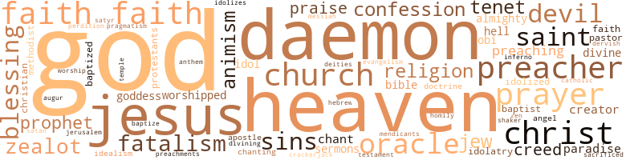

Night Studies, by Colter, Cyrus (1979)
299 music-related terms matched in this text.
Most frequent terms in this topic: music (52); piano (24); suite (18); singing (15); song (14)
accordion.n.01
Definition: a portable box-shaped free-reed instrument; the reeds are made to vibrate by air from the bellows controlled by the player
| word | sentence |
|---|---|
| accordion | It was too bad there was not time to hark back into the residue of his memories and dwell , dawdle , upon them ; time had now collapsed all that like a deflated accordion ; yet there persisted this palpitating presence of almost total recall ; as it were , a data bank disgorging its long-held stores , its secrets . |
| accordion | The six-piece band - piano , trumpet , drums , flute , electric guitar , and accordion - played from seats on a dais against the far wall . |
| accordion | The band , led by the accordion player , a lanky , bearded Basque wearing a black poncho , began playing with even greater fervor and abandon than before . |
belt_out.v.01
Definition: sing loudly and forcefully
| word | sentence |
|---|---|
| belted | But the belted raincoat she wore , the calf-length lizard boots , the green cloche hat , all conveyed the quaint , arty , image she loved so much to affect as she came out of the Ecole through its ancient portal . |
| belted | Never had he seen such beauty hallowing , purifying , a face - there it was , upturned toward the stage , her eyes first riveted , then glazed , soul entranced , hair cascading down the belted corduroy jacket of her mod attire . |
canto.n.02
Definition: a major division of a long poem
| word | sentence |
|---|---|
| canto | It is some other affection I feel ; by this venture possibly we shall be saved from further wanderings and , as in the Dantean paradiso , canto twenty-five , returned to the same font where we were baptized - a nativity - and to that fair sheepfold where , as lambs , we slept . |
cello.n.01
Definition: a large stringed instrument; seated player holds it upright while playing
| word | sentence |
|---|---|
| cello | " We can live vicariously for a moment - in the past . . . when you skipped rope , climbed trees , and played the cello ; and when Jocelyn and Ronnie ran after you wherever you went . |
chant.n.01
Definition: a repetitive song in which as many syllables as necessary are assigned to a single tone
| word | sentence |
|---|---|
| chant | The Lord God has willed it this way and this was the way it was to be - if only there could be some let-up in the physical pain , the continual flirting with , the nearness to death , which , however , it seemed , was almost always involved ; it was a process at work , the unwitting process of his psychic sterilization ; it had transformed him into a piece of wood , a stone , a clod ; but he was not aware of this ; he thought rather , with blasphemous irony , a higher power to be involved ; it was as if the old chant had come in his head : Everywhere I go Somebody 's talkin ' about Jesus . |
| chant | Many of the customers began singing now , or shouting across the tables at each other , or just sitting and snapping their fingers in time with the chant - though one couple , squealing in glee , the girl still in her overcoat , went into an unrestrainable hip-slinging dance in the middle of the floor . |
| chants | She saw the big moon rising above the dark jungle horizon and , though her faith had long since been shaken , she wished she might somehow consult the Oracle of her clan for succor , guidance , as was her family 's practise when the moon was full over her father 's compound and the dancing , raffia-skirted medicine men sent up their fearful chants . |
chapter.n.01
Definition: a subdivision of a written work; usually numbered and titled
| word | sentence |
|---|---|
| chapter | Now she had destroyed his few letters , bitterly tom them into ; desperate tiny bits before discarding them in the trash can on the back stoop - the final chapter , she thought , the end . |
| chapter | There was general gratification throughout , especially in Cincinnati , where Central Planning Committee member ( and troublemaker ) Jesse Lumpkins headed the local chapter . |
| chapter | It is a sad , sad story , cherie - a heartwrenching tragic , final chapter . |
| chapter | What a final , final , chapter , chérie , when we think of the glorious times we had . " |
chorus.n.01
Definition: any utterance produced simultaneously by a group
| word | sentence |
|---|---|
| chorus | This was especially true when , early in the evening , the children 's chorus , dressed , not in white , but black , sang the moving spiritual " We Are Climbin ' Jacob 's Ladder . " |
| chorus | Again she looked over at the children 's chorus , trying to find , identify , Ernestine and Vernon - she hoped Vernon was awake - as the tender , yet somehow triumphant , music of travail and faith searched out the hearts and consciousness of the hushed , rapt throng . |
| chorus | The fourth and final act brought on the chorus . |
| chorus | Finally the three prior acts returned on stage , followed again by the chorus , all to take more bows - their " curtain calls " - and share in the deafening applause . |
clarion.n.01
Definition: a medieval brass instrument with a clear shrill tone
| word | sentence |
|---|---|
| clarion | Though she was nervous , excited , scared , her voice had somehow taken on a clarion ring that carried to the farthest corners of the large room . |
| clarion | " My name is Harriet Tubman Hungerford , " she said in a clarion tone . |
clipping.n.01
Definition: an excerpt cut from a newspaper or magazine
| word | sentence |
|---|---|
| clippings | Soon , fumbling in his jacket pocket , he brought out an envelope containing a sheaf of worn , soiled newspaper clippings . |
| clippings | He began his arrangement of the clippings with the first date , that of the shooting - May 18th . |
| clippings | It was Saturday morning and she was rummaging through months , years , decades , of accumulation of papers and bric-a-brack - - newspaper clippings , snapshots , books , letters , pins , buttons ; a teen-ager 's tarnished costume jewelry , and , thrown carelessly across a chair , even the ancient Halloween getup of a-nine-year-old child - herself . |
cornet.n.01
Definition: a brass musical instrument with a brilliant tone; has a narrow tube and a flared bell and is played by means of valves
| word | sentence |
|---|---|
| trumpet | The six-piece band - piano , trumpet , drums , flute , electric guitar , and accordion - played from seats on a dais against the far wall . |
| trumpet | Meantime , the flute player had got out his piccolo , and although the little band now let loose with all its might , the piccolo could be heard shrilling over the blaring noise of drums , trumpet , electric guitar , and other instruments . |
dance.n.01
Definition: an artistic form of nonverbal communication
| word | sentence |
|---|---|
| dance | " As you can see if you 'll turn around , I 've come , thousands of miles , from a dance , a ball - which went on so long it was like a marathon . |
| dance | Many of the customers began singing now , or shouting across the tables at each other , or just sitting and snapping their fingers in time with the chant - though one couple , squealing in glee , the girl still in her overcoat , went into an unrestrainable hip-slinging dance in the middle of the floor . |
| dance | " You wanta dance , Vernon ? " |
dance.v.02
Definition: move in a pattern; usually to musical accompaniment; do or perform a dance
| word | sentence |
|---|---|
| dance | But by now the leg irons , the wrist irons too , had taken their toll ; the bleeding raw flesh soon made clear to Stokes that forcing the men to dance only increased the peril of further losses and he had the practice stopped . |
dance.v.03
Definition: skip, leap, or move up and down or sideways
| word | sentence |
|---|---|
| danced | They danced in two rows of three , for the tiny floor would not have accommodated them abreast . |
| dance | The show at last over , everyone was getting up and surging onto the little floor to dance . |
| dance | Raoul and : Adrienne were already on the floor when Philip led Mary Dee through the tables to the front to dance . |
| danced | The floor was jam-packed and the other dancers were curious , friendly , watching the handsome pair , who were unmindful of all their surroundings until Raoul and Adrienne , smiling knowingly , mockingly , danced by . |
| dancing | Philip spluttered angrily , dancing away from them - " His damned maneuvers ! |
| dancing | Philip said , dancing her almost to the floor 's edge . |
| danced | Later Philip danced with Adrienne , Raoul with Mary Dee . |
| danced | On the other side of the floor as he danced , Philip 's face was a mask . |
| danced | At both the Mark Hopkins and the St. Francis I 've danced for days , for nights - ah , John Calvin , the dance of death . " |
| dance | She loved the music and knew later the little floor would fill up with dancers , though she herself did not wish to dance . |
| dance | Then on some fine days , with the ship shooting through turquoise waters and its sails full and billowing before the friendly trades , the women and children permitted on deck were exhorted by the crew to sing and dance . |
development.n.09
Definition: (music) the section of a composition or movement (especially in sonata form) where the major musical themes are developed and elaborated
| word | sentence |
|---|---|
| developments | On the other hand , Griselda , as a result of recent developments - i.e. her midnight visit from Knight , unproductive , unconsummated , experience though it was - seemed unusually reticent ; though she was the soul of retiring friendliness and cooperation in the office , she was yet noncommittal about anything of importance . |
dirge.n.01
Definition: a song or hymn of mourning composed or performed as a memorial to a dead person
| word | sentence |
|---|---|
| dirge | The mountaineer , dazed , limp , sated , his back bloodied through his robe , was helped onto his horse by the others : and they soon all rode off into , the night Before long , far down the pike ; the cadenced hooves of their horses could be heard echoing just as before , though now receding , as the blacks ' oblivious , mournful dirge went on and on into a seeming eternity . |
ditty.n.01
Definition: a short simple song (or the words of a poem intended to be sung)
| word | sentence |
|---|---|
| ditty | The band was playing a loud rock ditty while two roly-poly women in tights and a little shrimp of a man with a waxed mustache went through a wild tumbling act . |
epistle.n.02
Definition: a book of the New Testament written in the form of a letter from an Apostle
| word | sentence |
|---|---|
| epistle | It was him that told us in the first epistle to the Corinthians : ' For Christ sent me not to baptize , but to preach the gospel . |
| epistle | That 's from Paul 's epistle to the Romans . |
excerpt.n.01
Definition: a passage selected from a larger work
| word | sentence |
|---|---|
| excerpts | Here were the excerpts which seemed to him during tonight 's session to have special significance and relevance - from DuBois ( two ) , then Douglas , and King . |
| excerpts | From so many continuous long nights of study his eyes pained him as he pored over the excerpts again to make sure he had read nothing amiss . |
| excerpt | It was cited as an excerpt from a speech Knight had made the past summer in New York . |
gong.n.01
Definition: a percussion instrument consisting of a metal plate that is struck with a softheaded drumstick
| word | sentence |
|---|---|
| gong | Do not forget our father - when the iron gong sounds , he will want his chicken hash and manioc brought to him at once . |
guitar.n.01
Definition: a stringed instrument usually having six strings; played by strumming or plucking
| word | sentence |
|---|---|
| guitar | The six-piece band - piano , trumpet , drums , flute , electric guitar , and accordion - played from seats on a dais against the far wall . |
| guitar | Meantime , the flute player had got out his piccolo , and although the little band now let loose with all its might , the piccolo could be heard shrilling over the blaring noise of drums , trumpet , electric guitar , and other instruments . |
hymn.n.01
Definition: a song of praise (to God or to a saint or to a nation)
| word | sentence |
|---|---|
| anthem | As she sang " His Eye Is On The Sparrow , " which her high , fervent voice made sound like an anthem , her own eyes , slate-colored and dead , moved up , up , in her mesmeric manner , it seemed , to the very steel girders high above . |
intermezzo.n.02
Definition: a short piece of instrumental music composed for performance between acts of a drama or opera
| word | sentence |
|---|---|
| intermezzo | The music was Brahms - an intermezzo . |
intonation.n.03
Definition: the act of singing in a monotonous tone
| word | sentence |
|---|---|
| chanting | Now in the black stillness of the night there was only the vague chanting of crickets and the occasional drifting fireflies . |
kick.v.04
Definition: kick a leg up
| word | sentence |
|---|---|
| kicking | Some of the onlookers were already cursing , striking , or kicking at the prostrate , bleeding prisoner and Rudd and Livermore now had real fears they might not be able to save him from the crowd for their own purposes . |
| kicking | The chorus girls were stamping , whirling , squealing , and kicking their heels and big thighs high as the scent of their damp powder and sweetish perfume wafted out into the darkened crowd . |
movement.n.05
Definition: a major self-contained part of a symphony or sonata
| word | sentence |
|---|---|
| movement | Once he thought he saw something through the greyish haze ; , he imagined it had been a. slight movement , some wraithlike creature , down on all fours , slowly , painfully , traversing that deck - another wanderer . |
| movement | He thought now , on the deck opposite , he saw the same slight movement as before - a ghost on its knees , smallish , as a child , moving like some phantom across that slimy deck . |
music.n.01
Definition: an artistic form of auditory communication incorporating instrumental or vocal tones in a structured and continuous manner
| word | sentence |
|---|---|
| music | That one little record made jazz history - it became famous the world over as a music to be taken seriously , I 'll tell you . |
| music | Think of the pleasure , the happiness , that and the other Negro music has brought to millions on millions of people - all over the world , black and white . |
| music | " My dear friend and-young colleague Lily Heller , who shares my apartment , has opened a small music store . |
| music | Considering the : , modest capital we were able to put into it , she managed to stock : it well enough - she has voluminous sheet music and music scores of every kind , plus a fairly adequate stock of both popular and classical records and cassettes . |
| music | Considering the : , modest capital we were able to put into it , she managed to stock : it well enough - she has voluminous sheet music and music scores of every kind , plus a fairly adequate stock of both popular and classical records and cassettes . |
| music | " It 's a mishmash , and comes through in a thousand different ways - especially in our music . |
| music | Until Ma came along , the blues were nothing but black folks ' country music - that 's all . |
| music | He had early discovered that women were somehow fascinated at hearing him talk , expatiate , on the myriad subjects he had informed himself on in an absorbed and zealous reading of all the newspapers , magazines , and books he could lay hands on ; he especially loved politics and history - Negro history , and art as well , especially Negro music , and was quick , particularly with these impressionable women , to open conversation on any subject that in a recent book had caught his fancy - all on the scant foundation of a high school education acquired it seemed eons ago , in Frankfort , Kentucky . |
| music | In his pajamas , he sat at the small lighted table in the bedroom of his apartment , the open ledger-like diary before Him ; His little bedside AM-FM radio had been playing soft music , but a moment ago he had : gotten up and . |
| music | I rented one - oh , I must have my music when life gets to be a drag , as it is now most of the time . " |
| music | Then came the try at music , the tortured , protracted piano study , the cautious hopes fora career . |
| music | This was the odds-off accident that on that fateful night of music had brought him to the feet of Griselda . |
| music | His piano music is simply beautiful ! |
| music | Again she looked over at the children 's chorus , trying to find , identify , Ernestine and Vernon - she hoped Vernon was awake - as the tender , yet somehow triumphant , music of travail and faith searched out the hearts and consciousness of the hushed , rapt throng . |
| music | Already they could hear the raucous music pouring out from below as he passed them along to an unkempt matronly woman wearing a buttoned sweater and standing at the bottom of the narrow stone steps . |
| music | At their table Raoul yelled something to Philip but could not make himself heard over the din of the music accompanying the first act of the show . |
| music | Excited , her hoop earrings flying , she would suddenly whirl and over the noise of the music try to say something to Philip , or to Raoul or Adrienne . |
| music | But the music blared out now . |
| music | She waited for the music to subside . |
| music | Soon the music stopped and , saying no more to each other , they left the dance floor with the others . |
| music | Nancy Hanks took a cheerful , commodious Huntington Park apartment for three persons , brought with her her friend and companion , lithesome , attractive Lily Heller , the music shop proprietress , and embarked on the sincerest of efforts at warm domesticity for the three of them . |
| music | There was a confrontation one morning in the kitchen after Lily Heller had left for her music shop . |
| music | Raoul said the moment the music began . |
| music | You hum their music - I hear you . " |
| music | " Yes , but it is the Germans - it is the Germans and their cousins , the Austrians - who have the giants in music . |
| music | When they took Paris in 1940 , they used our l'Opera to stage their victorious music dramas , especially Gotterdammerung . |
| music | I know little of music but I know something of men , and I know that these songs are the articulate message of the slave to the world . |
| music | They are the music of an unhappy people , of the children of disappointment ; they tell of death and suffering and unvoiced longing toward a truer world ; of misty wanderings and hidden ways . " |
| music | Griselda listened to the music now too , wanting above all things to avoid hearing further mention of her mother . |
| music | While I 'm combing my hair now And wondering what to press to wear now , I say a little prayer for you ; Forever , and forever , to say in my heart That I will love you forever , Forever , forever , and forever ... The music filled Griselda with a kind of wild , stoic sadness . |
| music | " I like music , " she said to him , and smiled - " Especially Ray Charles and Stevie Wonder . " |
| music | The youth 's radio across the aisle was playing music not familiar to her now . |
| music | The music , a rock band , was suddenly wild , savage , and he turned the volume down . |
| music | You got ta get used to those cats - that kind of music . |
| music | For the last two hours , throughout most of the music , Marvin had sat so utterly distracted over her he hardly knew where he was . |
| music | He spoke , she thought , almost as though she had failed on her part of some bargain , some solemn pact ; when there had merely been the tacit understanding between them that he was to try to help the woman she lived with , Lily Heller , get a bank loan for a music and record shop while she was to try to get any information obtainable - through a black woman friend , among others - on Griselda 's present whereabouts . |
| music | One of the Superfly youths put another coin in the jukebox and the place exploded in an uprising of instrumental and vocal music with a hard , riotous , gutbucket beat . |
| music | " They think they dig the stuff like we do - like it 's their music . " |
| music | Someone with a coin provided more music now . |
| music | The music had stopped and he picked up one of his pamphlets of poems off the counter . |
| music | Nancy Hanks , drink in hand , seated in one of the downy-plush sofas , was staring around at the marvelous landscape paintings on the wall , but soon she saw the two stacks of music scores on the piano and got up to go look through them . |
| music | - Oh , look at all this wonderful music I 've got here ! |
| music | " Ask her to sing about the love child - really , it 's Monteverdi 's music . " |
| music | The music was Brahms - an intermezzo . |
| music | " I have the music right here somewhere ! " |
| music | He began rummaging , pawing madly , through the music scores . |
| music | Once inside , they heard the orchestra 's gay dinner music even before Philip gave his name to the tuxedoed maitre d'hotel and they were ushered in . |
| music | She loved the music and knew later the little floor would fill up with dancers , though she herself did not wish to dance . |
| music | Philip went and got himself a Scotch and soda and came back and turned on the low , velvety music of the FM radio . |
| music | She was watching the artist and devouring the music . |
| music | But before Marvin had noticed her - little Marvin the runt , the champion typist , the secretarial school headmaster - he had sat slightly to the left in the row behind her and the older woman with her , uttering little grunts of involvement with the singer 's music and digging his fingernails into his moist palms , as meanwhile the perfervid music came down onto the audience like the spirit of the Holy Ghost at Pentecost . |
| music | But before Marvin had noticed her - little Marvin the runt , the champion typist , the secretarial school headmaster - he had sat slightly to the left in the row behind her and the older woman with her , uttering little grunts of involvement with the singer 's music and digging his fingernails into his moist palms , as meanwhile the perfervid music came down onto the audience like the spirit of the Holy Ghost at Pentecost . |
musical_instrument.n.01
Definition: any of various devices or contrivances that can be used to produce musical tones or sounds
| word | sentence |
|---|---|
| instrument | As an individual l am nothing , but as an instrument I am much , in that I have touched this the vital spark among the people - the folk . |
| instruments | Sam 's hands were flying everywhere over the few available instruments , trying anything he knew to keep the motor alive . |
| instruments | Meantime , the flute player had got out his piccolo , and although the little band now let loose with all its might , the piccolo could be heard shrilling over the blaring noise of drums , trumpet , electric guitar , and other instruments . |
| instrument | To this end she regarded Knight an instrument - the instrument . |
| instrument | To this end she regarded Knight an instrument - the instrument . |
| instrument | The stereo instrument 's volume was down , but Robeson 's deep bass voice , confident , determined , full of pride and nobility , yet poignance and hope , filled the room . |
| instrument | Maybe it 's true I was an instrument in what eventually happened - to her and to me - but it was surely not my intention . |
| instrument | But the possibility that I was the instrument , knowingly or otherwise , of her self revelation worries me a lot . |
| instruments | We got a bunch of kooks like that in the circus - - they play all kind of instruments , though ; good musicians ; real weird - they would n't , take , a bath for their mother ; stink all the time - women worse 'n the men . |
| instrument | To use it the iron legs were closed and forced between the subdued victim 's teeth ; when the thumbscrew was tightened , the legs of the instrument separated , gradually forcing open the mouth , into which the slabber sauce was then poured through a funnel . |
| instrument | In fear of their lives , they stepped back from the instrument and stood behind Cockle at the wheel . |
| instrument | When he had received it , he turned to Stokes again and asked : " What is the use made of this instrument ? " |
| instrument | Woot at the moment stood impassive , his hand resting on the instrument that vouchsafed direction - the compass - as he peered out over the great gathering . |
| instrument | But the instrument is no good to us - its use was not taught us by our elders . |
| instrument | " The rites begin tonight ! " he declared earnestly , then pointed at the compass - " here : on the spot of this instrument , their direction finder . |
opening.n.07
Definition: the initial part of the introduction
| word | sentence |
|---|---|
| opening | Gideon well recalled the opening lines : Weep , Black troopers of sorrow ! |
phrase.n.02
Definition: a short musical passage
| word | sentence |
|---|---|
| phrase | A decade ago , Knight well recalled , he had heard the great leader use the phrase one afternoon in . |
| phrase | The phrase seemed to him now even more apt , if possible , than his father 's way of saying something very similar . |
piano.n.01
Definition: a keyboard instrument that is played by depressing keys that cause hammers to strike tuned strings and produce sounds
| word | sentence |
|---|---|
| piano | As it is , on my piano I play parts of The Well Tempered Clavier of Bach 's not too badly - certainly with emotion , with real inner passion . |
| piano | I had a frightful row with him when I asked that a piano-just a little spinet piano - be put in my suite . |
| piano | Thank you - thank you , Mr. Abel : Oh , one more thing - I 'll need a couple of men to move my little piano down the hall . |
| piano | I told you I need someone to help me with my piano ! " |
| piano | Two bellmen soon came and moved him , tiny piano and all , into the suite of mirrors . |
| piano | " But I 'll bet it did n't have a piano when you were there - now did it ? |
| piano | " So you have a piano , " the girl said , pettishly - " What else is new , Marvin ? " |
| piano | Now to calm his agitation he went out to the little piano , situated almost in the middle of the parlor , sat down , and began to play , a Stephen Foster tune he loved so well - " I Dream of Jeannie with the Light Brown Hair . " |
| piano | I want to play my piano for you , sing to you-talk to you . " |
| piano | Suddenly then , laughing he jumped up , went to the piano , and began playing and singing ; his quavering , sentimental , falsetto voice carrying almost beyond the door of the suite and out into the hall : Down in some lone valley and in a lonesome place , Where the wild birds do whistle , and their notes do increase Farewell pretty Saro , I bid you adieu , But I 'll dream of pretty Saro wherever I go . |
| piano | Then came the try at music , the tortured , protracted piano study , the cautious hopes fora career . |
| piano | The musical number , next , was a solo sung by a blind girl - a tall , slender , sallow yellow , young woman who was led to the microphone by her piano accompanist , a boy of no more than high school age . |
| piano | There was the same steely , manic strength in these fingers he had once seen in the concert pianist Rene Gasparo 's - who when finally insane had each day to be forcibly pulled away from the piano where he insisted on playing scales ten hours at a stretch . |
| piano | - on the Ile St.-Louis , where Nadine , who thus far was reared by my mother - whom she misses terribly - has a governess and a grand piano on which she plays Dementi and Chopin . |
| piano | Nancy Hanks ' laugh was coarse , hard - " Ha , just as you play the piano ! |
| piano | Typing , the teaching of it , and perhaps his piano , were the insubstantial fillers in the otherwise hollow existence of this strange Nob Hill scion , this patrician dilettante . |
| piano | Hugely monopolizing one comer sat an immense Knabe orchestral grand piano . |
| piano | Nancy Hanks , drink in hand , seated in one of the downy-plush sofas , was staring around at the marvelous landscape paintings on the wall , but soon she saw the two stacks of music scores on the piano and got up to go look through them . |
| piano | Nancy Hanks , still standing beside the piano , hung her head in self-contemplation . |
| piano | Griselda , taking her drink along , went over to the far sofa and sank moodily into it At last Marvin sat down at the piano and began to play - softly , dreamily , closed eyes toward the ceiling . |
| piano | introduction - a quiet , languorous , flowing melody - as Nancy Hanks , with gravest dignity , stood waiting in the bend of the piano . |
| piano | The blind black singer , first assailing the piano , then cajoling the organ , his tinseled orange shirt darkened with sweat , dead eyes behind amber shades , wailed out of a soul in ecstasy , frenzy , so it looked , to cast his sorcery specifically over her . |
| piano | Much of the time in the weeks that followed he was silent , glum , or would sit playing his great piano , often sadly humming and mumbling to himself for hours . |
| piano | At last he wandered over to the grand piano and sat down , yet could not bring himself even to touch the keys . |
piccolo.n.01
Definition: a small flute; pitched an octave above the standard flute
| word | sentence |
|---|---|
| piccolo | Meantime , the flute player had got out his piccolo , and although the little band now let loose with all its might , the piccolo could be heard shrilling over the blaring noise of drums , trumpet , electric guitar , and other instruments . |
| piccolo | Meantime , the flute player had got out his piccolo , and although the little band now let loose with all its might , the piccolo could be heard shrilling over the blaring noise of drums , trumpet , electric guitar , and other instruments . |
pipe.n.04
Definition: a tubular wind instrument
| word | sentence |
|---|---|
| pipe | Take your own case ; you got a lead pipe cinch - most of these people have knowed you since you was a kid goin ' fishin ' barefooted . |
| pipes | I have bolts of the most favored and beauteous cloth of many colors , hogsheads of the finest and most pleasure-giving distilled spirits ; also pipes , tobacco , cutlasses , gunpowder , ball and flint for muskets , plus bags upon bags of cowries . |
| pipe | It was midnight , and Stokes , alone in this apparitional light , stood on the poop deck placidly smoking his third pipe of Virginia tobacco . |
| pipe | Stokes lit his pipe again and gazed at the moon . |
| pipe | After he had eaten , he poured a glass of port and lit his pipe , his mind , however , a vacuum in the sense that it yearned for some kind of revelation ; it was irresolute , ungratified ; there was a vague , unformed craving that something as yet unrevealed be bom ; that the connecting line of life not be irrevocably cut ; that it be somehow sustained , given new tenure ; that vigor , freshness , come out of woe and putrefaction . |
| pipes | Somber , - grave , now , ho heard the resultant loud , roll of the marine bandsmen 's drums echoing through the ship and the pipes twittering as the bosun 's mates repeated his orders . |
psalmody.n.01
Definition: the act of singing psalms or hymns
| word | sentence |
|---|---|
| psalmody | Though , he thought whenever lucid , it was only because he so often wished to be able to lie on his side in this bed , instead of always on his back , and face the impersonal wall , rather than eternally to have his hot , wet eyes fixed on the ceiling , where at night , the lights gone low into a kind of gloaming , he saw the hordes , the " people , " the forebears ( his and the ancestors of those for whom today he suffered ) , the venerable ancients panting from their exertions , faces bearing tribal scars or grotesque masks , bodies ceremonially painted , moving to the psalmody of the village medicine men and musicians whose drums and reed flutes prepared them all for the communal ancestral feasts of the earth goddess Ani , source of all fertility . |
rap.n.05
Definition: genre of African-American music of the 1980s and 1990s in which rhyming lyrics are chanted to a musical accompaniment; several forms of rap have emerged
| word | sentence |
|---|---|
| rap | Yet - there 's so much ahead for you - you may well beat the rap . |
requiem.n.02
Definition: a musical setting for a Mass celebrating the dead
| word | sentence |
|---|---|
| requiem | He felt , however , she had virtually dragged her mother there , and , though obscurely indistinct to Griselda , perhaps for a purpose - maybe to Griselda Ray Charles was to sing a belated requiem that night , a Grande Messe des Morts , for all mute , fallen blacks in Viet Nam . . . including her own . |
rhythm.n.04
Definition: the arrangement of spoken words alternating stressed and unstressed elements
| word | sentence |
|---|---|
| rhythm | Gideon began snapping his fingers in rhythm . |
score.n.02
Definition: a written form of a musical composition; parts for different instruments appear on separate staves on large pages
| word | sentence |
|---|---|
| scores | She meant to be unfettered , purposeful , hard - to even old scores . |
| scores | Though she sometimes vacillated on this subject , as of course he did himself , she always returned to her first thirst for blood , to the need , the compulsion , to wreak vengeance on her former tormentors , the Philadelphia Wilcoxes and all their kind everywhere , and to try , if only symbolically , to somehow even old scores . |
| scores | He began rummaging , pawing madly , through the music scores . |
| scores | She thought Ornette entirely right ; now she knew what it was like to hate , to want to even old scores with people like Philip 's parents , and all others like them . |
section.n.01
Definition: a self-contained part of a larger composition (written or musical)
| word | sentence |
|---|---|
| section | Similar great plans had been made before , in the early past spring , including preparations for a giant rally and parade into the downtown section , the Chicago " Loop , " but everything had been aborted , thrown into confusion , utter chaos , by the attempt on Knight 's life . |
| section | The girl , slightly , very slightly , olive-complexioned but with Negro hair and very pretty , sat in the center , section about a dozen rows from the front , her burning eyes trained , it seemed , on her , Mary Dee . |
| section | What to her , midway into this chatty but crucial letter , that was by far its most significant section read " Your second letter , yes , was so much better than your first - in tone somewhat less dismal . |
| section | This is a truly lovely section of the state - the seacoast and its islands . |
| section | The women were also crowded down into the hold , into their separate section , as were the children , with a separate shelf space for the boys and another for the girls . |
| section | In a separate shelved section of the hold , Osei and Bymba had been stowed with the other boys , fifteen of them in all , while the women were directly opposite them , though behind a floor-to-ceiling impassable partition , with the few female children aboard crammed into a small shelf over the women and protected by the same partition . |
| section | But it was not until an hour later that Whittier appeared in the women 's section of the hold , strangely barefoot and half drunk . |
| section | Bymba , in the boys ' partitioned-off section , knew nothing of what had happened to Mgboye , and in the days following attributed her absence on deck to her convalescence or possible forced retention in the women 's hold for some infraction . |
| section | He had also learned to tolerate Osei now , who followed him wherever he went ; Bymba talked constantly to the less venturesome boy of the possibility of trying to gain access to the men 's section of the hold where they could visit Bymba 's much admired fellow-Coromantee , Tippu . |
sing.v.02
Definition: produce tones with the voice
| word | sentence |
|---|---|
| sing | He felt , however , she had virtually dragged her mother there , and , though obscurely indistinct to Griselda , perhaps for a purpose - maybe to Griselda Ray Charles was to sing a belated requiem that night , a Grande Messe des Morts , for all mute , fallen blacks in Viet Nam . . . including her own . |
| sang | " I met him in Buenos Aires , " she said - " at the Opera there , the Teatro Colon ... when we both sang in Verdi 's A Masked Ball . |
| sing | When this happened I had to follow my own opportunities as I began to get better roles to sing . |
| sang | In fact , for the first of the four times I sang at the Met - for me the most significant happening of my life - he came all the way from London to be present . |
| sung | The role was ' Ulrica , ' in A Masked Ball , that I had sung with him in Buenos Aires the first year we met . |
| sing | He said he 'd had a peptic ulcerous condition brought on by intense overwork - this I doubted , as Fd never known him guilty of overwork - but that the condition had now improved spectacularly , to the point that he meant next month to sing ' Gerard ' in Andrea Chenier at Covent Garden . |
| sing | I want to play my piano for you , sing to you-talk to you . " |
| sing | I want to play and sing for you - talk to you . |
| sang | He sang three stanzas of the song in all , then stopped ; pulled out his handkerchief , and dabbed his moist brow . |
| sing | - listen to you play and sing ? " |
| sang | This was especially true when , early in the evening , the children 's chorus , dressed , not in white , but black , sang the moving spiritual " We Are Climbin ' Jacob 's Ladder . " |
| sung | The musical number , next , was a solo sung by a blind girl - a tall , slender , sallow yellow , young woman who was led to the microphone by her piano accompanist , a boy of no more than high school age . |
| sang | As she sang " His Eye Is On The Sparrow , " which her high , fervent voice made sound like an anthem , her own eyes , slate-colored and dead , moved up , up , in her mesmeric manner , it seemed , to the very steel girders high above . |
| sang | Then tall , haggard Denise took the floor and , stepping scrupulously around her mike cord , sang three songs , sang them well , and was ecstatically applauded . |
| sang | Then tall , haggard Denise took the floor and , stepping scrupulously around her mike cord , sang three songs , sang them well , and was ecstatically applauded . |
| sung | Again DuBois " The true Negro folk song still lives in the hearts of those who have heard them truly sung and in the hearts of the Negro people . |
| singing | So now here I 'm left merely singing the blues . |
| singing | And Aretha was singing so sweetly : I say a little prayer for you The moment I wake up , Before I put on my make-up , I say a little prayer for you . |
| singing | Many of the customers began singing now , or shouting across the tables at each other , or just sitting and snapping their fingers in time with the chant - though one couple , squealing in glee , the girl still in her overcoat , went into an unrestrainable hip-slinging dance in the middle of the floor . |
| Sing | " Sing something , Mother , " Griselda said derisively , already well into her highball . |
| Sing | Sing something ! |
| Sing | " Sing about the love child , Mother , " she said , bitter sarcasm in her voice . |
| sing | " Ask her to sing about the love child - really , it 's Monteverdi 's music . " |
| sang | Marvin sang out . |
| sing | " Mother , sing something for Marvin , " she said seriously , her tone free of sarcasm now . |
| sing | " Go on - sing Brahm 's Sapphic Ode ... or May Night " " Oh , my God , " said Marvin , dramatically , in a whisper of excitement - - " Does she know May Night ? " |
| sing | Then she began to sing , in a velvet-rich mezzo - her German diction flawless . |
| sing | But they could get her to sing nothing more . |
| sang | " But you sang so beautifully ! |
| singing | It was playing Bessie Smith singing the blues , and , for the first time in her life , she listened . |
| sings | How he sings their praises ! |
| sang | But I dreamed in the night that in that far-off place , called Jong sang doo ( ' the land where the slaves are sold ' ) , we shall be slaughtered and eaten by the white men there . |
| sing | Then on some fine days , with the ship shooting through turquoise waters and its sails full and billowing before the friendly trades , the women and children permitted on deck were exhorted by the crew to sing and dance . |
singing.n.01
Definition: the act of singing vocal music
| word | sentence |
|---|---|
| singing | Even the singing birds frightened him . |
| singing | He finally reached a scrubby , grassy knoll amidst again the cheerful singing of the birds . |
| singing | The great gangs of workers , men , women , and children , marching to the fields each morning at sun-up were somehow always black , ragged , and shambling ; and , ironically , sometimes singing . |
| singing | Suddenly then , laughing he jumped up , went to the piano , and began playing and singing ; his quavering , sentimental , falsetto voice carrying almost beyond the door of the suite and out into the hall : Down in some lone valley and in a lonesome place , Where the wild birds do whistle , and their notes do increase Farewell pretty Saro , I bid you adieu , But I 'll dream of pretty Saro wherever I go . |
| singing | Adrienne adored her ingenuousness but well recognized her complexity also - as Philip sat stealing enraptured glances at the earrings - The second act of the floor show was a mezzo-soprano singing popular love songs . |
| singing | Later they sat in the parlor listening on her ' stereo to Paul Robeson singing " No More Auction . " |
| singing | Softly , Robeson now was singing " Did n't My Lord Deliver Daniel ? " |
| singing | But soon Dionne Warwick 's voice came on , singing . |
| singing | In a moment she had clasped both hands in front of her , singing with the closed eyes and rapt concentration of a concert singer before a tense , packed house . |
| singing | Many of them were marching and shouting , or singing , with clenched fists raised high in defiance . |
| singing | There were also the mosquitoes - it was much later , in the dead of night , when Nene awoke to the singing in her ear of a huge mosquito . |
song.n.01
Definition: a short musical composition with words
| word | sentence |
|---|---|
| song | Herta , squatting on the ground only ten feet from Rodney 's corpse , had begun a loud moaning , which soon became a kind of low , guttural , wordless song . |
| Song | Soon Goforth , almost suddenly oblivious , grinned broadly ; as he said to Knight : " Bet you ca n't remember a single damn - line ; from W. E. B. DuBois - from his The Song of the Smoke . ' |
| song | but somewhere in the middle of it I remember : lam the smoke king , I am black , I am darkening with song , I am hearkening to wrong ; I will be as black as blackness can , The blacker the mantle the mightier the man , The purpl ' ing midnights no day dawn may ban . |
| song | Lord , have mercy - yes , way back then , back when there was n't any hope ; as the song says , back ' in the days when hope unborn had died . ' |
| song | He tried humming the song again now , accompanying himself lugubriously on the spinet . |
| song | He sang three stanzas of the song in all , then stopped ; pulled out his handkerchief , and dabbed his moist brow . |
| song | " Oh , that 's such a lovely , sad song - popular in early American colonial days . |
| songs | I love the old American songs , do n't you ? " |
| songs | Adrienne adored her ingenuousness but well recognized her complexity also - as Philip sat stealing enraptured glances at the earrings - The second act of the floor show was a mezzo-soprano singing popular love songs . |
| songs | Then tall , haggard Denise took the floor and , stepping scrupulously around her mike cord , sang three songs , sang them well , and was ecstatically applauded . |
| song | The last song Mary Dee loved . |
| song | Caught in the spell of the song , Mary Dee did not once take her eyes from the singer 's gaunt , rouged face . |
| songs | Her songs ; finally over , Denise retired amid stormy applause , as Philip , feeling : the old pain , and frustration , savagely gulped his drink and was silent . |
| song | Adrienne went over and found Berlioz song cycle Nuits d'ete among the records and put it on . |
| song | Again DuBois " The true Negro folk song still lives in the hearts of those who have heard them truly sung and in the hearts of the Negro people . |
| songs | What are these songs and what do they mean ? |
| songs | I know little of music but I know something of men , and I know that these songs are the articulate message of the slave to the world . |
| songs | Not all the past South , though it rose from the dead , can gainsay the heart touching witness of these songs . |
| song | Aretha 's high , plaintive voice of song came out of the little radio across the aisle straight at her now . |
| song | Out of the jukebox came James Brown 's frenzied , squealing voice taking the song high up over his , band 's fervid beat . |
| song | But Gideon , his voice strident , unfaltering , was already reading : Black heads high , Eyes aloft in that trance , Our song , not others ' deaths , Is the soul - black and pristine pure , Eternally . |
| song | When he finally found the song , he began humming it in his high tremolo even as he placed it up before him on the rack . |
| Song | Time is our tedious Song should here have ending , Heav ' ns youngest teemed Star , Hath fixt her polisht Car , Her sleeping Lord with Handmaid Lamp attending : And all about the Courtly Stable , Bright-harnest Angels sit in order serviceable . |
spinet.n.02
Definition: early model harpsichord with only one string per note
| word | sentence |
|---|---|
| spinet | I had a frightful row with him when I asked that a piano-just a little spinet piano - be put in my suite . |
| spinet | Well , it has one now - I saw to that ; at least a spinet . |
| spinet | He tried humming the song again now , accompanying himself lugubriously on the spinet . |
| spinet | Soon in his fervor ; his potato-shaped little body was swaying from side to side as he pounded the spinet and sent his high voice virtually scaling the walls . |
suite.n.01
Definition: a musical composition of several movements only loosely connected
| word | sentence |
|---|---|
| suite | all this as he went down the hall toward his suite . |
| suite | Then , well before reaching his suite , he encountered three scarlet-uniformed Hispanic busboys . |
| suite | The images cast were fluid , ever-changing , demonic , and seemed made up of a thousand radical hues - red , green , purple , yellow , blue , orange , white , even sable , then red again - all variegated and iridescent , dappling all the exposed surfaces of the resplendent suite . |
| suite | I had a frightful row with him when I asked that a piano-just a little spinet piano - be put in my suite . |
| suite | No , he 'll never let me change to that heavenly suite . |
| suite | " Senor , pardon me , but it 's a very expensive suite . " |
| suite | Marvin , trembling from his excitement , hurried down the hall , got out his key , and let himself in his own suite now . |
| suite | " I 'm Mr. Freuhlinghausen , in suite 1041 , " he said - " I 've just been in suite 1020 down the hall . |
| suite | " I 'm Mr. Freuhlinghausen , in suite 1041 , " he said - " I 've just been in suite 1020 down the hall . |
| suite | Two bellmen soon came and moved him , tiny piano and all , into the suite of mirrors . |
| suite | He went up , to 1020 , his new suite , turned on the madly-whirring colored light in . |
| suite | What good was this gorgeous suite that he had come upon so accidentally and gone to so much trouble to get , he thought , if there was no one to enjoy , revel in it with him ? |
| suite | He continued , " I have this beautiful suite , you see - with no one , absolutely no on , to share it with me ! |
| suite | " I thought you wanted to have some fun - up in that suite of yours . " |
| suite | Soon Marvin , pensive , thoughtful , now , was in the elevator on the way up to his fantastic suite - his rendezvous . |
| suite | That 's why I so adore this suite - I saw it today for the first time but asked forit as quick as I could get to a phone . |
| suite | Suddenly then , four lines down , she had glimpsed the fateful words that sent her heart into a furious pounding - " in the suite of mirrors " was the way the tiny story described , specified , the site of death . |
| suite | He also kept a suite of three rooms in a small but very refined hotel over on the Right Bank , in the 8th Arrondissement - the Hotel Vilar , at No. 7 rue Chateaubriand . |
symphony.n.01
Definition: a long and complex sonata for symphony orchestra
| word | sentence |
|---|---|
| symphony | It was the way a famous young symphony conductor , poised , German , chivalric , should look , she thought . |
theme.n.03
Definition: (music) melodic subject of a musical composition
| word | sentence |
|---|---|
| theme | What should he be emphasizing , as the theme of the meeting - or as the direction of the movement for the future ? " |
| theme | Please think about this again for a moment - then tell me what you think should be the theme , the motif , of Mr. Knight 's address at the big mass meeting next month . |
| theme | That 's what Mr. Knight should be talking about - xenophobia - that should be his theme ! " |
tone.v.01
Definition: utter monotonously and repetitively and rhythmically
| word | sentence |
|---|---|
| chanting | - by chanting ' xenophobia ? ' |
| chanting | We need to pacify , to placate , the spirits - maybe by chanting , praying , by dancing in the moonlight as our witch doctors would do if they were here ; all will be in homage to our Oracle , who will then cast these evil spirits out . |
tune.n.01
Definition: a succession of notes forming a distinctive sequence
| word | sentence |
|---|---|
| lines | Gideon well recalled the opening lines : Weep , Black troopers of sorrow ! |
| line | Acts and Aaron had run off the road , into a line of tall , scraggly bushes , and kept going , as the old man , in reply to the questions , of neighbors running out , cried : " Them must be the same niggers that killed Clint Heskins ' sow this mornin ' ! |
| tune | Soon she began to hum a tune in his ear , which seemed to please , titillate , him greatly , after which Marvin 's eagle eyes saw her hand lightly stroke the inside of his thigh . |
| tune | Now to calm his agitation he went out to the little piano , situated almost in the middle of the parlor , sat down , and began to play , a Stephen Foster tune he loved so well - " I Dream of Jeannie with the Light Brown Hair . " |
| air | She held the brightly tricolored air mail missive , postmarked Paris , in her trembling hand for a moment as she whispered to herself something inaudible , like a prayer . |
| line | " Expectin ' this , I keep in close touch with Frimbo 's band , preparin ' myself for this awful judgment - because maybe I have sinned somewhere along the line too . |
| air | One time he had stayed well over a month , with his luggage full of books - almost always biographies of great leaders - and kept in touch with the office only by air mail or sporadic phone calls . |
| melody | He took ' I Ca n't Get Started ' and kept building and building spirals on the melody like Sonny Rollins . |
| line | But , standing in line , his eyes large , watching everything , he was terrified at the coming branding . |
| tune | Yet you see how our minds , the minds of civilized men , are in tune . |
upright.n.02
Definition: a piano with a vertical sounding board
| word | sentence |
|---|---|
| upright | he wondered , sitting bolt upright , seized with fear . |
| upright | It could come and go - he could have the highest thoughts sometimes ; when he was in high school ; say , and doing a term paper on Frederick Douglas ; oh , he 'd have the noblest thoughts ; he 'd catch fire , seems like - you should have read some of his papers , and him just a kid ; yeah , upright , lofty , thoughts ; full of race pride ; full of courage , determination , for all niggers . |
| upright | Mary Dee , Rosabelle , and Ornette came forward to welcome them , all six giving each other the " soul " handshake , an upright , perfervid , grip Mary Dee had never quite mastered . |
| upright | Lying beside her , Marvin sat bolt upright in the bed . |
| upright | They did not realize that , except for crawling out to visit the tubs , or twice daily to be fed on deck , they would not be permitted to sit upright during the entire voyage - which , depending on winds and weather , could take three months ! |
| upright | He sat bolt upright . |
violin.n.01
Definition: bowed stringed instrument that is the highest member of the violin family; this instrument has four strings and a hollow body and an unfretted fingerboard and is played with a bow
| word | sentence |
|---|---|
| violins | They ate , talked about mutual friends and the instructors at the Ecole des Beaux-Arts , and listened to the violins of the orchestra . |
| violin | The elegant room , almost completely dark , was like a gloaming , such light as there was coming from low romantic lamps on the tables , and over the quiet talk of the , fashionable patrons a violin played Begin the Beguine . |
| violin | She looked impassively around the room now as the romantic violin played gaily in the soft , low lights . |
warble.v.01
Definition: sing or play with trills, alternating with the half note above or below
| word | sentence |
|---|---|
| quavering | Suddenly then , laughing he jumped up , went to the piano , and began playing and singing ; his quavering , sentimental , falsetto voice carrying almost beyond the door of the suite and out into the hall : Down in some lone valley and in a lonesome place , Where the wild birds do whistle , and their notes do increase Farewell pretty Saro , I bid you adieu , But I 'll dream of pretty Saro wherever I go . |
| quavered | . . . " he quavered , tears running down - " It 'll be done , all right ! " |
| quaver | Nervous , almost trembling , yet with a vague smile on her face ; she stood there trying to summon strength for her voice , fearing it might quaver . |
| quavering | " I want to give you something , " he said , his voice quavering . |
| quavering | Two blacks leapt forward and seized the surgeon , who soon stood quavering in fear in their grasp . |
whistle.v.01
Definition: make whistling sounds
| word | sentence |
|---|---|
| whistle | Suddenly then , laughing he jumped up , went to the piano , and began playing and singing ; his quavering , sentimental , falsetto voice carrying almost beyond the door of the suite and out into the hall : Down in some lone valley and in a lonesome place , Where the wild birds do whistle , and their notes do increase Farewell pretty Saro , I bid you adieu , But I 'll dream of pretty Saro wherever I go . |
| whistle | He stepped back at once to the cover of the sapling , then , putting two fingers in his mouth , gave a loud , shrill whistle . |
| whistle | Slider Wente , who knew the whistle well , call . |
1071 violence-related terms matched in this text.
Most frequent terms in this topic: kill (58); anger (51); pistol (45); hate (39); killed (36)
abhor.v.01
Definition: find repugnant
| word | sentence |
|---|---|
| loathed | Goforth at times loathed these qualities in his son , yet at other times was impressed , awed , by them ; then puzzled , sometimes suspicious - that Johnnie 's ways were somehow a front behind which lurked gargantuan ambiguities . |
| loathing | he asked himself really loathing himself . |
| abhorred | She abhorred the mere Idea of Knight 's coming . |
| loathed | There was also the fact she had loathed , abhorred , the audience 's wild , frenzied " xenophobia " demonstration . |
| loathed | I loathed it . |
| abhorred | She still , however , abhorred her role as the defensive one of the two of them , a role she was not accustomed to play . |
| loathe | Besides , she was frightened , and also loathe to talk to him within earshot of listeners . |
| abhor | I like no longer being poor , but the responsibilities I abhor . |
| loathed | He can never explain her merely by saying she loathed being black and craved to be white . |
| loathed | They loathed me ! |
| loathed | . . . yes , how they loathed me ! |
| abhorred | She had always abhorred Women 's Lib and regarded , condescendingly , those carping females who always seemed , because of their unattractiveness , unable to cope in the free market of pure appeal - which , she thought , was how one got men , was n't it ? |
| abhorred | Also that he abhorred being even nudged , no matter how gently . |
| loathe | " I loathe you kneeling there like that ! |
abhorrence.n.01
Definition: hate coupled with disgust
| word | sentence |
|---|---|
| detestation | But soon they were surrounded by other knights , armed , robed , some also no longer hooded , others still mounted , but most now on foot Lanterns jostling , they dragged whimpering Dandy into a nearby clearing where the giant leader of the knights , Kleagle Hedgepath , booted , spurred , a sharpshooter 's rifle in his hand , strode out of a thicket and stood over the kneeling , cringing boy for a moment , looking down at him and curling his lip in detestation . |
| loathing | His loathing disapproval of her was naked , undisguised , and she thought now she knew why . |
| loathing | Marvin well recognized his own terrible shortcomings , she knew , and had this tragic , psychotic , loathing for himself . |
| loathing | He turned on his heel and stalked off in the direction of his shack - as the factor , patient , understanding , wily , gave him an indulgent smile and concealed his loathing contempt . |
| loathing | Jubel hated the aristocrats ' wealth , elegant manners , their smug behavior - their loathing of the white poor . |
| execrations | Woot had sat up on the cot - rage beclouding his face - remembering having before heard a similar litany when Stokes had read from this hated book up on deck , with the black woman screaming her fearful execrations at him and calling for his death . |
abrasion.n.01
Definition: an abraded area where the skin is torn or worn off
| word | sentence |
|---|---|
| scratch | Angry and upset , she returned to the office , where Ornette glumly offered to take her to a police station and report the theft , but Knight intervened and said he would take her himself , as he knew certain of the police officials , who would expedite the investigations At once he had become solicitous of her , almost hovering ; and earnestly trying to reassure her , played the car theft down , saying his own car had twice been stolen but both times found and returned by the police ; practically without a scratch . |
| abrasions | It was the ; roughest weather they had , encountered and wreaked havoc on the blacks in the hold who suffered a multitude of abrasions and contusions in the violent lurchings of the ship ; in the men 's case it only added to the bleeding wounds made by the shackles . |
affray.n.02
Definition: a noisy fight
| word | sentence |
|---|---|
| fray | At heart , however , Shipmate refused to see his inactive as entirely pure ; his father 's illness could add to the plausibility of his temporary retirement from the fray . |
| fray | Parret recklessly , rashly , needed someone to understand his feelings ; he was fully aware that a man , indeed a policeman , had died in the fray ; he comprehended the enormity of his act , and that the crowds milling around the hospital were not picnickers . |
aggravation.n.01
Definition: an exasperated feeling of annoyance
| word | sentence |
|---|---|
| exasperation | Rodya soon lifted his head from his feverish writing and spoke in utter exasperation . |
| exasperation | " You think " said Mamie , in both pity and exasperation . |
| exasperation | " Oh , come here , Marvin , " she said , in exasperation now . |
| exasperation | Ornette said , twisting in exasperation - " What 're you saying ? |
| exasperation | Nancy Hanks shook her head in utter futility and exasperation . |
| exasperation | The vague total of them he sensed consisted of a number of distinct parts admiration for her , for her character as well as her beauty ; also gratitude ; but exasperation too , especially with her talk of Frimbo ; then pity and wonder ; and of course lust , but also somehow love . |
| exasperation | His voice was full of exasperation . |
| exasperation | " Oh , Mother , " Griselda said in exasperation , " he 's never heard of you . |
| exasperation | She looked at him in astonishment , then exasperation . |
| exasperation | ... " Whittier , slightly , weaving from his rum , still stood over Mgboye , and when the Ibo woman linguister told him what she had said , smiled , shook his head in mock exasperation , and directed Mgboye 's skirtlike garment , covering her only from the waist to knees , be removed . |
| exasperation | " Oh , Chauncey ! " she sighed in exasperation - " Who said I was interested in him ? |
aggravation.n.02
Definition: unfriendly behavior that causes anger or resentment
| word | sentence |
|---|---|
| provocation | Others whips , which they used on slightest provocation . |
anger.n.01
Definition: a strong emotion; a feeling that is oriented toward some real or supposed grievance
| word | sentence |
|---|---|
| anger | He seemed in the longest , most significant , of them as much wrought up over Griselda 's leaving as he was in his waking hours - in a furor of anger , frustration , and sorrowing confusion . |
| anger | It had aroused and terrified her and , now bent over him outside , she wailed her anger and grief at what she had predicted would happen to him in the end . |
| anger | The air was electric , tense , now ; they rode on for a time in silence , though Knight 's anger had quickly subsided in the face of Shipmate 's clear sense of outrage . |
| anger | Here a hint of anger came in his voice . |
| ire | Ferdie had his quirks and conceits he knew , but anything , ripe or potential , posing a threat to the organization brought out all of Ferdie 's solid and sensible qualities his strengths , though his ire and cunning as well . |
| anger | Knight 's eyes had popped with , surprise then anger . |
| anger | . . . " There was scalding anger in her voice - she knew from his speech he was white . |
| anger | Mary Dee 's anger had in no way subsided . |
| anger | Marvin almost shouted ; but not from anger ; he was pleading . |
| anger | Others attested to a variety of virtues ; that he was kindly , considerate , sometimes even gentle , with a crystalline intelligence , fierce anger , and the courage of a lion . |
| anger | Yet he took up the pencil and in a few moments began to write again : " We need anger ! |
| anger | We need righteous anger to arouse us , my friends ! |
| anger | Her anger flaring , she yelled before she thought . |
| anger | But soon , after a couple of drinks , themselves , it began - to nettle , then anger them . |
| anger | The third had to do with the townspeople - he did not like the turmoil , anger , the widespread excitement , that Stanley Cutts ' killing had created ; though as yet he detected no air of actual violence ; but all the talk and uproar worried him ; still he did not want the prisoner to die on his hands - in his custody . |
| anger | Onion suddenly turned on him , both in anger and ? |
| anger | Onion 's eyes blazed in triumphant anger - " Chief Slider Wente 's got the key , not me ! |
| anger | It was that voice ; all right , that despised voice ; she knew , her anger immediately boiling . |
| anger | Meanwhile , the Carey sisters sat rigidly erect , in their anger hearing little of what Mary Dee said . |
| anger | Nancy Hanks bristled with anger . |
| anger | But in anger and frustration her fists were clenched till the blood ran thin and cold - the blood-wish of vengeance and retribution . |
| anger | Knight started , and spun around - surprise and questioning anger on his face . |
| anger | His emotions , his hurt and anger , had mounted to the point he had began to feel weak , faint , again . |
| anger | - the thought made her wince ; he would be shocked , beside himself with grief and anger . |
| anger | The very thought - marriage - sent her mind spinning , then ready to explode with anger and despair . |
| anger | " Yeah , it figures , all right , " he said half-aloud , his voice dripping anger and sarcasm . |
| anger | Ornette , in his anger and outrage , was right , she thought - this woman should almost be flogged out of the organization . |
| anger | Knight now was almost quiverings in his anger . |
| anger | He burned with shame , then anger . |
| anger | Now she feared , was almost sure , Knight had read it and her secret anger , outrage , flared . |
| anger | His young face was serious , his ; voice tinged with incipient anger . |
| anger | From what I can see it 's partly a hot anger easily triggered combined with a kind of vain melancholy he carries around with him - neither of which he 's aware of - that creates the impression he gives . |
| anger | Philip 's face was crimson with anger and frustration . |
| anger | I 'm relatively free of anger and bitterness - I understand her better now . |
| anger | The policeman , his face white with anger , grabbed him and shoved him violently back against the end of a bench . |
| anger | Then her face darkened with anger . |
| anger | In all her sheltered life she had never been in a place even faintly resembling this and it filled her with shame and anger , convinced her this was the crude , vulgar behavior one expected of the true " nigger " types she had so often heard her mother castigate . |
| anger | Pride and anger sent up her blood - even more so than the jukebox . |
| anger | Gideon , greatly relieved , at once tittered - " Oh , it 's a long story , Talley .... " Quaker now spoke up in righteous anger . |
| anger | Mary Dee 's anger was on the point of exploding , when at that moment the waitress came with the check . |
| anger | Her anguish and frustration were soon turning to anger , but she was determined not to cry again . |
| anger | Behind the closed door now she tried to calm her anger , her hurt . |
| anger | Her frustration and anger returned . |
| anger | Soon spells of blackest depression came over her and gave her no rest , followed by days and nights of frantic anger and outrage as the time-anesthesia of the weeks wore off like novocaine after a painful tooth extraction . |
| anger | This prediction seemed to anger Stokes more than it shocked or saddened him ; death in the crew was not an uncommon difficulty for a sea captain , one he rather frequently had to face , but Stokes in this instance seemed unprepared , obdurate . |
| anger | Her reaction was one of anger , then stubbornness . |
| anger | she thought , now bitterly , her anger again rising . |
| anger | Bymba 's face clouded with anger , yet he could not conceal his surprise and bafflement at Woot 's absence . |
| anger | " You could have waited and talked to me on deck , " Stokes added , his anger ; despite his efforts , rising . |
| anger | His face was flushed with anger . |
| anger | . . . " Stokes ' foot stamped the deck in anger , then , his eyes crazily alight again , whispered : " Do not forget - in him we have a snake in our bosom ! |
| anger | Other things clouded his face with anger . |
anger.v.02
Definition: become angry
| word | sentence |
|---|---|
| angered | His weakness now only angered saddened , him and , muttering again , he left the living room window and returned to his bedroom and the speeches . |
| angered | Soon it angered her . |
| angered | Knight somehow was angered by his cool , self-possessed manner , and became hostile , stubborn - determined not to be tricked into another interview . |
| angered | At times the realization angered her , for sometimes she disliked him - for his coldness , self-possession , and , most of all , for what she considered his utterly simplistic view of life ; she not only thought him at times naive , but that too frequently he let Ferdinand Bailey influence him to his detriment She thought Ferdinand , even if sincere , a grudging man , to whom her race , her color , was , in the circumstances , an offensive , even hostile , matter . |
| angered | But the Gold Coasters moved out solemnly in a body - meekly , unobtrusively , followed by Osei - and on reaching the water 's edge they tried as best they could to get in canoes carrying mainly their own tribe ; those unsuccessful , however , were angered to the brink of violence and sat in the canoe they were obliged to take in a murderous sulk . |
| angered | He felt spent and angered ; apparently no one had seen the apparition but himself ; it strangely outraged him , as if the lookouts should be able not only to find the phenomenon again but explain it as well . |
annoyance.n.02
Definition: anger produced by some annoying irritation
| word | sentence |
|---|---|
| vexation | " Ah , ye speak so bodefully , Captain , " ' said Cockle , screwing up his face in half-spiteful vexation . |
attack.v.01
Definition: launch an attack or assault on; begin hostilities or start warfare with
| word | sentence |
|---|---|
| assailed | Now he was sorry he had said it , though he believed it was true - despite in her case the extenuating circumstances - He was assailed by another fear What if Mamie told Ferdinand Bailey ? |
| assailed | At other times she was assailed by feelings of deepest guilt that she had fled Kansas City that night without going to the police and telling all , about how old Cleet had been murdered - he who , in the short space of an hour , had in the vague realm of psychotherapeutics done so much for her . |
| assailing | The blind black singer , first assailing the piano , then cajoling the organ , his tinseled orange shirt darkened with sweat , dead eyes behind amber shades , wailed out of a soul in ecstasy , frenzy , so it looked , to cast his sorcery specifically over her . |
| assailed | The moment he reached the deck , a horrid , sickening stench assailed his nostrils . |
belligerence.n.01
Definition: hostile or warlike attitude or nature
| word | sentence |
|---|---|
| belligerence | This was not all ; he held them with a savage , unrelenting tenacity and belligerence . |
bleeding.n.01
Definition: the flow of blood from a ruptured blood vessel
| word | sentence |
|---|---|
| bleeding | This was what Knight though bleeding , groaning in his agony , when help came , had whispered to them . |
| bleeding | On Detweiler 's barroom floor Stanley 's bleeding was all internal . |
| bleeding | He was sure he would soon lie mangled and bleeding , torn open by the shotgun 's blast , the pain making him gasp and groan , as these men stood in a circle around him watching him die . |
| bleeding | The second was his awareness that , despite the bleeding and excruciating pain , Parret could walk - Slider did not want him trying to escape . |
| bleeding | What Jake could not have known , however , was that at that very moment Parret was in an isolated , guarded room downstairs , having been brought in through a side door , and that , his ankle manacled to the foot of the bed , he lay bleeding , faint , in intense pain , and moaning , sometimes whimpering , for his father . |
| bleeding | Nevertheless , afterwards , he had dressed the painfully throbbing wound and stopped some of the bleeding , though Parret was weak and in torment . |
| bleeding | They had all returned to bleeding , incoherent Parret on the bed now . |
| bleeding | Would resort to the roots of history , to chronicles of another time and place , of brooding darker lands and peoples , of sin , rapacity , and greed , of blood , and bleeding - would such resort , to the root and rock of this history , inform ? |
| bleeding | Bondzie , his eyes large and frightened , lay trembling from his illness - a bleeding flux which had worsened . |
| bleeding | But by now the leg irons , the wrist irons too , had taken their toll ; the bleeding raw flesh soon made clear to Stokes that forcing the men to dance only increased the peril of further losses and he had the practice stopped . |
| bleeding | It was the ; roughest weather they had , encountered and wreaked havoc on the blacks in the hold who suffered a multitude of abrasions and contusions in the violent lurchings of the ship ; in the men 's case it only added to the bleeding wounds made by the shackles . |
| bleeding | The other boys , lying packed together on either side of them , were so weakened from the night 's ordeal they were listless , stuporous , and only babbled incoherently , except for three or four of them who moaned quietly from their seasickness and bleeding fluxes . |
| bleeding | But just as he gaped helplessly into the muzzle of his own pistol , his attacker , - the giant Woot , weakened by the night 's ordeal and the bleeding fluxes , fainted dead away - sprawling on his great back on deck as : the pistol skittered across into the midst of the women . |
| bleeding | The crowd below had summoned the energy to leap away from the spot where the sailor fell ; his bleeding , broken body now lay on the deck in their very midst . |
bloodshed.n.01
Definition: the shedding of blood resulting in murder
| word | sentence |
|---|---|
| bloodshed | not involve bloodshed ? |
| bloodshed | Violence and bloodshed are out , man - I 'm telling you ! |
| bloodshed | Wherever you are there are misery and bloodshed . |
bombard.v.02
Definition: throw bombs at or attack with bombs
| word | sentence |
|---|---|
| bombed | Four others were pitiably crumpled , crushed , lifeless figures sprawled in the rubble of a bombed Birmingham church . |
boomerang.n.01
Definition: a curved piece of wood; when properly thrown will return to thrower
| word | sentence |
|---|---|
| boomerang | It could somehow , boomerang . " |
bridle.v.01
Definition: anger or take offense
| word | sentence |
|---|---|
| bridling | " Sure , you had to say it , " said Goforth , bridling . |
| bridled | Parret bridled . |
| bridled | Knight bridled , but lrene Adkins , who was as she ate had taken only a few sips of her wine , insisted on discussing with her son her daughter Mary Dee . |
bruise.n.01
Definition: an injury that doesn't break the skin but results in some discoloration
| word | sentence |
|---|---|
| contusions | It was the ; roughest weather they had , encountered and wreaked havoc on the blacks in the hold who suffered a multitude of abrasions and contusions in the violent lurchings of the ship ; in the men 's case it only added to the bleeding wounds made by the shackles . |
brutality.n.02
Definition: a brutal barbarous savage act
| word | sentence |
|---|---|
| barbarism | had not been alone in his former beliefs ; other captains in the trade had claimed the same for what they were beyond doubt convinced was blacks ' essential barbarism ; they spoke for instance of the horrors of the blacks ' torture of European sailors ; first-hand accounts came especially from the captains engaged in panyaring , in the kidnapping of blacks , for they had lost many men to this , the blacks ' retaliatory " savagery . " |
butcher.v.01
Definition: kill (animals) usually for food consumption
| word | sentence |
|---|---|
| slaughtered | She slaughtered me , wiped me out , did n't she ? |
| butchered | Later , in the middle of the night , he was jerked from where he slept , dragged struggling into the bush , and butchered with a machete , his decapitated body left for the jackals and vultures . |
| slaughtered | But I dreamed in the night that in that far-off place , called Jong sang doo ( ' the land where the slaves are sold ' ) , we shall be slaughtered and eaten by the white men there . |
| slaughtered | " We shall return to our villages where we shall not be eaten and where our women will not be slaughtered ! |
| slaughtered | " You craven vermin , you ! " he shouted to the remnants of his crew - " Will you malinger and be slaughtered by these black savages ? |
| slaughtered | The white cannibals are at our mercy but we are also at theirs - else by now they would all be slaughtered and in the bellies of the sharks . |
| slaughtered | The cannibals must be slaughtered ! |
cannon.n.04
Definition: heavy automatic gun fired from an airplane
| word | sentence |
|---|---|
| cannon | Bymba was much impressed by the precautions the crew , outnumbered by blacks at least twelve to one , always took when the men slaves were brought on deck to eat ; he could imagine the past bloody uprisings which had elsewhere taken place as explaining the precautions - every hatchway had its armed guard , and as the men ate , they were not only surrounded by armed crewmen but were the objects of cannon trained on them , the gunners standing ready with matches to be struck and lighted in an instant ; moreover , on the quarter - deck an arms chest , plainly visible and open , was maintained brimming with small arms fully loaded and primed to be used on a moment 's notice . |
| cannon | Sometimes as many as twenty or more seamen made up a raiding party ; they were armed not - only with muskets and pistols but frequently dragged small cannon up the beaches as they laid waste any tribal settlement encountered , killing the old and halt and taking off the able-bodied with them . |
| cannon | Finally , ignoring Whittier , he called over to the first mate , who was directing crewmen up in the rigging contending with the storm , and issued his order : " Arm the crew , Cockle , and ready a deck cannon . |
| cannon | Cockle , shaken but at last recovered , bawled out the order that the cannon be brought and trained on the other men slaves until they were back in shackles and herded below . |
| cannon | Now at Cockle 's shouts the cannon had been moved into position , but first , having retrieved his pistol , Cockle , desperate , confused , fired willy-nilly into the . |
| cannon | But suddenly a crewman fired the cannon Cockle had ordered brought out , just as Captain Stokes rushed on deck . |
| cannon | Now he ran first to the two crewmen who manned the cannon and then , strangely , over into the ranks of the wounded blacks where the next cannon shot was very likely to be aimed . |
| cannon | Now he ran first to the two crewmen who manned the cannon and then , strangely , over into the ranks of the wounded blacks where the next cannon shot was very likely to be aimed . |
| cannon | " The cannon ! " now cried Stokes - " Kill them all ! |
| cannon | " Fire when ready ! " yelled Stokes to the two men manning the cannon . |
| cannon | The cannon 's report was deafening , followed by a great , unison-like scream , then the piteous cries and moans , of the females , some of whom perished outright , while others , maimed , dismembered , bleeding , lay writhing on the deck . |
| cannon | Women and girls , killed or maimed by the cannon , were strewn about the deck and several of the men as well as sailors lay dead or sprawled with blood spurting from fatal wounds . |
| cannon | " Why , Master Woot , did not our leaders and medicine men teach us how to sail a ship ? " he said vehemently - " Why did they not also arm us with pistols , muskets , and cannon with which to defend ourselves and our women ? |
| cannon | " With all our guns , our compasses , spyglasses , cannon , with all our machinery , we are no match for them - for they are numerous and fight to return home ! |
| cannon | - slaughter the cannibals as they have so many of our people aboard this ship with their guns and cannon ! |
| cannon | Soon half the Valiant 's forty cannon were trained broadside on the hapless Caper . |
cannonade.v.01
Definition: attack with cannons or artillery
| word | sentence |
|---|---|
| cannonading | At once the Caper 's topgallant fell amid a shower of nautical debris ; also in the cannonading the torn-away topmast had caught against the mainyard and the whole superstructure hung precariously in the air . |
character_assassination.n.01
Definition: an attack intended to ruin someone's reputation
| word | sentence |
|---|---|
| assassination | But big , serious Ornette stayed close to him , protectively - it had been only five months since the attempted ' assassination - proud of his recent promotion in the organization and " the new intimacy with the leader it brought , while little Ferdinand laughed and chattered with evident pleasure at Knight 's popular reception . |
| assassination | There had also been the feverish , idolatrous , activity of Knight 's followers in the crisis - this too had influenced her ; as well as the outpouring of media publicity directed , as a result of the assassination attempt , at the Black Peoples Congress , the drama of the meetings and fund-raising rallies , the impassioned speeches , all accompanied by Knight 's followers ' prayers for his total , if miraculous , recovery ; to this , moreover , was added Ornette 's and Rosa-belle 's constant exhortations to her - it had all , everything , at last become a deluge , under which she was subdued and powerless . |
contemn.v.01
Definition: look down on with disdain
| word | sentence |
|---|---|
| scorn | Dominic curled his lip in scorn . |
| scorn | Parret looked scorn at him . |
| despised | It was that voice ; all right , that despised voice ; she knew , her anger immediately boiling . |
| scorn | Knight 's lip curled In scorn . |
| despised | Yet none of the Philadelphia newspapers ever carried a single item relating even vaguely to what Mary Dee was looking for something , anything , about the family that , with the exception of one member , she so despised . |
| scorn | " Mother was n't giving me much money in those days , " Griselda said , sullen scorn in her voice . |
| scorn | Gideon also curled his lip in scorn . |
| scorn | Then she gave her smile of scorn - " I first want to see his apartment . " |
| scorn | She tried to say it innocently yet could not keep the bitter scorn from her voice . |
| despise | From the Ivory Coast , from Cape Three Points , the Gold Coast , from Elmina , and old Cape Coast Castle , had come the proud , fierce Fanti and Ashanti , a strange , driven prodigy of a people , who on his now murky hospital ceiling loomed immense , solemn , brooding , marching before , above , him , a people of whom , in the early seventeenth century , an English slaver captain sailing the Spanish Main had said : " They despise punishment but never Death itself , it having often happened that on their being in any ways harshly dealt with , twenty or more have Hang 'd themselves at a time - a haughty , ferocious , & Stubborn people , call 'd in the Americas , Coromantees , and , more often than not , leaders of the most barbarous , troublous Slave Mutinies , thirty-three of them , newly imported , having murdered no less than nineteen Whites in the space of an hour . |
| scorn | Karfa spoke with utter scorn . |
| despise | despise the Whidaw and other tribes less turbulent ; hate them with a more than ample avengement and bitterness - have not a few times forced , them into mutiny against their will . |
| scorn | Kano curled his lip in scorn . |
| scorn | " Ah , now you summon the tears , eh ? " said Woot , curling his lip in scorn . |
covetousness.n.01
Definition: an envious eagerness to possess something
| word | sentence |
|---|---|
| covetousness | Mace and Obiajulu ignored her , but Karfa , lust at once dilating his nostrils , stared at her with wistful covetousness . |
craze.n.02
Definition: state of violent mental agitation
| word | sentence |
|---|---|
| frenzy | Soon in a frenzy , she clambered up , lurched two or three paces , and fell , sprawled , across Rodney 's body , the left side of whose head had been partially blown out by the mountaineer 's rifle blast . |
| frenzy | Soon , beyond all restraint , able to bear it no longer , she cried out in a. frenzy of rapture - " Oh , Philip ! |
cutlas.n.01
Definition: a short heavy curved sword with one edge; formerly used by sailors
| word | sentence |
|---|---|
| cutlasses | I have bolts of the most favored and beauteous cloth of many colors , hogsheads of the finest and most pleasure-giving distilled spirits ; also pipes , tobacco , cutlasses , gunpowder , ball and flint for muskets , plus bags upon bags of cowries . |
| cutlasses | Stokes , his crew outnumbered , had no recourse - though riven with fear - but to bring up and arm with cutlasses the blacks ( the Gold Coasters , the Coromantees ) , who gave an extraordinarily fierce account of themselves . |
| cutlasses | Time before that attacked by the dastardly English privateer and almost boarded - save for the Gold Coasters that we , in our extremity , armed with cutlasses to help us . |
| cutlass | There were at least thirty other men slaves installed in Tippu 's and Ezi 's shelf , and about the same number in the shelf above it , all watched over by a sweating , red-faced seaman , armed with a cutlass and two pistols , who stood guard at the hatchway . |
| cutlasses | With muskets , pistols , and cutlasses ! |
| cutlasses | The blacks moreover had the cutlasses , knives , hatchets , and daggers they had taken and soon all quarters of the ship were a bloody , grisly sight . |
| cutlasses | Three or four of them , farmed with knives or cutlasses , surrounded , each crewman once he had , fired his piece and hacked him to death . |
| cutlass | He confronted him before he could reload and , yelling something in a dialect ashen-faced Cockle could not understand , swung his cutlass at the first mate 's head . |
| cutlass | Coming upon a sailor lying near death from multiple dagger stabs , Bymba grabbed up a cutlass , and , wielding it with both hands , nearly decapitated the crewman . |
| cutlass | But now Bymba , his cutlass firmly in both hands , made a rush at the demented captain . |
| cutlass | At once the tall black warrior and now leader , Wobogo-Woot , stepped in front of the boy and prevented his reaching Stokes - who , though slightly wounded , stood ready with his own cutlass to defend himself . |
| cutlass | It was then seen he was bleeding freely from a cutlass thrust in the chest Great blotches of blood showed through the front of the smock ; he also appeared to be weakening , the volume of his voice falling . |
| cutlass | - you , running up and down the deck with a cutlass grasped by both your hands . |
| cutlass | " How do you know he is crazy ? " said someone - it was little Popo , a favorite of Woot 's , who with a cutlass in the battle had beheaded two crewmen . |
| cutlass | He did not ask Cockle in but stood staring blankly at him - Cockle 's forehead bore the ugly , still-healing cutlass wound received in the fight for the ship . |
| cutlass | At once Woot , drawing his cutlass , went over to them . |
| cutlass | Woot at once swung his cutlass at McCliff 's head , the linguister falling to the deck just in time to avoid the blow . |
| cutlass | " We must first rid the ship of its evil spirits , " said Buefi , her right hand belligerently in the air as if holding a cutlass . |
| cutlass | He raised - his cutlass . |
dagger.n.01
Definition: a short knife with a pointed blade used for piercing or stabbing
| word | sentence |
|---|---|
| daggers | She dabbed at them with her paper napkin , then suddenly , her small breasts heaving , she looked daggers at her mother . |
| dagger | Wrists joined but elbows flailing , he hurled himself high at at petrified seaman whose belt held both a pistol and a dagger . |
| dagger | Landing on the seaman 's shoulders , he rode him to the deck , where with twin hands he jerked the dagger free . |
| dagger | But alas then , his selective vengeance his undoing , he turned , not on the dagger 's owner , but to stab the red-faced crewman who had flogged him . |
| daggers | The blacks moreover had the cutlasses , knives , hatchets , and daggers they had taken and soon all quarters of the ship were a bloody , grisly sight . |
| dagger | Coming upon a sailor lying near death from multiple dagger stabs , Bymba grabbed up a cutlass , and , wielding it with both hands , nearly decapitated the crewman . |
| dagger | He pulled a dagger from his loin cloth and peremptorily repeated his question . |
| dagger | Stokes blanched and threw up both hands as if he were in fact about to receive the fatal dagger 's blow . |
| dagger | Bymba , however , dagger still in hand , had not once taken his belligerent eyes off.Stokes , who then finally stepped outside the cabin door and . |
decapitate.v.01
Definition: cut the head of
| word | sentence |
|---|---|
| decapitated | Coming upon a sailor lying near death from multiple dagger stabs , Bymba grabbed up a cutlass , and , wielding it with both hands , nearly decapitated the crewman . |
| beheaded | " How do you know he is crazy ? " said someone - it was little Popo , a favorite of Woot 's , who with a cutlass in the battle had beheaded two crewmen . |
| behead | " Have you no pride of nation , no esteem of self ? " he had demanded in a frail voice of the fewer than one hundred who then survived , after himself summoning the strength to behead one would-be offender . |
defy.v.01
Definition: resist or confront with resistance
| word | sentence |
|---|---|
| withstanding | Ill for a month now , and after so far barely withstanding the rigors of the journey , he had finally collapsed in one of the cabins and was now unconscious . |
| withstand | Soon he was vigorously washing her down with the dripping , sudsy wash cloth , as she braced herself to endure , withstand it , all the while gritting her teeth as if she were deriving some kind of discomfort , even pain , in the process . |
| withstand | The factor had had his share of unsatisfactory experiences as a trader-broker and was determined in these parleys to be on guard ; he moreover was fully aware of Karfa 's extraordinarily keen intelligence and did not trust him to be truthful about the health , of his captives ; as the price of blacks went up yearly , their physical condition , the hardihood to withstand the horrible rigors of the voyage to the New World , became more and more important , crucial ; yet native slave catchers and sellers had become so wily they could not always be depended upon to deal in slaves able to pass a careful inspection ; a slave , though made in any number of ingenious ways by his seller to appear sound , might actually be in such poor condition as to drop dead a few hours after the sale . |
| withstand | And you believed them or did not care - your countrymen whom you 've brought here with chains around their necks will be taken far , far away , and , if they withstand the horrors of the sea voyage , will be sold again , into a living hell ! |
| withstand | It was the beginning for him of another profoundly serious undertaking , an ordeal ; it was his fifth slaving voyage in three years , and involved another cargo culled , hopefully , for its physical stamina to withstand , survive , the terrible ; experience of a slave ship 's Atlantic crossing - called , by European-based slavers , the . |
| withstand | We can not withstand them ! " |
| withstand | Though hardly able any longer to withstand the stench , he yet peered restlessly into the mist and murk and over at the ghost ship 's deck . |
destroy.v.04
Definition: put (an animal) to death
| word | sentence |
|---|---|
| destroyed | Now she had destroyed his few letters , bitterly tom them into ; desperate tiny bits before discarding them in the trash can on the back stoop - the final chapter , she thought , the end . |
| destroy | It would destroy him , and should . |
| destroyed | She had also destroyed her wig . |
| destroyed | Without knowing it , or meaning to , she really in a way ennobled me - at the same time , unable to help herself , prevent it , she cast me down , damned me , destroyed me . |
| destroyed | His only child , a boy , had died at age four , and she 'd heard it had nearly destroyed Knight . |
displeasure.n.01
Definition: the feeling of being displeased or annoyed or dissatisfied with someone or something
| word | sentence |
|---|---|
| displeasure | Frowning , scratching his head through his long , curly , matted hair , he could hardly conceal his displeasure . |
| displeasure | Yet his father , though sometimes , grim , uncommunicative , never complained ; but when once he had left the family shack to go to work or out on some other business , he seldom ever smiled ; his austerity , reserve , his egregious , outlandish , dignity , were the only possessions he had been able to retain and he seldom failed displaying them - to the displeasure , frequently the hostility , of many Gem City whites . |
| displeasure | He wrung his hands , but then suddenly directed at her a look of the greatest displeasure - as if she were to blame . |
| displeasure | But Marvin sensed her displeasure , yet was somehow strangely pleased by it . |
| displeasure | Mrs. Grier at such times took little notice of her , but Mary Dee could seldom hide her displeasure and would often sulk . |
| displeasure | " I do not understand your displeasure . " |
draw.v.23
Definition: pull (a person) apart with four horses tied to his extremities, so as to execute him
| word | sentence |
|---|---|
| drew | Nancy Hanks drew up her shoulders in a virile primness , then - " Haw " - gave a short flinty laugh . |
| draw | The factor had invited them to draw up stools and sit at the table , when the preparer of the food , his native concubine , a heavyset , wild-eyed , ebony-hued woman , came in the door through which Karfa and Obiajulu themselves had just entered the room from the outside . |
dudgeon.n.01
Definition: a feeling of intense indignation (now used only in the phrase `in high dudgeon')
| word | sentence |
|---|---|
| dudgeon | At last Philip , in a towering dudgeon , had walked out of his classes at Beaux-Arts and gone off on a wild holiday in Nice . |
| dudgeon | rose in a towering dudgeon . |
| dudgeon | He set his jaw , returned his little book to his pocket , and stood in a towering dudgeon . |
eliminate.v.03
Definition: kill in large numbers
| word | sentence |
|---|---|
| decimate | It was a deadly , stuporous malaise besetting slaves freshly brought on board and had the capacity to decimate a ship 's slave population and bring on the owners commercial disaster ; , sea . |
engage.v.07
Definition: carry on (wars, battles, or campaigns)
| word | sentence |
|---|---|
| waged | He waged a long fight , by his writings and speeches , for less fortunate blacks still in slavery . |
enrage.v.01
Definition: put into a rage; make violently angry
| word | sentence |
|---|---|
| enrage | It all seemed to stupefy and enrage Stokes , who was now raving again like a man entirely bereft of his reason . |
envy.n.01
Definition: a feeling of grudging admiration and desire to have something that is possessed by another
| word | sentence |
|---|---|
| envy | Another great shout went up from the crowd - as now Knight 's eyes in utter astonishment and fascination , perhaps also grudging envy , seemed glued on Ornette , for it had been months , if not years , since he had heard any such hysterically emotional response to his own platform utterances . |
| envy | His feelings were mixed , complex , an amalgam of curiosity , wistfulness , amusement , loneliness , envy , always envy , though now somehow also pity for them . |
| envy | As darkness descended , the drivers , after they too had messed , sat off to themselves around a log fire and tippled palm wine from a gourd , passing it from one to another as , slyly , covertly , they joked in envy of the delectable wives of their aged and impotent king . |
erase.v.01
Definition: remove from memory or existence
| word | sentence |
|---|---|
| erased | His thoughts of her could not be erased - especially since he had heard , from elated and hopeful Ferdinand , that in his absence she had phoned him at the office , then left her number . |
| erase | Ernestine and Vernon were awed by the apartment , causing Mary Dee to regret never having introduced them to the grandeur of the dear old house left behind that she could never erase from remembrance . |
exterminate.v.01
Definition: kill en masse; kill on a large scale; kill many
| word | sentence |
|---|---|
| exterminating | She had bought exterminating powders for the insects , but to no avail ; the roaches only seemed to proliferate . |
ferocity.n.01
Definition: the property of being wild or turbulent
| word | sentence |
|---|---|
| ferocity | Danger not only from the ferocity of the canvas colors , or the brash , hedonistic romanticism revealed , but the personality of the artist herself , the signs of spoiled , doted-upon precocity , incipient arrogance , airs . |
fight.n.02
Definition: the act of fighting; any contest or struggle
| word | sentence |
|---|---|
| fighting | One of them was Neal Livermore , a sheet metal worker and religious fanatic , who had also been in the army but had seen no fighting ; had not left the country . |
| combat | he wondered ; where then was that too of the donor of this gift , a friend and fellow-officer , long since dead in combat on another ship of John Paul Jones ' ? |
fight.n.05
Definition: a boxing or wrestling match
| word | sentence |
|---|---|
| fight | His heart went out to this his surrogate father , his friend who had dared and lived ; he would gladly have adopted him as his sire and sent feckless Johnnie on his callous way - his , Shipmate 's , own father had died in a dice , game knife fight and left his mother with four children , shoeless , their noses running snot , their clothes fouled with their feces . |
| fight | to Knight , played into the hands of his numerous enemies in the movement ( they too had apparently , experienced his brash ' , ambitious , highhanded methods ) and fostered the innuendo that he and others of like mind had lost the will to continue the fight . |
| fight | " Why fight ? ' |
| fights | Jake , his father , understood him and in his wry , noncommittal way supported him as he listened to Parret 's embittered tales of hostile treatment American Negro troops in Europe received from American white troops ; of the fights , humiliations , the recriminations . |
| fight | " If he lets that chick come back in the office , I 'll start a fight on him he 'll never forget ! |
| fight | He waged a long fight , by his writings and speeches , for less fortunate blacks still in slavery . |
| fight | Although always confident in anything she undertook , she had never considered herself in this fight . |
| fights | Let 's just have an unforgettable evening together - no more fights . . . okay ? " |
| fight | - no matter how stand-offish he 's been or how long he 's stood aloof from the fight . |
| fight | As a consequence the British were repulsed in a bloody fight in which seven men from the two ships - three blacks from the Caper - were killed . |
| fight | Again the Gold Coasters it was who saved his ship from Dutch privateers in an all-day fight in which the Captain lost three fingers and much of his nose . |
| fight | Suddenly a black , who had witnessed the slaughter of the women and girls from up in the shrouds and who had now come down , observed Cockle firing his pistol in the fight . |
| fight | " With all our guns , our compasses , spyglasses , cannon , with all our machinery , we are no match for them - for they are numerous and fight to return home ! |
| fight | There were hardly enough crewmen left to navigate the ship in even the most favorable winds and seas ; a bad storm equaled disaster ; the sailors , subjugated and disarmed , little heartened by Stokes ' plan , were by turns stoical , frightened , or downcast , and showed no signs of daring a further fight . |
| fight | That evening after dinner , having consumed a bottle of red wine with the beef Delmonico Griselda had come home and prepared for him , he provoked a fight with her . |
| fight | He did not ask Cockle in but stood staring blankly at him - Cockle 's forehead bore the ugly , still-healing cutlass wound received in the fight for the ship . |
fight.v.02
Definition: fight against or resist strongly
| word | sentence |
|---|---|
| fight | But he dare not fight a match - they had not given up the pursuit of him but were probably merely waiting for daybreak . |
| fought | It had been a cold-blooded and ruthless encounter - the embattled blacks in the thicket , though unarmed and helpless , had fought back with tree limbs and fists when surrounded , and Nell , Jasper , and Horatio had been bloodily massacred . |
| fighting | Why , he 's made more out of himself at twenty-five - down in the home country fighting them crackers about niggers ' rights - than I would at a hundred . |
| defending | Belloes , as he sat down , caught the derision and at once set about defending himself . |
| fought | Her face was cold , stony , though her mind fought hysteria . |
| fight | For a week sleep had been excruciating for her and she was determined tonight to fight it off as long ; as she could . |
| fight | I beg you not to kill me - in fact , I 'll resist , I 'll fight you , sir ! " |
| fighting | But now there seemed little remonstrance from him with the ebbing of his life ; there would not really be fighting ; it was as if his supineness flowed out of some ready-to-hand fatalism - though he was by no means at peace , nor welcomed this end ; yet he faced it with a strange lethargy , incapacity , fatigue . |
| fight | So it was that in his prodigal pursuit of her he had now come to the quietus of a fatuous , silly , soapy water grave ; forty-five years of life , almost all of it hell ; the foetal kicks and screams had been prophetic and right ; but at last now he felt a certain ennui , no matter that he saw and recognized the valley of the shadow , the Reaper in the guise of a cheap , crazed , narcotized , anarchist pimp , He had n't the heart to fight him . |
| fought | There was a long pause as Parret fought the question , tried to come up with an answer . |
| fight | Parret turned on him as if he would fight him . |
| fighting | Even Barker seemed to sense this , for he would sometimes tell Stanley that police work was nowhere near , as demanding , or as dangerous , as what Stanley had just experienced ; fighting overseas in real wart . |
| fight | To try to fight them , he knew , with only one bullet left in his pistol , would be futile . |
| fought | We fought on the Union side in the Civil War . " |
| fighting | But they then made the mistake of turning him loose in the room - with his bare fists he began fighting them like a tiger , almost knocking one of them down before they took him seriously . |
| fighting | Meanwhile , dogged Jake had wheeled the chair back toward the bed they all surrounded ; suddenly then he began fighting , clawing at their backs , to reach Parret . |
| fought | They fought now to get to the head of the rough semblance of a column , all the while shouting to the crowd , " Let us through ! |
| fighting | The column , led by Rudd , now continued fighting its way through the crowd - - dragging Parret on his back and trailed by the cohort carrying the bed-foot , all under the hot yellow light of the street lamps . |
| fight | You asked us then to join up with you , and that we 'd never regret it - that we 'd turn things around , fight these , crackers , give blacks new hope . |
| fought | In bed at night he rolled , tossed , and fought nightmares until dawn , then during the day was so deadened and fatigued , his mind so frayed , he could hardly function , much less do effective work . |
| fighting | Sure , your family comes first - but I do n't believe you 'll ever turn your back on the poor niggers you 've been fighting so hard all these years to help . |
| fight | My kids never go to bed at night , never , without me telling them what it means to be black , what they can expect as blacks in a racist society ; how they have come from a strong , a mighty , heritage they should always be proud of ; how our black ancestors went through trial by ordeal and fire ; and how they must fight the God damned white man to the death to get their rights . |
| fought | But he fought to hold her , grasping her head in his hands and forcing open her mouth in another groaning kiss . |
| fight | Whites have the power - blacks have got to fight for a fair share of it , not take themselves off in a comer some place and starve to death . |
| fight | They hope , though , to get better at it as time goes on - hoping , always hoping , to improve themselves as examples to others ; examples of misery-lovers that do n't fight life . |
| fighting | " This ai n't no time for us to be fighting , man - we oughta be having a meeting or something ! |
| fought | . . . " She laughed at him again as she fought him off , and , wriggling free , slipped into the powder room and locked the door . |
| fighting | Mary Dee , home less than three months , still fighting off Paris memories , sought to hold , confine , her mind to the most mundane of things - the dining table , for instance , at which they both now sat . |
| fought | She fought to keep her mind free . |
| fight | " We agreed not to fight any more . . . remember ? |
| fighting | Yet she felt herself fighting tears . |
| fought | He seemed unable to say more and she fought off the urge to prompt him to go on , to say something , anything , that might furnish a clue to his thoughts . |
| defending | " Oh , Ornette , " chided Rosabelle , defending Mary Dee , " she knows there 're a lot of black kids hungry - what do you take her for ? " |
| fought | Mary Dee was almost hysterical now , but fought to control herself and hold back the tears . |
| fought | He tried to take her in his arms , but she fought him off savagely , cursing him through hot-breathed teeth . |
| fighting | For every black - naked , filthy , sick - hustled ashore in this land by your great and monied slavers , a white man will die in wars of the blood , fighting not agin England , not agin King George , but amongst themselves ! |
| fight | Yet some , even those who so far had escaped wounds , seemed so weakened they could hardly fight - except for Woot , who , now that Tippu was dead , was unquestioned leader ; everyone took this for granted . |
| fought | Whittier fought to conceal his contempt . |
firearm.n.01
Definition: a portable gun
| word | sentence |
|---|---|
| firearms | He was bareheaded , had a paper napkin , tucked in his tunic , and was still masticating a free breakfasts " Hey , what 's - wrong , fellas ? " he said , at once coming over to them - " Oh , we have firearms , do we ? |
| firearm | Although it had not yet been reloaded , it was not , he knew , the only firearm in the canoe ; three of the paddlers , though hard at work , had muskets slung across their shoulders ; the Krumen , Osei well understood , thus had the crucial power ; yet against whom had they used it ? |
| firearms | " He has no firearms - we shall kill only those who have weapons and will not surrender them . |
fit.n.01
Definition: a display of bad temper
| word | sentence |
|---|---|
| tantrums | she finally went , into screaming tantrums , rages , against her mother . |
flagellate.v.01
Definition: whip
| word | sentence |
|---|---|
| flagellate | " Do not flagellate yourself so . |
flog.v.01
Definition: beat severely with a whip or rod
| word | sentence |
|---|---|
| flogged | Centuries of slavery now - families split up and sold apart into oblivion , women raped by masters , runaways caught by bloodhounds and flogged to death ! |
| flogged | Ornette , in his anger and outrage , was right , she thought - this woman should almost be flogged out of the organization . |
| lathered | In his sudden surprise and ' excitement Knight 's face ; one half of it still lathered , felt prickly and hot . |
| flogged | ... In this ' happier land ' they will die slowly , worked , starved , and flogged to death ! |
| flogging | Yet even this sometimes brought unsatisfactory results , for immediate regurgitation often followed - necessitating resort to flogging again . |
| flogged | But alas then , his selective vengeance his undoing , he turned , not on the dagger 's owner , but to stab the red-faced crewman who had flogged him . |
| flogged | You 'll all follow my orders now or I 'll have you flogged , within , an inch of your lives . |
frustration.n.03
Definition: a feeling of annoyance at being hindered or criticized
| word | sentence |
|---|---|
| frustration | Both of them single and in love with each other , yet in their pained and muddled frustration at last seeing , and agreeing , it was all hopeless , inept ; besides , both families , had they known , would have ruthlessly condemned . |
| frustrations | Marvin 's frustrations knew no bounds , and yesterday , as he not infrequently did , he had called Nancy Hanks back in San Francisco , despite the fact his calls always seemed to frighten , irritate , her . |
| frustration | His sense of powerlessness and frustration , of defeat , had rendered his body weak , limp , now . |
| frustration | But in anger and frustration her fists were clenched till the blood ran thin and cold - the blood-wish of vengeance and retribution . |
| frustration | Knight sensed it and was filled with angry frustration . |
| frustration | Her songs ; finally over , Denise retired amid stormy applause , as Philip , feeling : the old pain , and frustration , savagely gulped his drink and was silent . |
| frustration | In utter frustration he could not say . |
| frustration | Philip 's face was crimson with anger and frustration . |
| frustration | They rode in silence as her frustration screamed inside . |
| frustration | Her anguish and frustration were soon turning to anger , but she was determined not to cry again . |
| frustration | Her frustration and anger returned . |
| frustrations | She had formed a bitter , implacable , hatred for Philip 's parents and all their kind , and only wished she could talk about it with her new acquaintances as freely as they gave vent to their opinions , feelings , and frustrations . |
| frustration | In his rage and frustration he yelled at Mogho to leave , get out , before he killed him . |
fury.n.01
Definition: a feeling of intense anger
| word | sentence |
|---|---|
| fury | At this again Gideon 's fury knew no bounds . |
| rage | The South , defeated , their slaves freed , and land laid waste , took out their rage on us . |
| rage | The disarmed mountaineer broke loose and rushed him , jerked off his white hood , and , livid with rage , thrust his bared , hawklike face in Donaldson 's . |
| rage | The wild-haired wife Martha came out in an incoherent rage , tossing her head about , cursing and reviling the knights , and professing undying allegiance to the " true South " and against such " vermin " as her captors hiding their faces under hoods . |
| fury | Knight turned on him in a fury . |
| rage | Marvin flew into a rage . |
| rage | Slider , having just seen his pitiful rookie prostrate , the resplendent blue uniform sullied with the grime of the floor , the eyes affright , the legs threshing in spasms of pain , he flew into a towering , bitter rage - at his would-be advisers . |
| rage | Here a Negro male could never be a man , he told himself , with great , almost tearful , bitterness and desperation ; soon then he was almost catatonic with rage ; he hardly now knew where he was ; he only knew he was cornered like a rat by his lifelong enemies and that , unless he abjectly surrendered , they would kill him . |
| rage | In a feeble voice then , gnashing his teeth in rage and mortification , he began cursing them , then himself , for botching the job . |
| rage | Estelle 's father , Harlan Fenner , his face livid with rage , jumped up and seized Melvin by both shoulders , glaring into his eyes , shaking him savagely . |
| rage | He was beside himself with mortification and rage when Onion Childs related the incredible details . |
| fury | It was only then his true intentions , motives , were understood by the two sisters and , realistically or not , they panicked ; their fury knew no bounds . |
| rage | Somehow the old rage swelled again within her . |
| rage | She was somehow now blind with an unreasoning rage - until it hit her : She did not belong here , she thought . |
| rage | If people think we 're strange , or irrational , that we often act outside of logic , if we seem filled with hate and rage , which is the case , it 's because we were made so . " |
| rage | Mary Dee could not help it - inside her now she felt toward the girl a slowly simmering rage . |
| rage | Knight flew into a rage . |
| rage | It once more aroused dormant questions she constantly harbored , doubts which always recurred , yet which in the end her rage invariably returned to conquer . |
| fury | Even now he could feel again his blind , unreasoning fury and told , assured , himself his reaction that day had , paradoxically , been quite rational , entirely explicable ; it was the result of love on the spot ; now " love at first sight " was no longer a myth , a canard , to him . |
| fury | She stood , up in a quivering fury . |
| rage | Mary Dee flew into a rage . |
| fury | Torres had worked up a slow fury . |
| fury | Now her very existence , her essential self , had been despoiled , she thought in a silent fury . |
| rage | In his rage and frustration he yelled at Mogho to leave , get out , before he killed him . |
| fury | he muttered to himself in his fury - was this not the notorious Cape Coast Castle ? |
| rage | " I cry for myself ! " he shouted in a drunken , sorrowing rage . |
| rage | But now they seemed filled with a kind of low suffused desperation , rage , and bitterness . |
| rage | At once Stokes flew into a rage . |
| rage | Bymba 's face now filled , with rage . |
| rage | Woot had sat up on the cot - rage beclouding his face - remembering having before heard a similar litany when Stokes had read from this hated book up on deck , with the black woman screaming her fearful execrations at him and calling for his death . |
| rage | Then suddenly Woot spun around and yelled in rage for the linguister . |
| rage | ; said Stokes , : trembling with rage - " Your days are numbered ! |
| fury | The thought , then , that the ship may have been a slaver filled him with both fury and shame . |
| rage | Suddenly his sotted rage exploded : " You little bitch , youl - I 'll ... I ' l follow you to the ends of the earth ! |
gall.v.02
Definition: irritate or vex
| word | sentence |
|---|---|
| irked | This seeming distrust irked Knight but he took pains to conceal his dissatisfaction . |
| irked | Ironically , Knight 's moralizing defense irked , irritated , Mary Dee . |
| irking | Chauncey , semi-retired and no longer spry after nearly forty years of standing over patients , at once began his irking prattle . |
grudge.n.01
Definition: a resentment strong enough to justify retaliation
| word | sentence |
|---|---|
| grudges | Knight then would be preoccupied , she imagined , with no time for grudges , concerned mostly with his image . |
gun.n.01
Definition: a weapon that discharges a missile at high velocity (especially from a metal tube or barrel)
| word | sentence |
|---|---|
| gun | At least one of them had a hand gun - the one who had used it And they were driving a " fairly-new , dark-green Mercury . " |
| gun | " Do n't shoot dat gun , Cap'n - I 'll break his neck , sure , " Aaron said . |
| gun | " Throw the gun to my brother , Cap'n , " said Aaron , " or I 'll kill yo ' boy - I swear fo ' God . |
| guns | Yet the posse , though seeing them going in opposite directions , raised their guns to fire on them both . |
| guns | Some carried guns . |
| gun | Curtis , a hooded knight from an adjoining county whom Hedgepath had left in charge , did the talking - " Drop that gun , Donaldson , and come out here ! |
| gun | He wheeled then and trained the gun on Donaldson . |
| gun | But stunned Curtis and the others at last leapt forward , wrestled the gun away , and subdued him . |
| gun | - - I 'll go back and get a gun and kill you all ! |
| gun | " Put that damn gun down ! " said the Kleagle - - " It 's Joe ai n't it ? |
| gun | Where yo gun ? |
| gun | Parret , gun in hand , still only Rudd on his mind , was in full view but with most of the bar customers behind him - his chance protective backdrops Barker knew if he fired . |
| guns | All of the deputies , six of them , their guns at the ready , were swarming across the road now - when a big green Buick touring car full of Gem City policemen , Slider Wente driving , sped up from the other direction and came to a quivering halt . |
| gun | These woods ai n't big , but be damn careful - he 's got a gun and knows how to use it . |
| gun | Why did they have to fire a gun ? |
| gun | Suddenly then he came to his senses - he was out in the naked open , he only now realized , and his quarry had a gun . |
| gun | " Okay , boy , " he said - " throw your gun down here , then you can come down . |
| gun | Yet then , after a famous series of successes , some while Dr. King still lived , the diarist had faltered , then floundered , lost his way , and finally - physically ( gun fire ) as well as psychically - almost expired . |
| gun | ready for Hell , Coleman ? " the man with the gun said to Torres . |
| gun | " He 's got a gun ! " she whispered - " ... See it ? |
| guns | Captain Stokes ' last voyage save one had been a hazardous winter crossing ; moreover , the Caper , her hold jammed with blacks , had been attacked and ordered to surrender by a marauding British privateer armed with ten 6-pound guns . |
| gun | I can fire the white man 's gun as many others of you can , but those who ca n't can show the cannibals the blade of a knife - that they can ! |
| guns | " With all our guns , our compasses , spyglasses , cannon , with all our machinery , we are no match for them - for they are numerous and fight to return home ! |
| guns | - slaughter the cannibals as they have so many of our people aboard this ship with their guns and cannon ! |
| guns | " Run out the guns ! |
| gun | The gun crews pulled the lanyards . |
| gun | Already , though , the gun crews were swabbing , sponging , out the gun bores - preparatory to delivering yet another broadside volley . |
| gun | Already , though , the gun crews were swabbing , sponging , out the gun bores - preparatory to delivering yet another broadside volley . |
harm.v.01
Definition: cause or do harm to
| word | sentence |
|---|---|
| harm | Oh , I 've dreamed lately that you want to hurt me , that you have some unnatural , ghoulish compulsion to do me harm . |
| harm | " Ah , poor , poor ; Griselda - me harm you ? " clucked Marvin-cunningly . |
| harm | - if I ca n't have you , I 'll ... I 'll harm you ! |
| harm | " I am not going to kill you ! " he said gruffly - " I am not going to harm you in any way . |
| harm | " I have already said I am not going to harm you . " |
hate.n.01
Definition: the emotion of intense dislike; a feeling of dislike so strong that it demands action
| word | sentence |
|---|---|
| hate | Now there was only helplessness and hate . |
| hate | Why was he , his half-brother Aaron , and all the others , black men , black women , even children , the old and young alike , the sick and well , the defiant and the meek - why were they all objects of such scalding , fanatical hate ? |
| hatred | I wonder , though , Ms. Adkins , if we both understand the word in the same way - you would , in other words , preach to blacks the fear and hatred of foreigners , i.e. , of whites . |
| hatred | It means fear , distrust , even hatred , of outsiders - for us , meaning whites . |
| hate | Seeing her squired by two ostensibly devoted white men , he had sat staring a violent hate at her . |
| hatred | His scalding hatred of Negroes had grown over the years until it had become paranoia . |
| hate | Is it his stare of hate ? |
| hate | If people think we 're strange , or irrational , that we often act outside of logic , if we seem filled with hate and rage , which is the case , it 's because we were made so . " |
| hate | Now the hate had vanished into thin vapors , disappeared - leaving . . . he did not know what . |
| hatred | Knight 's stare of hatred in Paris she now understood , and forgave . |
| hate | He was sitting a few tables from us - glaring holy hate at me . " |
| hate | True , this time there had not been the melting glare of his hate - it was almost as if he , the " apparition , " with his cold , enigmatic , straight-ahead stare , his seeming imperturbability , had passed their table in order to view , study , her as the chosen object of some perfectly innocuous salutation . |
| hate | ... purified by hate ! " |
| hate | First , gifts of hate , Then words of love , though - The front door burst open . |
| hatred | Also , she had suddenly come to share many of their beliefs - especially their hatred of whites - and loved to listen to their conversations , their diatribes , for this was the talk , the ideas , that gave her the vengeful pleasure she , a short year ago , would have thought impossible , incredible . |
| hatred | She had formed a bitter , implacable , hatred for Philip 's parents and all their kind , and only wished she could talk about it with her new acquaintances as freely as they gave vent to their opinions , feelings , and frustrations . |
| hate | Captain Stokes stood on the beach now pondering these ancient and gripping memories ; how wrong his dear and zealous father had been , he thought ; all because of an unreasoning hate for the true , the really qualified , leaders of the country , the very people who , like Washington , Jefferson , Madison , Henry , the Pinckneys , would engineer a nation 's freedom and set its people on the high road of history - an attainment in which preordained and natural slavery had , and must , play a vital role . |
| hate | " You said we sailed towards death , " said McCliff to Whittier angrily , then glanced at Stokes , who glared hate at Whittier . |
| hate | To her it was beyond any rational analysis - how could she forget , she thought , at Fouquet 's , his glowering hate for her , and her own feelings at the time , of foreshadowing and prophecy ? |
hate.v.01
Definition: dislike intensely; feel antipathy or aversion towards
| word | sentence |
|---|---|
| hated | Said Brown hated Stephen Douglas worse 'n he did the slaveholders - and worse 'n Douglas hated abolitionists and blacks . |
| hated | Said Brown hated Stephen Douglas worse 'n he did the slaveholders - and worse 'n Douglas hated abolitionists and blacks . |
| hate | In slavery times dey did n't hate us so bad as dey do now . |
| hate | Why dey hate us so ? " |
| hate | We been here years and years ; workin ' for de white folks wid no - ; pay - why den dey hate us so ? |
| hate | Maybe Griselda would n't hate me so today . |
| hated | Yet they seldom hated him , even if for a time he had deceived them . |
| hated | He hated her for that , yet loved her at the same time . |
| hates | I do n't believe it ; he 's just sensitive , and hates to see people oppressed - what 's wrong with that ? |
| hate | " I hate to think that 's true . " |
| hating | So you 'll end up loving niggers in the mass and probably hating them individually . |
| hate | " Do you hate white folks , John ? |
| hate | - about how your abandonment by your mother made you hate white people ? |
| hated | Oh , how well I remember , back in Sari Francisco , how I hated you when you almost refused to see me , how smug and cruel I thought you were . |
| hated | Then one day she told him how she hated white people , and that even the so-called better ones were : " a deceitful lot , deceitful as hell . |
| hated | That night at home after dinner , alone up in her room , she had wanted to write to Raoul , but she would n't let herself do it She had even begun the letter ; yet after ten minutes had torn it up - if had turned out to be a confession and she hated confessions . |
| hate | She had told him too that she had come to hate white people and , except for those on her job , no longer had any contact with them ; that she now worked with an organization , a black organization , that stressed , glorified , blackness ; that its leader - whom , she wanted to tell Raoul but did n't , they both , incredibly , had seen in a Paris restaurant - taught blacks across the country a new truth : the virtue , the fundamental efficacy , of Blackness . |
| hated | They partook of violence , though he hated violence - the sight of blood made him swoon . |
| hated | He knew of course she was a whore , and he hated , abhorred , whores-male and female alike . |
| hate | And turn out those God-damn freakish , whirling lights - I hate them ! " |
| hated | Age twenty-two , out of the army only four months - he had been overseas in a segregated stevedore battalion - he was headstrong , contentious , and hated Gem City . |
| hated | They also both hated the menial part-time jobs they were limited to in Gem City . |
| hate | But , sure , I hate to leave 'em - they 're my folks ; only ones , except my brother , I got , ai n't they ? " |
| hated | How he hated them all ! |
| hated | The Carey sisters hated Freddie with a vengeance . |
| hate | Why should he hate you ? |
| hated | - brothers and sisters in the cause ! " he began breathlessly , but at once became more confident and strong - " How I 've hated to see this night come ! |
| hating | Is Frimbo the one who 's got you hating money so ? |
| hate | You 're poor , I 'm poor , yet you hate money . " |
| hate | do n't hate money . |
| hate | But my work is here - I hate that placer . |
| hated | And all this after I 'd heard you say those wonderful , moving , things about your doubts , and also your misgivings about that wild xenophobia demonstration , that I hated so . |
| hated | The whole complex dilemma , had plagued him throughout his absence - it was a paradox , almost an implausibility , that he had thought of little else except this extraordinary girl he had first seen and hated in Paris . |
| hate | What makes it difficult , I guess , is that I hate so much havings to see myself truly - as I really am - in - this situation . |
| detested | He detested what he was saying - it sounded , he thought , wheedling and phony . |
| hated | Yet , in her heart , she could not bring herself to believe Knight capable of such shallowness , deviousness - she could not forget once more his moving statement to the huge audience the night of the rally , nor his tormented concern , openness , modesty , ; his courage and honesty Whatever he was , no matter what traits he had that she hated - - as in Paris - deviousness was not one of them . |
| hate | I assume it 's because I hate so returning to my old life , the life of a floater , with no longer any moorings - I 'd been through so much of that . " |
| hated | I so hated losing it . " |
| hated | It 's been everything , your presence - your physical nearness to me - in the office ; also of course your advice and counsel , your support I think it was one of the marvels of the world that brought us together - though the first time I saw you , in Paris , I hated you , of course . |
| hated | God , how I thought I hated you . |
| hated | Whenever she could get them , she read the Philadelphia papers , the society pages , religiously , though in vain , for any reference whatever to the hated Wilcoxes , or to even a possible - almost certain ? |
| hate | I can only say now how much I hate to have to tell you , chérie , that Philip is dead - that he was killed and his body burned almost beyond recognition . |
| hate | Maybe that 's why he became so dependent on me and why I hate so to let him down . |
| hated | She hated Griselda in some situations , especially when she charged her , Nancy Hanks , with neglect and then laid it to her alleged wayward lifestyle . |
| hated | I know you 've thought terrible things about me - hated me , actually - and you 're justified if you have . " |
| hate | She had finally begun to hate Philip now also , considering him equally racist , and a weakling besides . |
| hates | - why , she hates whitey worse 'n anybody . |
| hate | " You hate paddies , do n't you ? " |
| hate | She thought Ornette entirely right ; now she knew what it was like to hate , to want to even old scores with people like Philip 's parents , and all others like them . |
| hated | How she hated , hated , hated , them ! |
| hated | Yet it was those other , dubious , vexatious , those inevitable , moments he most hated , when of necessity a sort of acquired punctilio made him go Western . |
| hated | But it was never a pleasant experience for him , for he hated dealing with white men . |
| hated | His own whiteness was the salient fact of his life , and the mystifying phenomenon for which he hated himself ; mystifying because his mother , he knew , living all her life deep in the jungle interior , had never so much as even seen a white man . |
| hated | Accordingly , in his own behalf , he had caused numerous purification , exorcism , rites to be performed , invoking the fullest panoply of witchcraft and magic his tribal elders practised - all to no avail ; everything failed , and he had finally come to realize he must carry this hated incongruous color , this social debility and curse , with him to the grave . |
| hate | despise the Whidaw and other tribes less turbulent ; hate them with a more than ample avengement and bitterness - have not a few times forced , them into mutiny against their will . |
| hated | Jubel hated the aristocrats ' wealth , elegant manners , their smug behavior - their loathing of the white poor . |
| hate | Most of all they hate horse beans , our cheap European beans , but they 're fed them all the time now . |
| hated | It was the shackles motivating him ; their mere thought incited him ; they symbolized his hated plight , evoking now his shrillest exhortations in an Ashanti dialect that articulated the passions now aroused in all the black males on deck . |
| hating | The quotation went on : " We shall throw off our bitter persecution one day - when we learn to love ourselves for what we are instead of hating ourselves for what the white man says we are ! |
| hate | What a scurvy disgrace you are to the fellowship from which I hate to admit you come - you went over to these subhumans as soon as you saw their victory ; but you have since betrayed them also and there 's nothing in that apothecary 's bag you carry about with you that will save ; you now , nothing ! |
| hated | Woot had sat up on the cot - rage beclouding his face - remembering having before heard a similar litany when Stokes had read from this hated book up on deck , with the black woman screaming her fearful execrations at him and calling for his death . |
| hate | . . . why do you hate me so ? |
| hate | " I do n't hate you - I do n't even dislike you . |
| hates | " But he hates us , " spat Woot - " He is a slender reed . " |
| hated | " Yes , to appease our gods ! " someone in the crowd cried - " to appease them in order that they may receive our spirits off this hated ship when , as it soon must , our time has come ! |
| hated | Again Perlander stood as if bemused , deeply reflective , vindictive , as though he were presiding over the final rites of a grudgingly-admired , yet hated , adversary . |
| hated | Yet he had never really understood the institution , though he had somehow always hated it and its long history replete with sadism . |
| hated | How she hated waiting on a dentist ! |
| hating | Suddenly , as she drove south on Outer Drive , she found herself almost hating him . |
hostility.n.01
Definition: a hostile (very unfriendly) disposition
| word | sentence |
|---|---|
| hostility | When the youth on foot saw that Donaldson did not intend to move , he confronted him with a surly smile - the first sign of any hostility . |
| hostility | Yet the hostility in Shipmate 's laugh had nettled , angered , him ; he could not conceal the resentment in his own voice now . |
| hostility | He Knight , could with all too little difficulty , envision Ornette 's puzzlement , if not hostility even outrage ; at seeing this white ; womanthough , ostensibly only a typist ; assuming so prominent a role in the national office of the movement . |
| hostility | Yet his father , though sometimes , grim , uncommunicative , never complained ; but when once he had left the family shack to go to work or out on some other business , he seldom ever smiled ; his austerity , reserve , his egregious , outlandish , dignity , were the only possessions he had been able to retain and he seldom failed displaying them - to the displeasure , frequently the hostility , of many Gem City whites . |
| hostility | How could he show such hostility to a perfect stranger ? |
| hostility | Yet his recognition did not surprise her ; what did was the absence of evidence of any lingering aggressive hostility toward her ; he seemed now only confused , uneasy , withdrawn , perhaps too somehow embarrassed . |
| hostility | She could not , moreover , understand a man as complex as Knight interested in her daughter , and therefore viewed him with misgiving , if not suspicion and hostility , despite his position and fame . |
immolation.n.01
Definition: killing or offering as a sacrifice
| word | sentence |
|---|---|
| immolation | The Klan 's white habiliments , however , seemed to : give the image of her son 's immolation a wild , ethereal aspect ; the-evildoers were called knights and truly deserved , at close range , to be examined - their purposes , motivation , the causes leading to them as a phenomenon , their bloodthirst . |
indignation.n.01
Definition: a feeling of righteous anger
| word | sentence |
|---|---|
| outrage | Donaldson 's eyes flashed in outrage . |
| outrage | Oh , Lord , and when I 'd tell him about his ancestors - about old Bymba Baptiste , and Acts and Aaron Knight , even my own daddy , and my first wife 's cousin , poor Parret Webb , just a kid , who had come back from the army in World War I only to have such a short and tragic life ahead of him , and some of the others back there - and all they went through in our bloody , cruel , nigger history , he would break down and cry ; yammer just like a calf - in pity and outrage , especially about young Parret ; all the time vowing someday to get even - just like a simple kid would . |
| outrage | The air was electric , tense , now ; they rode on for a time in silence , though Knight 's anger had quickly subsided in the face of Shipmate 's clear sense of outrage . |
| outrage | He was in too gloomy a mood as it was , for they somehow fell to talking about his dead son and she had witnessed his : struggle to hide his grief and outrage . |
| outrage | He Knight , could with all too little difficulty , envision Ornette 's puzzlement , if not hostility even outrage ; at seeing this white ; womanthough , ostensibly only a typist ; assuming so prominent a role in the national office of the movement . |
| indignation | Primarily , on the other hand , Parret 's attitude was one of indignation . |
| outrage | These were people , he thought , like himself , like his family and friends , all anxious about the outcome of a matter , a terrible outrage , the likes off which this town of his birth had never experienced . |
| outrage | Bess Carey would then suddenly train her eyes on the back of Freddie Phillips ' shaved head and , her lips moving , glare her outrage at him . |
| outrage | Ornette , in his anger and outrage , was right , she thought - this woman should almost be flogged out of the organization . |
| outrage | . . . " Her outrage had awakened Mary Dee with a start - - shaken , trembling ; then angry and sad . |
| outrage | His face clouding with outrage , he could hardly keep his seat - " We do n't need no church people , we do n't need.no school teachers , we do n't need no doctors and lawyers ! |
| outrage | Soon spells of blackest depression came over her and gave her no rest , followed by days and nights of frantic anger and outrage as the time-anesthesia of the weeks wore off like novocaine after a painful tooth extraction . |
infuriate.v.01
Definition: make furious
| word | sentence |
|---|---|
| exasperated | Thoroughly exasperated , Nancy Hanks turned her head away . |
| infuriated | It infuriated her and she thought her daughter ingenuous , totally lacking in understanding , and bigoted about the way her mother chose to live . |
injury.n.01
Definition: any physical damage to the body caused by violence or accident or fracture etc.
| word | sentence |
|---|---|
| hurt | " Does your stomach hurt now ? " she said . |
| hurt | Yet , he thought , the very fact of this indefiniteness , unsureness , should enable him now to cast her off with subjective impunity - with no hurt to himself . |
| hurt | It was not new to her ; she had borne it for a year now and understood its demands , its wanton foolishness , the hurt , even if these were sometimes eclipsed by memories of good times , the bliss . |
| hurt | His emotions , his hurt and anger , had mounted to the point he had began to feel weak , faint , again . |
| harm | He can see the harm in this - he 's no dumbbell . |
| hurt | Would it heal her hurt ? |
| harm | Yet what harm would it do ? |
| harm | " Jesus bless this food for our bodies , " she said , almost in one breath - " and keep us from harm and the devil till the day 's over and we get home to pray again tonight . |
| hurt | Gideon did not look hurt , and closed the pamphlet . |
| hurt | Behind the closed door now she tried to calm her anger , her hurt . |
| injury | " He would bring injury to my body ! " suddenly blurted Elizabeth , in great excitement , to the factor . |
| hurt | Let us put this ship in order - deliver the dead to the sea and succor the hurt and exhausted . |
| harm | It was not physical fear , she knew that ; not fear of bodily harm - there was no reason for that , It was rather something which , to her , was ever more disquieting - fear of destruction of her image of herself . |
invade.v.01
Definition: march aggressively into another's territory by military force for the purposes of conquest and occupation
| word | sentence |
|---|---|
| invaded | She wondered if the cabin had been invaded by some creatures of the fields or forest . |
| invaded | " Kleagle , " said the little man , stepping forward , his soiled hood radically askew , his horse 's reins in his hands , " this man , this Donaldson here , knowin ' mighty well the awful fix our beloved South is in , how it has been invaded , and humbled , disgraced , by northern Yankees and all their kind , knowin ' how they have freed the niggers , includin ' his own , and set them agin us , encouragin ' them - lazy , dirty , bent on crime , diseased , shiftless - to run amuck , rob , steal from us whut little we had left after the war , molest our women , and bring general havoc to our region , full-well knowin ' all this , he takes in a rovin ' bunch of these niggers , feeds 'em , lets 'em v sleep in his cabins , in short , rests 'em up good so they are stronger to go out and do their dirty work all over agin . |
| invaded | From the opposite direction the oneway small car traffic rushed headlong at them , and , fearful , Mary Dee crowded the buildings at her elbow as she squinted into the puny rain ; yet there was a kind of mystic humming in her head , not of despond , or elation , not of stuffiness or ennui either ; it persisted , though , this lightness of sensation , as if some slight opacity of feeling bordering on the curious , the oracular , had slowly invaded her senses ; then the rain brought her back to her consciousness , for she finally gave a little cry of irritation : " Oh , Raoul ! |
| invaded | The nightmare of the Trocadero had last night invaded her dreams and even today disastrously moved in and out of her consciousness . |
jealousy.n.01
Definition: a feeling of jealous envy (especially of a rival)
| word | sentence |
|---|---|
| jealousy | Or could it be that he harbored in his heart , though very covertly , the tiniest spark of jealousy ? |
kick.v.04
Definition: kick a leg up
| word | sentence |
|---|---|
| kicking | Some of the onlookers were already cursing , striking , or kicking at the prostrate , bleeding prisoner and Rudd and Livermore now had real fears they might not be able to save him from the crowd for their own purposes . |
| kicking | The chorus girls were stamping , whirling , squealing , and kicking their heels and big thighs high as the scent of their damp powder and sweetish perfume wafted out into the darkened crowd . |
kick_back.v.02
Definition: spring back, as from a forceful thrust
| word | sentence |
|---|---|
| kicked | We 've got to get tough , hard - you call it lacking - compassion - and do whatever 's necessary to become strong , strong in every way , so we 'll no longer be mistreated and kicked around like we 've been for so long . |
| kicked | At this , staring straight at him , she kicked off her shoes . |
| kicks | Still not a word from Marvin - who looked only sad now , again almost guilty ; " You get your freakish kicks , out o £ humiliating people ! " |
| kicks | So it was that in his prodigal pursuit of her he had now come to the quietus of a fatuous , silly , soapy water grave ; forty-five years of life , almost all of it hell ; the foetal kicks and screams had been prophetic and right ; but at last now he felt a certain ennui , no matter that he saw and recognized the valley of the shadow , the Reaper in the guise of a cheap , crazed , narcotized , anarchist pimp , He had n't the heart to fight him . |
| kicked | But Parret had barely reached the threshold when Rudd , now overtaking him , drew back his big-booted foot and kicked Parret in the backside , with all his might . |
| kicked | Jerry kicked 'em out in the street - saved Jody the trouble ! |
| kicked | I hope so - I hope that redneck bastard that kicked me is dead . |
| kicked | In France ' you could go in any damn place you wanted to , long as you had the money - hell , you did n't git kicked like a dog for it . " |
| kicked | I think I musta at least hit one of 'em , though - that son of a bitch that kicked me , the one I was tryin ' to hit . |
| kicked | But he would explain everything to Jake , describe his feelings at the time - at being kicked like a dog by this filthy , drunken white man . |
| kicked | I was shootin ' at a man that had kicked me , kicked me like I was a damn cur dog - because I went in that place , a public place to buy a drink . " |
| kicked | I was shootin ' at a man that had kicked me , kicked me like I was a damn cur dog - because I went in that place , a public place to buy a drink . " |
| kicked | ... I was shootin ' at the guy that had kicked me ! |
| kicked | She 's never been kicked around by honkies like the rest of us . |
| kicked | Woot then kicked him , but his bare foot was of no effect and McCliff crawled out of reach . |
| kicked | Perlander now could not find his other shoe - in the commotion he had kicked it under the cot back up against the bulkhead . |
kidnap.v.01
Definition: take away to an undisclosed location against their will and usually in order to extract a ransom
| word | sentence |
|---|---|
| kidnapped | He was the only survivor - was rescued by a kind , religious Navy captain and taken to Boston ; The poor boy was n't there but a couple of years , though - he was kidnapped one rainy evening by some slave-catchers and put aboard a ship bound for the sugar plantations of Louisiana . |
| kidnapped | In Mother Africa kidnapped by our own kind and brought out of the bush to the white invader on the beaches . |
kill.v.10
Definition: cause the death of, without intention
| word | sentence |
|---|---|
| kill | " It 's funny , " he said , " how sometimes I find myself wishing the police wo n't catch those goons who tried to kill me . |
| killed | " I 'm a widow - Alan was killed in Viet Nam . |
| killed | The posse , would have more dogs by daybreak - with his knife he had killed , their one hound yesterday . |
| killed | Acts and Aaron had run off the road , into a line of tall , scraggly bushes , and kept going , as the old man , in reply to the questions , of neighbors running out , cried : " Them must be the same niggers that killed Clint Heskins ' sow this mornin ' ! |
| kill | " These : white folks 'll kill you - they 're : mad and they 'll kill you , boy . |
| kill | " These : white folks 'll kill you - they 're : mad and they 'll kill you , boy . |
| kill | - " To kill that damn dog with if they turn him loose . |
| kill | " Throw the gun to my brother , Cap'n , " said Aaron , " or I 'll kill yo ' boy - I swear fo ' God . |
| killed | That headstrong boy , armed with a rifle with only one round of ammunition , would surely get himself killed . |
| kill | But observing it reminded Acts of his grave , dangerous , responsibilities - he must travel in daylight the better to know where he was , also to get food , yet must somehow avoid those who would want to kill him on sight , be they his present pursuers or enemies to be encountered ; come daylight , he must once more face the harsh realities . |
| kill | He thought when he could see better he might be able to find a few berries to eat to relieve his hunger - he had no confidence in his ability to kill a running rabbit with a rock , and it was rare to find one sitting ; he knew if near a barnyard he encountered a chicken , danger or not , he would try to catch and kill it . |
| kill | He thought when he could see better he might be able to find a few berries to eat to relieve his hunger - he had no confidence in his ability to kill a running rabbit with a rock , and it was rare to find one sitting ; he knew if near a barnyard he encountered a chicken , danger or not , he would try to catch and kill it . |
| kill | - he could not understand what had fueled such vengeful efforts , why they were so eager to kill for Aaron 's piddling deed . |
| killed | It 's ole Satan and his demons at her since she lost her boy - he was killed . |
| killed | It ' bout killed her too . " |
| killed | " Dey killed my boy day ' fore yesstiday - Luff , " she said . |
| kill | Why 'd dey do way with slavery if dey was goin ' to kill us all ? |
| kills | Den after it comes dey kills my boy Luff . |
| kill | " But white folks back , yonder where I jes come from been after me and my brother - wanted to kill us 'cause we took a loaf of bread We got away , but dey still after me maybe - I do n't know where is my brother now . |
| kill | The whole scene then appeared somehow caught in perfect stasis ; nothing moved ; they all , even the rabbit , seemed forever frozen in place , except for Acts ' turbulent inward urges which made him want to catch , kill , and put the rabbit over a fire . |
| killing | The largest of the cabins , where as it rained they were all now congregated , contained an old table , two stools , and a fireplace full of discarded junk and trash , which Acts and one of the other men , after killing a large cottonmouth snake , began to clear out preparatory to building a fire for cooking . |
| kill | He began a fervent praying - - " Oh , Lawd , do n't let 'em ketch me and kill me ! |
| kill | You guard him , Sims , " he said to a short , stout knight standing behind him - " Ef he tries to break and run , kill him ! " |
| killed | Yere surrounded , an ' outnumbered - you 'll only git yosef killed and yo house burnt down around yo family 's heads . |
| killed | " He would ' a killed the nigger ' fore I done it , " Tullenbeck said , his tall , skinny frame leaning forward malignantly in Curtis ' direction . |
| kill | - - I 'll go back and get a gun and kill you all ! |
| kill | " Why has everybody - even we , ourselves - wanted to brutalize , kill us ? |
| killing | His remorse is an awful thing to watch - it 's killing him as much as the cancer . " |
| kill | " Yes , yes ! " said Knight , even more excitedly now , " but I have not gotten this message across , or else they - my own people - would not have tried to kill me . |
| kill | And when the not-guilty verdict came , Knight had now told Griselda , he was strangely relieved ; he did not wish , he said , to know who it was who tried to kill him ; this way , he laughed , he could always maintain to himself it was a case of mistaken identity , that his assailants ' bullets were meant for someone else , that neither he nor the organization had such depraved enemies . |
| kill | Was this why they had tried to kill him ? |
| kill | " You 're going to kill me , are n't you ? " |
| kill | I beg you not to kill me - in fact , I 'll resist , I 'll fight you , sir ! " |
| kill | Marvin then began to cry - " Are you really going to kill me ? " |
| killed | He must haver something - magnetism , a mind , stamina ; and he had been engaged in activities that were , dangerous , courage - : demanding , enough to get himself horribly shot , almost killed . |
| kill | You going to run off the road ; one of these days in that rattletrap old car and kill yourselves . " |
| killed | " You think anybody got killed ? " he said after a moment . |
| killed | " You think you killed anybody , Parret ? " he said again . |
| kill | " If you did , everybody 's after us - right now - to kill us " " I do n't reckon I killed anybody . |
| killed | " If you did , everybody 's after us - right now - to kill us " " I do n't reckon I killed anybody . |
| killed | He had not killed a policeman ! |
| kill | Here a Negro male could never be a man , he told himself , with great , almost tearful , bitterness and desperation ; soon then he was almost catatonic with rage ; he hardly now knew where he was ; he only knew he was cornered like a rat by his lifelong enemies and that , unless he abjectly surrendered , they would kill him . |
| kill | " He had tried to kill his self , shoot his self , when they had him cornered , but did n't quite make it - though I understand he 's hurt bad and probably wo n't live . |
| killed | They killed one of 'em in the capture , and the judge 'll make short work of this here one . " |
| killed | Then one of them , Charlie Rivers , had a visitor , his sister , who said she had heard that a policeman had been killed , and that the shooting had been done by " two colored boys . " |
| kill | Thank God they did n't kill the other one , that shot you . |
| kills | And in tryin ' to get me he kills that young boy that had n't been on the police force six months - and the kid with a pregnant wife . |
| killing | of hand - to the extent of killing a policeman . |
| killing | But he should have thought of things like that before he did his dastardly deed of killing a white man . |
| killed | The man you killed was my buddy - he 's dead now , all because of what a worthless bastard like you went and done . |
| killed | You killed a close buddy of mine , I tell you ! |
| killed | They had already killed Sam and I knowed they was going to kill me , even if they did try to get me to come down ; so I was goin ' to beat them to it - I shot myself . |
| kill | They had already killed Sam and I knowed they was going to kill me , even if they did try to get me to come down ; so I was goin ' to beat them to it - I shot myself . |
| kill | Git back , I say , or I 'll kill you ! " |
| killed | " The people would be killed - would n't they , Mary ? " |
| kill | I wanted to kill you ! |
| kill | And they had to go and turn those hoods loose - I knew them all , a bad bunch - that tried to kill you . |
| kill | " Do n't toy with me - do n't hurt me ; I 'd kill you , " he laughed . |
| kill | She thought it therefore so out of character for him to say such a ludicrous , such a crazy thing - that he would kill her . |
| killed | Many white slave owners were killed . |
| killed | I can only say now how much I hate to have to tell you , chérie , that Philip is dead - that he was killed and his body burned almost beyond recognition . |
| kill | - you ca n't afford to be scared ; you 'll kill your fool self . " |
| killed | I wait and shudder for the day when they 'll bring her back , bring my pretty little wife in here from Buffalo , or Richmond , or Indianapolis , or some place , every bone in her body broken , and drop her cheap casket on my doorstep for me to weep over - just like Yd killed her ! " |
| killed | Yet two maniacs had killed him - the girl as well as the other grotesque ; what a weird incestuous pair ! |
| killed | First you run off and marry a hapless , godforsaken black , then when he gets killed in war you refuse , so far , at least , even to process the necessary army widow 's benefits papers . |
| killing | This , though , was what was killing her . |
| killed | There were forty-five or more of them in all - men , women , the four children , and the ten or so Odoewu guards or drivers - in the cofile , the captives all taken from the same village before it was sacked and burned and seven of the defenders killed , the calabash drums beating for holidays and baptisms forever stilled . |
| killed | You would be killed for a witch . |
| kill | He felt his condition at last had brought him rejection on every hand , embittered his life , and caused him , more than once , to kill . |
| killed | In his rage and frustration he yelled at Mogho to leave , get out , before he killed him . |
| killing | not only because they knew he was capable of killing ; there was another reason - his color , his whiteness ; he had become prey to a body of folklore , had been proscribed and anathematized by a whole galaxy of evil spirits ; it was believed that any child sired by him , at its very birth , brought on its mother a mysterious flux , a putrefaction of the womb , that she would carry to the end of time , even into the spirit world . |
| killed | Instead terrible thoughts of his murder of Rufai entered his supplications and he became muddled , desperate , though not penitent ; he had killed many and considered it a necessity of life ; yet in a moment now he changed and felt this was not true - that killing was not always a necessity ; rather , that he was depraved , cursed with evil ; that it was because of the color of his skin . |
| kill | " Master , do not rape me - do not kill me , " she pleaded - " Spare me , master . " |
| kill | Do n't kill me as you did Rufai . " |
| kill | " I am not going to kill you ! " he said gruffly - " I am not going to harm you in any way . |
| kill | " Do not kill me , master , as you did him ! " |
| killed | Otherwise he feared he might have killed her . |
| killed | Or had this finished him , killed his courage , withered his resolve ? |
| killed | As a consequence the British were repulsed in a bloody fight in which seven men from the two ships - three blacks from the Caper - were killed . |
| killed | Africa killed him . " |
| kill | The land we leave was not always happy , we know - my niece , a baby of twelve moons , was sacrificed by the priests in the ' customs ' just as they would kill a chicken ! " |
| kill | But soon he began talking to himself - aloud : " I think we will have our chance before long , before we reach our destination , to take over this house on the water and kill all the Koomi , the white cannibals , before they slaughter and eat us . |
| killing | Sometimes as many as twenty or more seamen made up a raiding party ; they were armed not - only with muskets and pistols but frequently dragged small cannon up the beaches as they laid waste any tribal settlement encountered , killing the old and halt and taking off the able-bodied with them . |
| kill | Accordingly , the first raider captured was in fact staked prostrate and naked to the ground in the broiling sun and his body heaped with great ferocious ants which in one day and one night stripped him of most of his skin - though throughout the ordeal the man , screaming , sobbing , cried aloud to his captors for mercy , begging them to kill him . |
| kill | " He survived the night because he is strong , lasting , with a spirit of iron - they can not kill him ; he is of my nation . " |
| Kill | " Go around behind him ! " he then shouted to a crewman with a musket - " Kill the black wretch ! " |
| Kill | " The cannon ! " now cried Stokes - " Kill them all ! |
| kill | ... kill every one of them you see ! " |
| Kill | " Kill them all ! " he repeated , though weakly - " . . . even if we arrive home in an empty ship ! |
| killed | Women and girls , killed or maimed by the cannon , were strewn about the deck and several of the men as well as sailors lay dead or sprawled with blood spurting from fatal wounds . |
| kill | ... I should reload my pistol now and kill you ! |
| kill | " He talked confused , crazy , talk when we took him - shall we kill him ? " |
| kill | " He has no firearms - we shall kill only those who have weapons and will not surrender them . |
| kill | - we must bargain for our lives : They can not sail the ship ; they know it ; and they know if they kill us , they too will die here in the middle of the Atlantic . |
| kill | Why can we not kill all these cannibals ? |
| Kill | " Kill him ! " a black woman suddenly shouted - - " He will bring the evil white spirits down on us ! |
| kill | " You wanted to kill all the white cannibals , remember ? |
| kill | But I think we can not afford to kill any more of them - not even the hyena , their medicine man . |
| kill | Should n't we kill him and put the medicine man back in charge ? |
| kill | " Yes , yes , " said Bymba heatedly - " they are evil and they are our enemiesl Then we should kill them all and return home ourselves . " |
| kill | We are ; for we can : navigate and they can not : We know where we are - I have consulted the charts - but the blacks are confused and lost ; they are at our mercy - if they kill us , they too die . |
| kill | " They may prefer to live , and go on north with us , than to kill us and themselves surely die . |
| killed | Hoarsely he cried out : " They have killed their medicine man ! " |
| killed | ... Who killed him ? ' |
| kill | " They thought I was going to kill them , I think , or torture them to death - especially the boy . " |
| kill | - would want to kill him is beyond me . |
| kill | But those , thugs who tried to kill him knew he was always alone and that they could do it and probably get away scot-free - - which they 've apparently done . |
killing.n.01
Definition: an event that causes someone to die
| word | sentence |
|---|---|
| killing | Yet earlier she had known the feeling of a criminal in flight , though she had committed no crime - unless failure to inform police of a killing , or her present unavailability as a witness , were lawbreaking . |
killing.n.02
Definition: the act of terminating a life
| word | sentence |
|---|---|
| killing | In Gem City the news of Stanley Cutts ' killing had spread like wildfire . |
| killing | The third had to do with the townspeople - he did not like the turmoil , anger , the widespread excitement , that Stanley Cutts ' killing had created ; though as yet he detected no air of actual violence ; but all the talk and uproar worried him ; still he did not want the prisoner to die on his hands - in his custody . |
| killing | Some of the Negro 's imprisoned black friends , however , greeted Gus on arrival to do his short time for the killing with all manner of deadly reprisal acts . |
| killing | Instead terrible thoughts of his murder of Rufai entered his supplications and he became muddled , desperate , though not penitent ; he had killed many and considered it a necessity of life ; yet in a moment now he changed and felt this was not true - that killing was not always a necessity ; rather , that he was depraved , cursed with evil ; that it was because of the color of his skin . |
knife.n.02
Definition: a weapon with a handle and blade with a sharp point
| word | sentence |
|---|---|
| knife | The posse , would have more dogs by daybreak - with his knife he had killed , their one hound yesterday . |
| knife | You got your knife ? " |
| knife | What I want my knife for ? " |
| knife | Acts , pulling out his Barlow knife , wheeled to face the dog ; then lunged to seize him but missed . |
| knife | The action mystified the farmer who in the grass had not yet seen the knife . |
| knife | The thought sent a knife into her heart . |
| knife | Sometimes he dreamed in terrible nightmares , of being attacked in his bedroom by some random young man with a knife . |
| knife | Lonnie stood directly in front of old Cleet now with a switchblade knife , drawn from his sock , in his hand . |
| knife | ... You 'll die before we dol " he said , and , grunting , drove the knife to the hilt in Cleet 's breast . |
| knife | He tottered on his knees for a second , then fell over , landing on his side ; and finally settled partway onto his back , the knife still in his heart . |
| knife | She had known him thirty minutes ; she still saw him as he was - surprised , fumbling , old , though finally shocked at his impending death ; giving a gasp , then a sigh , as he went to his knees , the knife still with him . |
| knife | Yet just as he drove the knife deep in over the crewman 's collarbone , the dagger-owner blasted him with his pistol at point-blank range . |
| knife | I can fire the white man 's gun as many others of you can , but those who ca n't can show the cannibals the blade of a knife - that they can ! |
| knife | Suddenly now a black burst up from the galley with the cook held captive by a knife at his ribs . |
| knives | The blacks moreover had the cutlasses , knives , hatchets , and daggers they had taken and soon all quarters of the ship were a bloody , grisly sight . |
| knives | Three or four of them , farmed with knives or cutlasses , surrounded , each crewman once he had , fired his piece and hacked him to death . |
| knife | Stokes then shot Cockle 's assailant but not before he himself had received a superficial left shoulder wound from an anonymous galley knife . |
| knife | Stokes , still leading Bymba , who in gawking around him had put his knife away , pushed his way to the inner circle where . |
| knife | He stood up and , still stooping slightly from the superficial knife wound in his shoulder , went to the door . |
| knife | That had not occurred to me - sacrifice , the altar , the knife , fire . |
laceration.n.01
Definition: a torn ragged wound
| word | sentence |
|---|---|
| lacerations | The soreness in his bitten forearm now intruded itself on his consciousness , diverting his thoughts , confusing his reactions , until he pushed back his sleeve and softly touched the two deep lacerations . |
| lacerations | He was bleeding afresh from head lacerations taken in a beating just given him by Turn only minutes before . |
lynching.n.01
Definition: putting a person to death by mob action without due process of law
| word | sentence |
|---|---|
| lynching | " It 's the only soul on earth that 's purel ... purified by slavery , by all the horror and brutal treatment , by the lynching and burning ! |
machete.n.01
Definition: a large heavy knife used in Central and South America as a weapon or for cutting vegetation
| word | sentence |
|---|---|
| machete | They 're dedicated to how you go upside whitey 's head with a machete - and about letting a little blood run and so forth ! |
| machete | Karfa , however , who bore only a sheathed machete , and looked perennially dour and downcast , seemed impassive , unmoved . |
| machete | Later , in the middle of the night , he was jerked from where he slept , dragged struggling into the bush , and butchered with a machete , his decapitated body left for the jackals and vultures . |
| machete | He saw he had been wrong - the morose albino , wearing a murderous , though sheathed , machete and guarding the coffle 's tail , was leader . |
| machete | The summoned one finally stepped forward , but too slowly , too glumly , for-the blinking Karfa , who suddenly came out of nowhere and , not a large man himself , struck the captive hard across the mouth with the back of his hand , then put the hand menacingly on the hilt of his sheathed machete . |
| machete | But before accompanying the lin-guister to the factor 's hut , he went to his bag hanging on a nail and took out the charm - the little tortoise on the leather thong that he had taken off the child Rufai 's body after , his machete dripping blood , he had hacked him to death . |
| machete | - he will not be eaten , but to his captors will take the bloody machete . |
| machete | I venture , however , if you are to die , you will soon : know how - maybe it will be by this machete . " |
malice.n.01
Definition: feeling a need to see others suffer
| word | sentence |
|---|---|
| spite | " In spite of all that stuff on your face , boy , " he exclaimed to Knight , " you look great ! |
| spite | " I 've met a few Southern whites I feel good about - who in spite of all the pressures and dangers have been on our side . |
| spite | Yet in spite of all obstacles , difficulties , he was , where blacks were involved , the dreamy absolutist . |
| spite | I 'm going to help you in spite of yourself . " |
| spite | " Her hellish little traits , the gloominess , spite , are all appealing , enthralling , beyond words ! |
| spite | Torres frowned : " But in spite of all that damn weather you see out there , you could n't hardly get in the place for honkies . " |
| malice | Yet he took no particular pleasure in their enslavement , bore them no special malice ; he only considered their abduction and sale quite a natural and logical circumstance ; people who regarded the African a true member of the human species - for instance as did the missionaries - puzzled him , sometimes elicited his quiet mirth ; he remembered , as a young seaman , watching an English slaver load its blacks at a coastal station in Sierra Leone ; the captain of the vessel was hardly permitted to accomplish the task , in any case a difficult one , for the interference of an English bishop , by chance in the area , who insisted , before the ship sailed , on converting the slaves to Christianity ; there then occurred a great convocation , including baptism , at the water 's edge - all accompanied by the wholesale hilarity of the observing crews of other ships . |
massacre.v.01
Definition: kill a large number of people indiscriminately
| word | sentence |
|---|---|
| massacred | It had been a cold-blooded and ruthless encounter - the embattled blacks in the thicket , though unarmed and helpless , had fought back with tree limbs and fists when surrounded , and Nell , Jasper , and Horatio had been bloodily massacred . |
| massacring | - though he well knew of black abductors of fellow-Africans on the Guinea coast , and of the tragic blacks aboard the Caper , who , after massacring the crew , could not sail the ship back to Africa . |
miff.v.01
Definition: cause to be annoyed
| word | sentence |
|---|---|
| miffed | She was disappointed - slightly miffed - and for a moment had the impulse to turn the Datsun around , go back , and take him in . |
| miffed | He gave his high , cacophonous laugh , which , with the wheezing , could be : frightening : " Do n't get huffy and miffed , now , Dee , dear ! |
molest.v.01
Definition: harass or assault sexually; make indecent advances to
| word | sentence |
|---|---|
| molest | " Kleagle , " said the little man , stepping forward , his soiled hood radically askew , his horse 's reins in his hands , " this man , this Donaldson here , knowin ' mighty well the awful fix our beloved South is in , how it has been invaded , and humbled , disgraced , by northern Yankees and all their kind , knowin ' how they have freed the niggers , includin ' his own , and set them agin us , encouragin ' them - lazy , dirty , bent on crime , diseased , shiftless - to run amuck , rob , steal from us whut little we had left after the war , molest our women , and bring general havoc to our region , full-well knowin ' all this , he takes in a rovin ' bunch of these niggers , feeds 'em , lets 'em v sleep in his cabins , in short , rests 'em up good so they are stronger to go out and do their dirty work all over agin . |
| molest | We from our homeland had never gone to molest them ; we did not know they lived on earth until they arrived in their ships to run us down and capture us , even our babies , and wreak on us the most inhuman degradations . |
murder.n.01
Definition: unlawful premeditated killing of a human being by a human being
| word | sentence |
|---|---|
| murder | But he apparently considered this a side issue , even if that , to the murder attempt and shunted me off - quite unceremoniously , I might add - to this flatfoot Pryor , a black guy , by the way , who seemed to know quite a lot for just a patrolman ; and a rookie , at that . |
| murder | Presently she had little will , desire , to continue this life of the hungry , wretched nomad , especially since the cold-blooded murder of her son , who had only insisted to his murderers that now he was free ; So now she spent most of her time in a state of complete fantasy , of visions , morose reveries , as if by design shunning all contact with hard reality . |
| murder | " What do you mean to gain by murder ? |
| murder | " Mr. Knight , " said Faxson , suddenly now almost humble , penitent , " you have figured , even if indirectly , in an investigation of murder . " |
| murder | " Of course I 've figured in an investigation of murder ! " he said - " and not indirectly , either . |
| murder | I was almost the murder victim . " |
| murder | " Oh , I 'm not talking about the attempt on your life , " Faxson said : " I 'm talking about a perpetrated , accomplished , murder . |
| murder | af headVwas - death , ; sudden death --- almost certainly murder . '' " |
| murder | But somehow I keep thinking of Marvin . . . . " " Griselda , I want to - " But he had n't the courage to tell her Marvin 's death was murder . |
| murder | She had even settled matters with Frimbo , having only two weeks before flown to Kansas City and belatedly told authorities what she knew about old Cleet 's death ; his murder . |
| murder | Never before had she witnessed murder . |
| murder | She felt edified - until all the horror of the murder came back on her like a frightful dream ; now she found herself staring at the sculpture with a kind of hideous fascination , yet almost in dread ; it carried a strange portent . |
| murder | Rufai 's murder for the attempt at fetishism against his Odoewu captors had precipitated a sudden frenzied , though hopeless , uprising among the manacled slaves , resulting in death , by shooting , for three of them . |
| murder | Instead terrible thoughts of his murder of Rufai entered his supplications and he became muddled , desperate , though not penitent ; he had killed many and considered it a necessity of life ; yet in a moment now he changed and felt this was not true - that killing was not always a necessity ; rather , that he was depraved , cursed with evil ; that it was because of the color of his skin . |
murder.v.01
Definition: kill intentionally and with premeditation
| word | sentence |
|---|---|
| murdered | Her face in a desperate grimace , Herta cast her eyes darkly about her again and muttered some epithet about calamity , then something about both heaven and hell , and finally the name of her murdered son , Luff . |
| murdered | From the Ivory Coast , from Cape Three Points , the Gold Coast , from Elmina , and old Cape Coast Castle , had come the proud , fierce Fanti and Ashanti , a strange , driven prodigy of a people , who on his now murky hospital ceiling loomed immense , solemn , brooding , marching before , above , him , a people of whom , in the early seventeenth century , an English slaver captain sailing the Spanish Main had said : " They despise punishment but never Death itself , it having often happened that on their being in any ways harshly dealt with , twenty or more have Hang 'd themselves at a time - a haughty , ferocious , & Stubborn people , call 'd in the Americas , Coromantees , and , more often than not , leaders of the most barbarous , troublous Slave Mutinies , thirty-three of them , newly imported , having murdered no less than nineteen Whites in the space of an hour . |
| dispatched | At once he would deftly lead the mistrustful leader onto some other subject , some other concern , such as that of the vital drinking water supply , the obedience of the remaining crew , or the convalescent rate of the sick and wounded - the dead had long since been dispatched overboard . |
musket.n.01
Definition: a muzzle-loading shoulder gun with a long barrel; formerly used by infantrymen
| word | sentence |
|---|---|
| muskets | The children unmanacled , walked beside the adults , who in double file were chained to each other by the neck , as the drivers with their heavy muskets walked up and down the column , exchanging crude banter among themselves in a melange of tribal tongues more often than not unintelligible to their prisoners . |
| musket | Next day on the sweltering march amidst the - swarms of tsetse flies and shortly before the coffle stopped for the midday meal , the young driver Yao , his musket slung awkwardly across his shoulder , came alongside her and , smiling brazenly , gave her a rough jostle with his elbow . |
| musket | At last he brought his musket off his shoulder and , glancing back warily , carried it ? |
| musket | But , for the moment , nothing happened - though Mogho in the rear could be seen waving his left arm and stamping his musket butt on the ground as he exhorted Karfa to do something . |
| musket | Mogho , suddenly coming to the front , seemed , now on arriving at their destination and despite a bone-weary fatigue , to have regained some show of his former brute force and marched audaciously , head high , nostrils flaring , musket shouldered , as he sensed important events , negotiations , impending . |
| muskets | I have bolts of the most favored and beauteous cloth of many colors , hogsheads of the finest and most pleasure-giving distilled spirits ; also pipes , tobacco , cutlasses , gunpowder , ball and flint for muskets , plus bags upon bags of cowries . |
| muskets | In exchange for his captives he had accepted kegs of rum , bulging bags of cowrie shells ( the native coins ) , or , for his king , hundreds of new , cheaply-made muskets ; slowly now , though , at intermittent periods , he was coming to realize his moral predicament ; that his ancestral spirits were sorely displeased with him and that he had hit bottom . |
| muskets | - and maybe a few muskets too . |
| muskets | But they were being observed by the guards now , who carried not only muskets and pistols , but , in the case of the men from the crew , cat-o ' - nine-tails , and the native guards also their whips . |
| musket | Soon he saw the musket again , which this time rested between the steersman 's knees . |
| muskets | Although it had not yet been reloaded , it was not , he knew , the only firearm in the canoe ; three of the paddlers , though hard at work , had muskets slung across their shoulders ; the Krumen , Osei well understood , thus had the crucial power ; yet against whom had they used it ? |
| musket | A man in one of the canoes , terrified by the heavy seas , went berserk , was clubbed with a Krumen musket butt into insensibility , and was dead on arrival at the Caper . |
| muskets | Sometimes as many as twenty or more seamen made up a raiding party ; they were armed not - only with muskets and pistols but frequently dragged small cannon up the beaches as they laid waste any tribal settlement encountered , killing the old and halt and taking off the able-bodied with them . |
| muskets | With muskets , pistols , and cutlasses ! |
| musket | " Go around behind him ! " he then shouted to a crewman with a musket - " Kill the black wretch ! " |
| musket | The crewman shot quickly , his musket making a great roar , and the black fell forward on top of the crouching cook . |
| muskets | They hunted them down in every corner of the Caper , though many fell victims themselves to the muskets and pistols of the frantic crew . |
| muskets | Some had even retrieved the expended , unloaded , muskets and pistols of dead crewmen and used them as clubs in the murderous melee . |
| muskets | " Why , Master Woot , did not our leaders and medicine men teach us how to sail a ship ? " he said vehemently - " Why did they not also arm us with pistols , muskets , and cannon with which to defend ourselves and our women ? |
| musket | One of them with a gaping musket wound in his side feebly bestirred himself on the deck and spoke : " No , no - it is better that we die . " |
| muskets | The blacks , however , were heavily armed , many even with pistols and muskets , as they stood huddled , crowded , listening intently to one of the crewmen acting , under dire orders , as linguister between Woot and another crewman who at the moment in the light of a lantern could not be clearly made out - yet it was evident he was manacled , hand and foot . |
musket_ball.n.01
Definition: a solid projectile that is shot by a musket
| word | sentence |
|---|---|
| ball | Not only the young guy , the president , but the whole family 's like that - on the ball , man ! " |
| ball | Aquilla seemed reluctant to return the stare and merely stood there , diminutive , almost Caucasian white , a tiny ornament , like a Christmas tree bauble , affixed to the tight ball of black hair at the back of her head . |
| balls | He glanced at himself in the dresser mirror , now a sea of swirling colors , and took a hairbrush and quickly brushed down his thin hair ; then as if in his fantasies trying to augment his poor height , he stood on the balls of his feet and preened . |
| balls | He dreaded now having to take it off add store it in moth balls - the tunic with its proud sergeant 's stripes , the wrapped leggings , the smart overseas cap worn always at a rakish angle - and don drab civilian attire . |
| ball | ... I even sent him your picture - the clipping from France-Soir when you modeled for the students ' ball . |
| ball | I have bolts of the most favored and beauteous cloth of many colors , hogsheads of the finest and most pleasure-giving distilled spirits ; also pipes , tobacco , cutlasses , gunpowder , ball and flint for muskets , plus bags upon bags of cowries . |
| ball | Fatally pierced by the ball , he fell sideways , then toppled on his face . |
open_fire.v.01
Definition: start firing a weapon
| word | sentence |
|---|---|
| fire | Yet the posse , though seeing them going in opposite directions , raised their guns to fire on them both . |
| fired | He took two steps to where mute , quivering Rodney lay with his eyes still open and fired a bullet point-blank into his brain . |
| fire | In this she thought especially of her Negro nanny , Sima , whom later her mother would summarily fire . |
| fired | Parret , gun in hand , still only Rudd on his mind , was in full view but with most of the bar customers behind him - his chance protective backdrops Barker knew if he fired . |
| fired | He dropped to the floor then , on top of Stanley , just as Barret fired again at prostrate Rudd and missed . |
| fire | Why did they have to fire a gun ? |
| fired | - she all but knew it would not ; yet hope fired both her head and heart . |
| fired | Now at Cockle 's shouts the cannon had been moved into position , but first , having retrieved his pistol , Cockle , desperate , confused , fired willy-nilly into the . |
| fired | But suddenly a crewman fired the cannon Cockle had ordered brought out , just as Captain Stokes rushed on deck . |
| fire | I can fire the white man 's gun as many others of you can , but those who ca n't can show the cannibals the blade of a knife - that they can ! |
| fired | Three or four of them , farmed with knives or cutlasses , surrounded , each crewman once he had , fired his piece and hacked him to death . |
| fire | " Open fire ! " |
pain.v.02
Definition: cause emotional anguish or make miserable
| word | sentence |
|---|---|
| hurt | " Take heed , then , be more cautious , less headstrong - life can really hurt you , you know . |
| hurt | He ca n't hurt us . " |
| hurt | " You know a whole lot more about these things than I do , John Calvin , " he said , " but it seems to me that even if he ca n't hurt us , we do n't stand to gain a thing by talking to him . |
| hurt | Oh , I 've dreamed lately that you want to hurt me , that you have some unnatural , ghoulish compulsion to do me harm . |
| hurt | This was before he was hurt , shot Now he fantasized his embarrassment at the prospect of being naked before her , with the long , grisly surgical scars crisscrossing his abdomen - - where before his body had been so unmarred , so whole . |
| hurt | " What 's going to hurt me , Mamie ? |
| hurt | - who 's going to hurt me ? |
| hurt | " It 's only because I do n't know how to say It - nobody wants to hurt you . |
| hurt | " Ornette , you 've got to have more patience - we 've got to try to help John Calvin , not hurt him . " |
| hurt | " Do n't toy with me - do n't hurt me ; I 'd kill you , " he laughed . |
| hurt | " Does something hurt you ? |
| hurt | Then when it 's lighter bring the blacks up for medical inspection and take the shackles off the men until Whittier can treat those that are hurt or sick . " |
| hurt | - Oh , you would n't hurt a flea ! |
pike.n.04
Definition: medieval weapon consisting of a spearhead attached to a long pole or pikestaff; superseded by the bayonet
| word | sentence |
|---|---|
| pike | But the still-distant intonation of the hooves on the pike was not that much louder , so far ; there was no dramatic , no imminent , heightening of the alarm ; yet the tension mounted - it was the sound 's steady and unrelenting portentousness , the feeling conviction , it was not ordained to go away , that it must soon engulf them . |
| pike | The mountaineer , dazed , limp , sated , his back bloodied through his robe , was helped onto his horse by the others : and they soon all rode off into , the night Before long , far down the pike ; the cadenced hooves of their horses could be heard echoing just as before , though now receding , as the blacks ' oblivious , mournful dirge went on and on into a seeming eternity . |
pinch.n.02
Definition: an injury resulting from getting some body part squeezed
| word | sentence |
|---|---|
| pinch | But her pleas were somehow losing force ; there had entered a. tone of near hopelessness , resignation , in them , as if the tiny envelope were a snuffbox , Dominic took , a pinch of the white powder from , it dramatically tossed , his head back , and sniffed the dust hard , deep , up his nose . |
pistol.n.01
Definition: a firearm that is held and fired with one hand
| word | sentence |
|---|---|
| pistol | In the doorway soon the old man : raised an enormous pistol . |
| pistol | Extending both : arms high out toward the two fugitives , squinting hard , he sighted along the pistol barrel interminably before pulling the trigger . |
| pistol | But at the erring pistol shot . |
| pistol | He was in the middle of the road now , the huge pistol still held in both hands , peering oven at the bushes into which Acts and Aaron had disappeared . |
| pistol | But he held the pistol in one hand now , then finally lowered it and let it hang idly at his . |
| pistol | The now unmasked Klansman , the knight , his white robe reaching nearly to the ground , was so startled at the sight of Dandy he almost upset the lantern in setting : it down with the same motion with which he drew his huge pistol . |
| pistol | When still half-dressed , he did appear in the back door with a lantern in his hand , they saw he also carried a pistol in the other hand . |
| pistol | Turn nat pistol around and give hit to us . " |
| pistol | Curtis took the pistol and threw it thirty feet into the high grass , then turned angrily on him - " Where 's them niggers you been harborin ' around here ? " he said . |
| pistol | It was then ironical that the first of the two policeman out of his chair and pulling his pistol was Stanley Cutts . |
| pistol | All Stanley 's adulthood vanished ; he screamed in agony as he hit the floor ; his pistol skittering across and hitting a. brass spitoon . |
| pistol | " Yeah ... he went down , " Parret said , panting , the smoking pistol still in his hand . |
| pistol | He put the pistol in his pocket . |
| pistol | To try to fight them , he knew , with only one bullet left in his pistol , would be futile . |
| pistol | Barker , though some distance away in the scattered trees , was carrying not a pistol , not a rifle , but a 10-gauge Winchester shotgun . |
| pistols | Then suddenly Barker was gone , out of sight , though only shortly before two deputies had appeared , both with pistols on their hips and rifles in their hands . |
| pistol | Parret 's first impulse was to pull his pistol and use the last bullet on this his tormentor , but quickly realized this was fancy , fatal fancy . |
| pistol | At last licking , out his blood-red tongue , leering ; savagely down at them before heaving a great sigh , he snatched out his pistol and shot himself in the head . |
| pistol | He had failed to bring the pistol high enough , and instead of shooting himself in the temple as he planned , had sent the bullet into his neck just below the ear , inflicting a ghastly , but not immediately fatal wound . |
| pistol | Slider , picking up Parret 's empty pistol , quickly sent one of his men to the car for the first aid kit . |
| pistol | Now he needed him , wanted him ; it was a necessity ; he wanted most of all , however , to talk to him , state his case , explain how it had all happened , why he had had to use his father 's pistol in the situation ; he was sure Jake would understand . |
| pistol | It was the first-floor front window up the hall disintegrating , at the same instant Onion Childs jumped to his feet and pulled his pistol - he could see too now , next to the smashed window , the big , locked , front door just before it also came in with a terrible splintering implosion , giving way to the wild force of what seemed some kind of battering ram . |
| pistol | At once two or three more , also masked , then possibly five or six , came through behind the first two , all seeing , yet somehow ignoring , Onion and his trembling pistol pointed at them . |
| pistol | . . . " - still brandishing his pistol as they poured down the hall toward him . |
| pistol | " Put that pistol away ; son , " Rudd said to Onion . |
| pistol | The words were hardly out when a masked man behind Onion grabbed his pistol arm and forcibly held it pointed up at the ceiling , while two other men wrestled the pistol from his grasp . |
| pistol | The words were hardly out when a masked man behind Onion grabbed his pistol arm and forcibly held it pointed up at the ceiling , while two other men wrestled the pistol from his grasp . |
| pistol | He lunged and swung the pistol at Torres 's head . |
| pistol | Let 's see that blue pistol , man , " he said to . |
| pistol | At last he handed over the pistol and the policeman slipped it in his tunic pocket before frisking them both . |
| pistol | At last he went and took a long , heavy pistol off a shelf and went and opened the door . |
| pistol | Saliva formed on his lips as he , mumbled incoherently to himself , his eyes off in a maniacal stare , and the pistol hanging limp and pointed to the floor . |
| pistol | Obiajulu went and took the pistol from him and returned it to the shelf , as Mace stood writhing now as if beset by demons . |
| handgun | That fateful afternoon , at about two-fifteen , he had just parked his car on the street near the new headquarters of the Congress and had gotten out to put a coin in the meter , when the other car , a rather new-looking , dark green Mercury , had driven up behind him and delivered the three handgun shots at close range - one , however , missing - and sped away . |
| pistols | But they were being observed by the guards now , who carried not only muskets and pistols , but , in the case of the men from the crew , cat-o ' - nine-tails , and the native guards also their whips . |
| pistols | There were at least thirty other men slaves installed in Tippu 's and Ezi 's shelf , and about the same number in the shelf above it , all watched over by a sweating , red-faced seaman , armed with a cutlass and two pistols , who stood guard at the hatchway . |
| pistols | Sometimes as many as twenty or more seamen made up a raiding party ; they were armed not - only with muskets and pistols but frequently dragged small cannon up the beaches as they laid waste any tribal settlement encountered , killing the old and halt and taking off the able-bodied with them . |
| pistols | Bymba , fearful , thought this strange , until , a minute or two later , Tippu , the only slave still in shackles , was roughly shoved on deck by two red-faced crewmen brandishing pistols and cat - ' o-nine-tails . |
| pistol | Soon first-mate Cockle appeared among them , his long , heavy pistol stuck in his belt . |
| pistol | But before he knew what was happening , one of the Coromantees - a great , tall , fierce man with a welter of filigreed tribal scars stamping his cheekbones , Wobogo-Woot his name , son of a minor chieftain - rushed him , seized the pistol , and turned it on him . |
| pistol | But just as he gaped helplessly into the muzzle of his own pistol , his attacker , - the giant Woot , weakened by the night 's ordeal and the bleeding fluxes , fainted dead away - sprawling on his great back on deck as : the pistol skittered across into the midst of the women . |
| pistol | But just as he gaped helplessly into the muzzle of his own pistol , his attacker , - the giant Woot , weakened by the night 's ordeal and the bleeding fluxes , fainted dead away - sprawling on his great back on deck as : the pistol skittered across into the midst of the women . |
| pistol | Wrists joined but elbows flailing , he hurled himself high at at petrified seaman whose belt held both a pistol and a dagger . |
| pistol | Yet just as he drove the knife deep in over the crewman 's collarbone , the dagger-owner blasted him with his pistol at point-blank range . |
| pistol | Now at Cockle 's shouts the cannon had been moved into position , but first , having retrieved his pistol , Cockle , desperate , confused , fired willy-nilly into the . |
| pistol | got up off the deck and , somehow now seeming charged with a miraculous sudden energy bom of the pistol blast into ' the defenseless women , he led the beginning of the blacks ' general assault . |
| pistols | With muskets , pistols , and cutlasses ! |
| pistol | Stokes now had his own pistol out and was brandishing it in every direction including that of the women and children . |
| pistol | Now the women and girls too , furtively , began to wander apart from each other - until Stokes pointed his pistol at them and drove them back . |
| pistol | Stokes futilely waved his big pistol now , but the cook was between him and the black . |
| pistols | They hunted them down in every corner of the Caper , though many fell victims themselves to the muskets and pistols of the frantic crew . |
| pistols | Some had even retrieved the expended , unloaded , muskets and pistols of dead crewmen and used them as clubs in the murderous melee . |
| pistol | Suddenly a black , who had witnessed the slaughter of the women and girls from up in the shrouds and who had now come down , observed Cockle firing his pistol in the fight . |
| pistols | " Why , Master Woot , did not our leaders and medicine men teach us how to sail a ship ? " he said vehemently - " Why did they not also arm us with pistols , muskets , and cannon with which to defend ourselves and our women ? |
| pistol | ... I should reload my pistol now and kill you ! |
| pistols | The blacks , however , were heavily armed , many even with pistols and muskets , as they stood huddled , crowded , listening intently to one of the crewmen acting , under dire orders , as linguister between Woot and another crewman who at the moment in the light of a lantern could not be clearly made out - yet it was evident he was manacled , hand and foot . |
| pistols | Perlander had a. seaman bring , him three , pistols , fully loaded and primed , which he took with him as he led " the boarding party across the bulwarks and onto the foul deck of the Caper . |
punch.n.01
Definition: (boxing) a blow with the fist
| word | sentence |
|---|---|
| punch | But she had ordered beer , two jugs of wine , and from the house had brought out to the garage studio a. large cut glass bowl , treasured by her alarmed mother , for the spiked Hawaiian punch . |
| punch | Almost immediately the giant Preston went around viewing all the pictures and the mural , while the others stood and talked and Ernestine and Vernon went to bring the guests , plastic glasses of punch . |
| punch | At last in a few minutes seven or eight more guests arrived , who for Ornette temporarily eased the situation and he asked busy , now excited , Ernestine for some punch . |
| punch | Now , however , somehow affable , smiling , a glass of punch in her hand , she moved among her guests , already grown in number to at least thirty , and suppressed her emotions . |
| punch | Mary Dee , who had allowed her and Vernon to serve a few glasses of punch to indulge them , now told them if they liked they could go get themselves sandwiches - the guests were not to eat until after the business meeting . |
| punch | Everyone had had a sandwich or two and a glass of beer , wine , or punch ; the talk was animated and free - except , that is , for the Carey sisters , who sat mostly off to themselves as they ate their sandwiches and pouted . |
| punch | And after the address and telephone number , and in fine print : " Superior instruction in typing , shorthand , IBM key punch , comptometry , and the various clerical , and secretarial skills . |
rape.n.03
Definition: the crime of forcing a woman to submit to sexual intercourse against her will
| word | sentence |
|---|---|
| assault | got up off the deck and , somehow now seeming charged with a miraculous sudden energy bom of the pistol blast into ' the defenseless women , he led the beginning of the blacks ' general assault . |
| assault | The blacks throughout the ship had now begun a general , if confused and physically debilitated , assault on every crewman they could find . |
rape.v.01
Definition: force (someone) to have sex against their will
| word | sentence |
|---|---|
| raped | Centuries of slavery now - families split up and sold apart into oblivion , women raped by masters , runaways caught by bloodhounds and flogged to death ! |
repel.v.03
Definition: force or drive back
| word | sentence |
|---|---|
| repulsed | Yet he repulsed the urge to call this strange , difficult , haunted creature . |
| repulsed | As a consequence the British were repulsed in a bloody fight in which seven men from the two ships - three blacks from the Caper - were killed . |
resentment.n.01
Definition: a feeling of deep and bitter anger and ill-will
| word | sentence |
|---|---|
| bitterness | But prostrate Herta already appeared unmindful of what Acts was saying ; she seemed almost again in a trance ; the bitterness had left her ravaged face . |
| rancor | Finally we separated for good - though without any rancor or recriminations . |
| resentment | Yet the hostility in Shipmate 's laugh had nettled , angered , him ; he could not conceal the resentment in his own voice now . |
| resentment | Ornette swelled up in resentment - " That 's a damn insult , " he said . |
| bitterness | But she was unaware fully of the bitterness that remained ; none of which of course involved Raoul ; yet at times a bitterness so intense it almost overwhelmed her . |
| bitterness | But she was unaware fully of the bitterness that remained ; none of which of course involved Raoul ; yet at times a bitterness so intense it almost overwhelmed her . |
| bitterness | But sometimes it was as if she stubbornly insisted on misleading herself - that her secret bitterness was not the cause , of , had nothing whatever to do with , her recent diligent efforts with the Congress . |
| bitterness | The man and the organization had wrought wonders , miracles , she wrote feverishly ; it was the wrathful bitterness he communicated to the people in his speeches , recounting their long history of brutalization and suffering , that somehow made them proud and gave them hope . |
| resentment | He wondered if Griselda was n't now finally showing some deep , secret resentment of Knight , for a reason unknown to any of them . |
| bitterness | Here a Negro male could never be a man , he told himself , with great , almost tearful , bitterness and desperation ; soon then he was almost catatonic with rage ; he hardly now knew where he was ; he only knew he was cornered like a rat by his lifelong enemies and that , unless he abjectly surrendered , they would kill him . |
| bitterness | Her life had changed radically since that night , she knew - doubtless because of that night , for her desperation and bitterness had sent her into the Black Peoples Congress . |
| bitterness | Rather it was , she knew , to vent her personal spleen and bitterness . |
| resentment | He , unaccustomed to such elegance , such staid luxury , could hardly conceal his feelings of resentment . |
| rancor | I have no rancor . |
| bitterness | Yet out of vitriol and bitterness , her mission of revenge , she had chosen her present career and committed her future to it . |
| bitterness | I 'm relatively free of anger and bitterness - I understand her better now . |
| bitterness | " Among my people lam an outcast , " he muttered finally with bitterness . |
| bitterness | despise the Whidaw and other tribes less turbulent ; hate them with a more than ample avengement and bitterness - have not a few times forced , them into mutiny against their will . |
| bitterness | This ascetic young man 's angry preachings , even though rigidly exclusionist - i.e. , " Black " - had intrigued her not only by their bitterness but also their inflamed moral tone . |
| bitterness | But now they seemed filled with a kind of low suffused desperation , rage , and bitterness . |
resist.v.04
Definition: withstand the force of something
| word | sentence |
|---|---|
| resist | She became almost paranoid about it , and was resolved to resist ; also to gain , , if possible , more information ; get to the bottom of the mystery . |
| resist | I beg you not to kill me - in fact , I 'll resist , I 'll fight you , sir ! " |
| resist | The first stage , therefore , the telltale lassitude , was already upon him and he did not choose to resist . |
| resist | " Well , we must resist them , John Calvin . |
| resist | She could not resist leaving it slightly ajar , as she stood against it listening with pounding heart . |
| stand | You 'll stand up with me of course , I hope - wo n't you ? " |
| resist | Of all the days , thought Mary Dee , to resist going up in the foyer for mail was the day there was no mail at all - for anyone . |
rifle.n.01
Definition: a shoulder firearm with a long barrel and a rifled bore
| word | sentence |
|---|---|
| rifle | But at that moment a thick-set , bearded man wearing , a blade , wool hat in the August heat came : out of a house nearby carrying a Confederate army rifle at the trail . |
| rifle | They had spotted a squirrel in a tree and were quietly , stealthily , kneeling in the tall grass - waiting for the father to get a shot with his rifle , when they heard , the brothers running , threshing through the underbrush toward them . |
| rifle | The farmer stood up at once now , and , pointing his rifle at Acts , yelled at him to stand still - but not before Aaron had already vanished in the tall grass . |
| rifle | Finally he advanced on Acts , holding the rifle at the ready , his son , though some ten feet behind , trailing him . |
| rifle | In his fearful confusion the surrendering farmer tossed his rifle at Aaron 's feet instead . |
| rifle | That headstrong boy , armed with a rifle with only one round of ammunition , would surely get himself killed . |
| rifle | But soon they were surrounded by other knights , armed , robed , some also no longer hooded , others still mounted , but most now on foot Lanterns jostling , they dragged whimpering Dandy into a nearby clearing where the giant leader of the knights , Kleagle Hedgepath , booted , spurred , a sharpshooter 's rifle in his hand , strode out of a thicket and stood over the kneeling , cringing boy for a moment , looking down at him and curling his lip in detestation . |
| rifle | " Nigger , where 'd the rest of 'em go ? " he demanded and put the muzzle of the rifle to Dandy 's head - " Ah 'm fixin ' to pull this trigger ! |
| rifle | He jabbed the rifle barrel into Dandy 's ear - " Ah 'm givin ' you two seconds ! " |
| rifle | A tall , lean , mountaineer Klansman , a knight named Tullenbeck , stepped up with a long squirrel rifle in his hand . |
| rifle | He brought the rifle waist-high . |
| rifle | " He is dead ! " said the mountaineer Tullenbeck , raising his rifle hip-high . |
| rifle | At last one of the men brought up his rifle . |
| rifle | The same man raised his rifle again . |
| rifle | Soon in a frenzy , she clambered up , lurched two or three paces , and fell , sprawled , across Rodney 's body , the left side of whose head had been partially blown out by the mountaineer 's rifle blast . |
| rifle | He leapt behind the Ford , then , high and flying , cleared the ditch - as a big deputy dropped to one knee in the middle of the road and took a bead on him with an Emden rifle . |
| rifle | " Oh , my God , " breathed Slider , stopping in his tracks , then , rifle still in hand , staggering , falling back , against the trunk of a tree . |
| rifle | Barker , though some distance away in the scattered trees , was carrying not a pistol , not a rifle , but a 10-gauge Winchester shotgun . |
| rifles | Then suddenly Barker was gone , out of sight , though only shortly before two deputies had appeared , both with pistols on their hips and rifles in their hands . |
riot.n.01
Definition: a public act of violence by an unruly mob
| word | sentence |
|---|---|
| riot | It 's a riot - It 's mad ! |
| riot | Finally emerging from the riot of traffic in the Place de la Concorde , they found themselves already moving up the Champs Elysees . |
| riot | The flower beds , in a riot of color , were already in bloom , the sun , though descending , was still golden bright , and the expanse of lawn grass a luxuriant , deep-sea green . |
| riot | Filth , excrement , and ; signs of riot , chaos , havoc , and devastation were everywhere . |
rupture.n.01
Definition: state of being torn or burst open
| word | sentence |
|---|---|
| rupture | He was of course encouraged , hopeful - anything causing a rupture between those two had his blessing . |
saber.n.01
Definition: a fencing sword with a v-shaped blade and a slightly curved handle
| word | sentence |
|---|---|
| saber | He turned , now to Lieutenant Basilley ; barely taller than himself , but dashing in his uniform ; , with a neat saber scar across the dimple in his chin , and said : " Send up another lookout and let me talk , to the one who said he saw the wrecked rigging . " |
savageness.n.01
Definition: the property of being untamed and ferocious
| word | sentence |
|---|---|
| savagery | Hence the savagery of his reaction - seeing her in the company of two white men . |
| savagery | Yet he debated calling her , feeling a strange reluctance doubtless bom of his still gnawing , intuitive , feelings of insecurity in the relationship ; moreover , the more he yearned to be with her , to press his attention and devotion on her , to tell her a thousand times over how he worshipped her , again how he could never now live without her , the more he yearned to do these things , the more - strangely , weirdly - his guilt feelings about Griselda bore in on him and with a savagery calculated to tear out his insides . |
| savagery | he thought ; they too could be sad , desperate , forlorn - even as himself at times ; heretofore he had hardly thought them capable of it , had only known what he considered their savagery ; yet now they moaned so unhappily , wretchedly , that their sounds rent the gleaming night . |
scuffle.v.02
Definition: fight or struggle in a confused way at close quarters
| word | sentence |
|---|---|
| tussling | When Mamie reached the second floor apartment she could already hear the attempts inside at unlocking the door - there were frantic sounds of tussling with double locks and a rattling and unlatching of door chains . |
shoot.v.02
Definition: kill by firing a missile
| word | sentence |
|---|---|
| shoot | " Do n't shoot dat gun , Cap'n - I 'll break his neck , sure , " Aaron said . |
| shot | But dey shot him day ' fore yesstiday - he told a deppy-sheriff now he was a free nigger and dey shot him . |
| shot | But dey shot him day ' fore yesstiday - he told a deppy-sheriff now he was a free nigger and dey shot him . |
| shoot | " Don ' shoot me , Marster ! " he pleaded - " I ai n't done nothin ' ! |
| shoot | Please sar , don ' shoot me ! " |
| shoot | asked me if I 'd ever thought about why blacks would want to shoot me . " |
| shoot | Do n't shoot me for waking you - I know it 's midnight . |
| shot | Had it not been for his wild threshing about , screaming , and crying no one could have been sure he 'd been shot . |
| shot | Jesus Christ . . . Stanley , the poor kid , did n't have a chance - the nigger shot him in cold blood . " |
| shot | There was also widespread rumor that during : the capture he had been shot by the police and was so badly wounded he would not live through the night . |
| shot | " Well , they shot two white men , did n't they ? " someone else said , " - and one of 'em a young officer of the law , who was killed-Down South both of them colored boys would be dead by now , not just one . " |
| shot | When word reached him in the afternoon that his brother Jerry had been shot , and by a Negro now in custody , he got back on his party-line telephone and called a number of men in town he knew - among them Neal Livermore . |
| shot | Now they had shot his brother . |
| shot | You just shot him down ! |
| shot | " Who shot you , boy ? " |
| shoot | They was going to shoot me with a shotgun . |
| shot | But I have now done my deed ; as it were , shot my bolt . |
| shot | Stokes stared crazily at a part of the bulwarks which had been shot away , then , appearing to come to himself , began shouting : " Reload ! |
| shot | : " Who knows whether we shall reach it ? " shot back Stokes . |
shooting.n.02
Definition: killing someone by gunfire
| word | sentence |
|---|---|
| shooting | I could then check your findings against Pryor 's - he 's in the ' inside know , ' gentlemen , and , I think , if that shooting is ever solved , he 'll have a lot to do with it . |
| shooting | No matter how often he had done this , the whole affair of the shooting remained essentially a mystery - until this now sudden divination . |
| shooting | He began his arrangement of the clippings with the first date , that of the shooting - May 18th . |
| shooting | He had escaped from slavery itself - that was all of ten years ago - and eventually joined up with John Brown and on the very eve of the war gone on to Harper 's Ferry where he had escaped again ; escaped death by shooting or hanging . |
| shooting | His vision , his horizons , ambitions , his life , were all of the simplest , most fundamental kind ; raising only such questions as how to escape death or pain , how to get food each day , how from time to time to find a woman to lie with , but mostly how to escape death or pain , physical pain - the pain of a flogging , a shooting , a knifing ; he had long since ceased to be concerned with any other type of pain ; he had become immune , callous , to all slights , insults , degradations - he had come to believe life had always been like this for him and his kind and would always be . |
| shooting | Their talk , communication , had at last grown loud as they called out to maintain contact and to keep front shooting each other . |
| shooting | She had not merely relied on having seen , at the time of his shooting , his picture spread over the front pages of the newspapers . |
| shooting | He had failed to bring the pistol high enough , and instead of shooting himself in the temple as he planned , had sent the bullet into his neck just below the ear , inflicting a ghastly , but not immediately fatal wound . |
| shooting | Earlier that afternoon , not more than twenty minutes after its occurrence , the shooting in Detweiler 's saloon had become known to Jake Webb in the hospital - though after that for over an hour little else came except wild rumors . |
| shooting | Their first information had come from a white window washer who told what little he had heard of the shooting at Detweiler 's , saying there had been a quarrel , then the shooting , and that the two wounded men had just been brought into the hospital - there was no word yet on the perpetrators . |
| shooting | Their first information had come from a white window washer who told what little he had heard of the shooting at Detweiler 's , saying there had been a quarrel , then the shooting , and that the two wounded men had just been brought into the hospital - there was no word yet on the perpetrators . |
| shooting | Then one of them , Charlie Rivers , had a visitor , his sister , who said she had heard that a policeman had been killed , and that the shooting had been done by " two colored boys . " |
| shooting | His hospital roommate Charlie Rivers ' sister had indeed been right - " two colored boys " were parties to the shooting and Jake now realized with unbelieving horror that they had been Parret and Sam . |
| shooting | A thought that 's plagued me as much , I guess , as any , especially on these long walks , is that it might have been better if I had died after the shooting incident , the attempt on my life . |
| shooting | After national coverage came local news , the weather , then , more local news , the attractive young woman newscaster reading the brief item almost whimsically : Extra police details that were assigned Wednesday to two trouble areas of the predominantly Negro near-Southside - following the shooting Tuesday of black activist leader John Calvin Knight - have been withdrawn as tensions somewhat lessen and order is restored . |
| shooting | Rufai 's murder for the attempt at fetishism against his Odoewu captors had precipitated a sudden frenzied , though hopeless , uprising among the manacled slaves , resulting in death , by shooting , for three of them . |
| shooting | He found himself , as much interested in the solution of the shooting for its motives as for the identity and punishment of the perpetrators . |
| shooting | Then on some fine days , with the ship shooting through turquoise waters and its sails full and billowing before the friendly trades , the women and children permitted on deck were exhorted by the crew to sing and dance . |
| shooting | Her new activist associates had had much to do with it - she knew that ; especially Ornette and Rosabelle Hungerford , even before Knight 's shooting . |
| shooting | But in her fear , her sense of portent , confusion , she was unaware it had been since the shooting , since her shocking , fateful discovery of who Knight was , that she had really changed . |
shotgun.n.01
Definition: firearm that is a double-barreled smoothbore shoulder weapon for firing shot at short ranges
| word | sentence |
|---|---|
| shotgun | Barker , shotgun in hand , watched it intently now . |
| shotgun | He was sure he would soon lie mangled and bleeding , torn open by the shotgun 's blast , the pain making him gasp and groan , as these men stood in a circle around him watching him die . |
| shotgun | If you do n't obey my order , then I myself am gon na shoot you outa that tree with Officer Barker 's shotgun . |
| shotgun | They was going to shoot me with a shotgun . |
sic.v.01
Definition: urge to attack someone
| word | sentence |
|---|---|
| set | First one day in the carpentry shop , he was set upon and nearly beaten to death . |
slaughter.n.03
Definition: the savage and excessive killing of many people
| word | sentence |
|---|---|
| slaughter | brought up from the hold , even for exercise or air ; keep them below , and in both leg and hand irons constantly ; chances must n't be taken - I know captains who , in their careless , leniency , seem to forget the havoc , the bloody slaughter , mutinous , blacks , mostly Gold Coasters , have wrought in the trade ; and the Coromantees . |
| slaughter | But soon he began talking to himself - aloud : " I think we will have our chance before long , before we reach our destination , to take over this house on the water and kill all the Koomi , the white cannibals , before they slaughter and eat us . |
| slaughter | It was then the black men began the main , decimating , slaughter . |
| slaughter | Suddenly a black , who had witnessed the slaughter of the women and girls from up in the shrouds and who had now come down , observed Cockle firing his pistol in the fight . |
| massacre | But there were crowds of black men on deck now , completely surrounding , overpowering , the handful of crewmen who had survived the massacre . |
| slaughter | They think we 're returning to Africa - not going to England - and say they wo n't go back to their certain slaughter . " |
| slaughter | The crew oughta be talked to on this - the blacks could go berserk and slaughter us all . " |
| slaughter | - slaughter the cannibals as they have so many of our people aboard this ship with their guns and cannon ! |
| massacre | Suddenly then he seemed to remember what had happened , grasping again the Caper 's original mission , the supervening lethal mutiny , the massacre of the crew , and finally , food and water depleted , that fate itself had sent the wandering death ship to seek him out . |
sting.n.03
Definition: a painful wound caused by the thrust of an insect's stinger into skin
| word | sentence |
|---|---|
| bite | " How long kin we live like this ? " he said - " all the time goin ' from one place to another , huntin ' for a bite to eat and a place to lay down outa the rain ; dodgin ' white folks and tryin ' to stay alive . |
| sting | Again Mary Dee felt the thickness , swelling , the tears in the throat ; soon her eyes began to sting . |
| sting | Mary Dee ignored the lapsed grammar as her eyes began to sting . |
strong-arm.v.02
Definition: be bossy towards
| word | sentence |
|---|---|
| bullied | These slaves , the men , most of them naked except for loincloths , were shackled two by two - the right wrist and ankle of one to the left wrist and ankle of the other - and bullied by the crew 's cat - ' o-nine-tails until herded below to lie in the suffocating coffin space of the platform shelves . |
suffocation.n.01
Definition: killing by depriving of oxygen
| word | sentence |
|---|---|
| suffocation | But by late afternoon , as the heat and suffocation increased , they sensed the ship was moving on some steady , rolling course , that it had at last set sail , and somehow a change came over them . |
suicide.n.01
Definition: the act of killing yourself
| word | sentence |
|---|---|
| suicide | He took a rain swept curve at a very high , an almost demonic , rate of speed - it was as if he were trying his best to commit suicide - and the car left the highway , hurtled down , rolling over and over , a steep rock embankment , and on impact caught fire . |
| suicide | There was justification for the reputation , he knew ; he had brought many a cofffe from deep in the interior out to the white man on the coast , some of the experiences of brutal and infamous notoriety , captives sometimes attempting suicide by eating a noxious clay , only to be severely beaten for it when induced vomiting had brought failure of their plan ; another time the cofffe had been attacked by a gigantic swarm of bees and a woman captive so badly stung she had been abandoned to die or while yet alive to be eaten by roving lions ; often too a cofffe , its members carrying heavy loads of com or ivory , had to ford a river teeming with crocodiles , or wade through swamps infested with deadly , venomous snakes or surrounded by areas inhabited by many other species of marauding beasts . |
| suicide | In another incident , a woman and a girl , in suicide attempts before leaving the beach , had eaten , gorged themselves on , the ant-infested sand . |
thrashing.n.01
Definition: a sound defeat
| word | sentence |
|---|---|
| debacle | After the debacle the night of the rally , Knight had been kept * in the hospital for two days of tests . |
| debacle | One night early last summer in Dee 's parlor , before the debacle , getting carried away with myself , I told her this , about my hopes . |
tomahawk.n.01
Definition: weapon consisting of a fighting ax; used by North American Indians
| word | sentence |
|---|---|
| hatchet | At once Mace 's stare was eager , intense , his hatchet face flushed and expectant . |
| hatchets | The blacks moreover had the cutlasses , knives , hatchets , and daggers they had taken and soon all quarters of the ship were a bloody , grisly sight . |
torment.v.01
Definition: torment emotionally or mentally
| word | sentence |
|---|---|
| excruciating | For a week sleep had been excruciating for her and she was determined tonight to fight it off as long ; as she could . |
| torturing | It was about spies and espionage , about torturing information out of people , and all that - you know the whole bit ; a grisly business . |
| torture | It was torture . |
| excruciating | On days when the sun was out strong , he would lean in his doorway and , though it was excruciating to his weak eyes , squint into the shard of mirror reflecting the sun . |
| torture | had not been alone in his former beliefs ; other captains in the trade had claimed the same for what they were beyond doubt convinced was blacks ' essential barbarism ; they spoke for instance of the horrors of the blacks ' torture of European sailors ; first-hand accounts came especially from the captains engaged in panyaring , in the kidnapping of blacks , for they had lost many men to this , the blacks ' retaliatory " savagery . " |
| torture | He was not sure - for the panyarers told so many lurid tales of torture . |
| torture | " Ah , Captain , " said Whittier , " but suppose they torture you ? |
| torture | Word of the impending rituals had spread through the ship like wildfire ; every black aboard was on deck for the announcement of the protracted torture rites devised to facilitate , for others than the victims , the transmigration of souls into the spirit world . |
| torture | " They thought I was going to kill them , I think , or torture them to death - especially the boy . " |
twit.n.02
Definition: aggravation by deriding or mocking or criticizing
| word | sentence |
|---|---|
| taunt | Now he recalled the taunt . |
| taunts | The knights , a few irresolutely dangling their lanterns , many still mounted , stood in a rough semicircle around the Donaldsons and other captives and seemed inert , incapable of reacting to Tullenbeck 's taunts , his tirade , except to look at its object , Hedgepath , to observe his reaction . |
| taunting | He had suddenly , with great force , become aware of it again the night in Stout 's , not so much by anything Rodya had deliberately said or done , but by what Rodya 's persistent taunting had conjured up in his , Knight 's , own mind . |
| taunt | " Sergeant Talley mentioned you were in Paris , " she said suddenly , unable to veil the taunt - " When was that ? " |
| taunts | But eleven of the nineteen remaining able-bodied crewmen , hoping to survive somehow , vowed cooperation - - to the accompaniment of Stokes ' maniacal taunts ; the other eight seemed too frightened to react at all . |
vilify.v.01
Definition: spread negative information about
| word | sentence |
|---|---|
| reviling | The wild-haired wife Martha came out in an incoherent rage , tossing her head about , cursing and reviling the knights , and professing undying allegiance to the " true South " and against such " vermin " as her captors hiding their faces under hoods . |
| revile | Stokes stepped forward now and , protected by the clever , loyal linguister , began to revile Whittier in even more bitter terms . |
vindictiveness.n.01
Definition: a malevolent desire for revenge
| word | sentence |
|---|---|
| vindictiveness | She wanted him to resume his old Black fanatical ways , the fiery advocacy , aggressiveness , the vindictiveness and spleen against whites . |
violence.n.01
Definition: an act of aggression (as one against a person who resists)
| word | sentence |
|---|---|
| violence | violence , and Acts now seemed dazed , numbed , stoicized , by it all . |
| violence | They partook of violence , though he hated violence - the sight of blood made him swoon . |
| violence | They partook of violence , though he hated violence - the sight of blood made him swoon . |
| violence | Yet he knew violence was another name for life - for the world . |
| violence | They had not read books on the subject , nor heard inciting speeches ; the only redress they under - stood was violence ; that state of mind , moreover , did not extend to consequences . |
| violence | The third had to do with the townspeople - he did not like the turmoil , anger , the widespread excitement , that Stanley Cutts ' killing had created ; though as yet he detected no air of actual violence ; but all the talk and uproar worried him ; still he did not want the prisoner to die on his hands - in his custody . |
| violence | But soon , with great agitation and violence , he tried to spring off the bed - " I 'll go find him myself ! " he cried , his eyes wild , lips twitching . |
| violence | He was impressed , however , almost awed now , by Parret 's violence and passion ; his utter desperation . |
| violence | Knight , who had been sitting erect , threw himself back in his chair with a strange , unnecessary , violence . |
| violence | Then he stared violence at Cleet . |
| violence | Soon they were locked in churning , hot-breathed embraces as she tried distractedly to tutor , guide , him into giving her that maximum pleasure , violence , release , she was so mad for . |
| violence | Mary Dee was staring violence at them . |
| violence | We got too much violence in this community . |
| violence | But to hear you guys , you 'd think it was a couple of street gangs involved , instead of people in uplift work - I mean the violence . |
| Violence | Violence and bloodshed are out , man - I 'm telling you ! |
| violence | " It 's the violence I 'm interested in ! " said . |
| violence | " It 's bad , damn bad , for our people - this violence . |
| violence | We can talk , and argue , and make speeches , and call each other all kinda grannydodgers we want , but when it comes to takin ' up violence about it , that 's where I come in ! |
| violence | And I 'm goin ' to be doing something about this violence , hear ? |
| violence | Vernon and his wily sister , she thought , had caused her an experience , introduced her to a world of abomination , squalor , violence , vulgarity , and filth the like of which she expected never to have witnessed in life , and hoped never to see again . |
| violence | One little girl , blue-black , stark naked , her short hair a fright , had , in some earth-shuddering race violence , lost an eyeball , which yet hung , a grisly pendant , suspended two inches down her cheek . |
| violence | But the Gold Coasters moved out solemnly in a body - meekly , unobtrusively , followed by Osei - and on reaching the water 's edge they tried as best they could to get in canoes carrying mainly their own tribe ; those unsuccessful , however , were angered to the brink of violence and sat in the canoe they were obliged to take in a murderous sulk . |
| violence | And with that he dove overboard directly at the shark and , the mesmerized look still on his face , was snatched under with hurtling violence by the yawning teeth . |
| violence | an incident of racial protest , with its accompanying threats of picketing and possible violence . |
| violence | Stokes seemed strangely exempt from their violence . |
| violence | There had also been the inevitable period of berserk violence when , on two occasions , cannibalism had been attempted , only to be put down by the weakened and dying Woot with yet a bloody , murderous hand . |
wale.n.01
Definition: a raised mark on the skin (as produced by the blow of a whip); characteristic of many allergic reactions
| word | sentence |
|---|---|
| weal | But now , for weal or for woe , the black will always be with you - alas , as both your conscience and your cross ' . |
| welts | Her response , naive and instant , was to show him her bare arms covered with mosquito welts , then her long legs bearing the same . |
| welts | Tippu 's back already bore bloody welts from the flogging he had just taken below . |
war.v.01
Definition: make or wage war
| word | sentence |
|---|---|
| warring | The mural , in vivid , warring colors , was a kind of panoramic depiction of thirty or more black children . |
warpath.n.01
Definition: hostile or belligerent mood
| word | sentence |
|---|---|
| warpath | We got some bad , some evil , white folks in this town - as bad as down South - and looks like what you 're doin ' is tryin ' to rile 'em up , get 'em on the warpath . |
weapon.n.01
Definition: any instrument or instrumentality used in fighting or hunting
| word | sentence |
|---|---|
| weapon | To the knights , however , indifferent forthrightness could be a stranger , but to herself a weapon of immense effect . |
| weapons | " Only , " he continued , " we must have other weapons as well - tenacity , shrewdness , clear heads , knowledge , courage . |
| weapons | Strangely , the youth offered little resistance as he was virtually sat upon and frisked for weapons . |
| weapons | Torres stood up then , and Quaker with his left hand quickly frisked him for weapons . |
| weapons | " He has no firearms - we shall kill only those who have weapons and will not surrender them . |
| weapons | It is better to make a formal gesture of surrendering all your weapons . |
| weapons | Twenty-five or more blacks , headed by Wobogo-Woot , were standing in a rough circle around six or seven crewmen , who like all their fellows aboard had long since been stripped of weapons . |
weather.v.01
Definition: face and withstand with courage
| word | sentence |
|---|---|
| brave | Some are very decent people - very brave . " |
| brave | He tried a brave little smile . |
| brave | " She was a brave black abolitionist , " Frederick spoke up . |
| brave | But now hope , assurance ; thrilling and merciful , had come in the avowals of this brave , lovely girl who epitomized all the virtues of strength black women were known to possess . |
| weather | Yet the temperature had fallen and , according to weather reports , would go down tonight to almost zero . |
| brave | The three boys were brave but perplexed . |
| brave | They say he is brave and good , and a mighty king , who has twenty-six wives and uncountable cattle and slaves ; that if he was not a generous king , we who have been taken would all be dead ; that instead we are going on a long , long journey ... to a new and happy land . " |
| brave | And brave little Rufai ? |
| brave | Nene cried the first night out , still thinking of Osei , Bondzie , and brave little Rufai , but for the rest of the journey she seemed absorbed in other things . |
| brave | It 's not a hospital ship , either , evacuating the brave and wounded from some campaign . |
whip.v.04
Definition: strike as if by whipping
| word | sentence |
|---|---|
| lash | " Where 're them other niggers ? " he thundered at her - " Take us to 'em or you 'll die under that lash ! |
| lashes | The hooded men , craning forward to see the savage whipping , were obsessed , mesmerized ; under the Kleagle 's lashes the mountaineer 's rapturous pleading could , be heard over all the bewailing of the blacks , as the whole scene was caught now , suffused , in the lanterns ' sallow yellow light . |
| lashing | He is frantic , desperate , lashing out in every direction - even at poor me ! |
| lash | Bymba rushed over to him - only to receive a sudden lash across his face and shoulders from one of the same whips . |
| lashed | And by now , in the ineffective light of many lanterns , with all hands on deck , the two ships were being lashed together . |
| lashed | - it was not possible anyone aboard could still be alive ; the hulking , ghostly monster , pilotless , unmanned , nonetheless seemed to have been heading for shore - Africa - as if driven by some uncanny force filled with the yearning to return-home ; drifting , as it were , though still not aimlessly ; a mighty wanderer , blind , groping , yet with a sense of retributive direction ; , of final , homing , victory after all ; but now it had been impeded ^ thwarted , overtaken by the Valiant and lashed fast for later daylight investigation . |
whipping.n.01
Definition: beating with a whip or strap or rope as a form of punishment
| word | sentence |
|---|---|
| flogging | His vision , his horizons , ambitions , his life , were all of the simplest , most fundamental kind ; raising only such questions as how to escape death or pain , how to get food each day , how from time to time to find a woman to lie with , but mostly how to escape death or pain , physical pain - the pain of a flogging , a shooting , a knifing ; he had long since ceased to be concerned with any other type of pain ; he had become immune , callous , to all slights , insults , degradations - he had come to believe life had always been like this for him and his kind and would always be . |
| whippings | Into adolescence and beyond , this was her world ; it had probably always been this way , would always be , she believed ; there was no point in quarreling with it ; rather , one had best spend one 's time in getting something to eat , in staying clear of whippings , and in doing as little work as one could get away with . |
| whippings | All the while the women , trembling , in shock from their ordeal , were wailing now more than even - except for Herta , who , though her face was a mass of dried gore from her whippings , sat mute , detached , out of contact , with surroundings , all as the horses stamped impatiently and swished their tails in defense against the night insects . |
| Whippings | Whippings , shootings , terror , starvation , and the holocaust of the galloping consumption - death ! |
| flogging | But do n't forget too that voyage before the encounter with the English ; it was the uprising of the crew itself - after that insubordinate dog , Jack Staggers , died of his flogging . |
| flogging | But the day before that , an extended flogging had been unavailing ; the slave involved had merely been carried below unconscious . |
| flogging | Tippu 's back already bore bloody welts from the flogging he had just taken below . |
| flogging | Tippu , making the first groping move , was of course manacled , his wrists in darbies ; besides he had lived through the night - a feat - only to receive , for some random defiance , the bloody flogging within an inch of his life . |
worst.v.01
Definition: defeat thoroughly
| word | sentence |
|---|---|
| whip | Ef dey is , look out - ef dey do n't shoot us , dey 'll whip us to death . |
wound.n.01
Definition: an injury to living tissue (especially an injury involving a cut or break in the skin)
| word | sentence |
|---|---|
| wound | Tall , slender , fair-haired , extremely likeable with his slow , ingratiating grin , he was lionized on his return home from France - his only wound a little shrapnel left in the calf of one leg . |
| wound | He had failed to bring the pistol high enough , and instead of shooting himself in the temple as he planned , had sent the bullet into his neck just below the ear , inflicting a ghastly , but not immediately fatal wound . |
| wound | Now , as best he could , he dressed and bandaged the wound , then made quick preparation to get his wounded captive safely back in Gem City and the jail . |
| wound | Cobb came to the jail , took one look at Parret 's wound , and said he would have to be removed to the hospital . |
| wound | Two months later he received a seriously-intentioned ; though superficial , stab wound . |
| wound | Nevertheless , afterwards , he had dressed the painfully throbbing wound and stopped some of the bleeding , though Parret was weak and in torment . |
| wound | He had even considered asking the callow , awkward young intern who had treated him , but not yet given him a gown , to go find his father and deliver the message , but was afraid to trust him , - for throughout the time he had worked on Parret 's wound he was - so rough and stonily hostile that Parret could not possibly mistake his feelings . |
| wound | The leg chain anchored to the foot of the bed brought Parret up so violently he lurched forward and almost sprawled on the floor , causing his neck wound to start oozing blood through the bandages again . |
| wound | The thought brought pain as harsh as that of his wound . |
| wound | Parret , bandages gone completely , the festering neck wound slowly percolating blood , though he was fully conscious , was somehow gasping for breath , for air ; yet there was no physical abstruction to his breathing . |
| wounds | At times now , strangely , as though in a dream , Parret wished to talk to , confide in , his captors ; to tell them of his hours of physical agony , the beating , the manhandling , by the crowd , of his father 's bloody subduing ; it was somehow as if they were his rescuers , come in the nick of time , now whisking him away from some horrible experience and taking him to friends , who would treat his wounds , care for him , nurse him back to health . |
| wounds | He continued to pray , until for a time he no longer trembled , but then soon , bent forward , slavering , no longer in reverie , he began to moan again from the terrible pain of his of wounds . |
| wounds | Thus she persevered , administering this self-therapy , assuaging old wounds , telling herself she was somehow not unhappy . |
| wounds | For every example of white men treating other men as things , white man will lay a ' twistin ' on his back in agony in some fly-fetid hospital tent , his wounds of war festering pus and stink ! |
| wounds | It was the ; roughest weather they had , encountered and wreaked havoc on the blacks in the hold who suffered a multitude of abrasions and contusions in the violent lurchings of the ship ; in the men 's case it only added to the bleeding wounds made by the shackles . |
| wounds | " Now that there 's daylight , Captain , " he said , " the blacks ought be brought up for air and their wounds and fluxes treated , or else more yet will die or go crazy . |
| wound | Stokes then shot Cockle 's assailant but not before he himself had received a superficial left shoulder wound from an anonymous galley knife . |
| wounds | Yet some , even those who so far had escaped wounds , seemed so weakened they could hardly fight - except for Woot , who , now that Tippu was dead , was unquestioned leader ; everyone took this for granted . |
| wounds | Women and girls , killed or maimed by the cannon , were strewn about the deck and several of the men as well as sailors lay dead or sprawled with blood spurting from fatal wounds . |
| wound | Cockle , though still on his feet , was bleeding profusely from the cutlass wound on the head , while Stokes , waving his sound right arm like a fiery prophet , shouted futile orders to his routed and puny forces . |
| wounds | " Look - look at how many of your own lie there bearing almost certain mortal wounds ! " |
| wound | One of them with a gaping musket wound in his side feebly bestirred himself on the deck and spoke : " No , no - it is better that we die . " |
| wound | Whittier now gazed at his captain and was certain the stress of the day 's cataclysm had driven him stark mad - Stokes ' face was flushed , his periwig askew , his eyes wild ; also blood from his slight shoulder wound showed through his shirt . |
| wound | He stood up and , still stooping slightly from the superficial knife wound in his shoulder , went to the door . |
| wound | He did not ask Cockle in but stood staring blankly at him - Cockle 's forehead bore the ugly , still-healing cutlass wound received in the fight for the ship . |
wrath.n.01
Definition: intense anger (usually on an epic scale)
| word | sentence |
|---|---|
| wrath | So this underlying conviction has been the fuel for your preachments , your exhortations , to blacks : ' We are abandoned , we have been abandoned from the very beginning , there 's nothing we carr do about , it , so let 's pour the fire of our wrath on the heads of our abandoners ! ' |
| wrath | At once they turned their wrath on him - the blows they now withheld from Parret fell on Jake with fierce , cursing vengeance . |
| wrath | - his iron will , his wrath , man ! |
| wrath | At one time , especially in Paris , she had been in mortal fear of his wrath and sorrow had he known about Philip , but on reflection since his death she was less sure . |
| wrath | His motives originally , however , were not unmixed ; the true object of his wrath had been the landed gentry , the planters , who incidentally , because they could afford it , happened to own the bulk of Virginia 's slaves . |
wrench.n.01
Definition: a sharp strain on muscles or ligaments
| word | sentence |
|---|---|
| wrench | Eyes wide , she tried to wrench free of him . |
| wrench | As he said it , he savagely pinched and twisted the pink skin of his cheekbone as if he would wrench and tear the flesh away . |
| wrench | He also began to twist and wrench his body about in the torment of his restricted space but the irons made it all but impossible for him to turn , or rise , or lie back down , without great discomfort , even pain , to himself and Ezi . |
wrestle.v.01
Definition: combat to overcome an opposing tendency or force
| word | sentence |
|---|---|
| wrestled | But stunned Curtis and the others at last leapt forward , wrestled the gun away , and subdued him . |
| wrestling | On the other hand , John Calvin Knight that evening at home was still wrestling with his : stalemate , his irresolution , the problems of his scruples . |
| wrestled | Before he could get up , two customers , had seized Rudd wrestled him back inside , and slammed the screen door . |
| wrestled | The words were hardly out when a masked man behind Onion grabbed his pistol arm and forcibly held it pointed up at the ceiling , while two other men wrestled the pistol from his grasp . |
| wrestled | No matter how long she wrestled with this new and , in her mind , potent disclosure , she could not bring herself to decide what , if any , use there was to be made of it . |
| wrestle | It 's one of the things , night after night , I wrestle with here in . |
| wrestled | Apparently in her rush she had been trying to get into a white bathrobe and now at last wrestled it on as she let out a little cry of ecstasy and rushed to embrace the youth - " Lonnie ! " |
| wrestling | When they were out of the line of sight of the parlor , at once he rushed her , wrestling her as best he could into his arms and kissing her ravenously . |
406 religion-related terms matched in this text.
Most frequent terms in this topic: God (63); faith (27); daemon (22); Jesus (14); preacher (13)
animism.n.01
Definition: the doctrine that all natural objects and the universe itself have souls
| word | sentence |
|---|---|
| animism | I 'm the one that taught him about Africa - about animism . " |
| animism | Our animism . " |
| animism | or animalistic about animism - just the opposite . |
| animism | Lotta people , who never heard of animism , just call it ' soul . ' |
| animism | That 's the other side of animism , folks . |
apostle.n.03
Definition: (New Testament) one of the original 12 disciples chosen by Christ to preach his gospel
| word | sentence |
|---|---|
| Apostle | " The Apostle Paul was a great preacher , " she said - " Oh , Lord , yes ! |
| Apostle | I tell you , you might be running away , but you 're still bound as long as your husband 's alive - the Apostle Paul said it and I did n't misquote him . |
augur.n.01
Definition: (ancient Rome) a religious official who interpreted omens to guide public policy
| word | sentence |
|---|---|
| augur | Much depends on the strength of the sailor himself ; fever in this clime is a deadly augur , I do n't have to tell you . |
baptist.n.01
Definition: follower of Baptistic doctrines
| word | sentence |
|---|---|
| Baptist | for a Southern Baptist preacher ? |
| Baptist | This was when he had just come home , and although he was far less motivated by patriotism than Stanley , he still felt when wearing it the same cocky sense of importance , the same vanity - when the smiling girls at the Negro Baptist ' church eyed him approvingly , he loved it . |
baptize.v.01
Definition: administer baptism to
| word | sentence |
|---|---|
| baptized | We 'll both be baptized , Marvin - see ? |
| baptize | It was him that told us in the first epistle to the Corinthians : ' For Christ sent me not to baptize , but to preach the gospel . |
| baptized | It is some other affection I feel ; by this venture possibly we shall be saved from further wanderings and , as in the Dantean paradiso , canto twenty-five , returned to the same font where we were baptized - a nativity - and to that fair sheepfold where , as lambs , we slept . |
bible.n.02
Definition: a book regarded as authoritative in its field
| word | sentence |
|---|---|
| bible | She patted the worn bible she held in her lap - " Paul said this too : ' Know ye not , brethren , how that the law hath dominion over a man as long as he liveth ? |
| bible | The old woman , clutching her worn bible , now with a thick rubber band ' around it ; still dozed . |
| bible | She stuffed her bible in her handbag now and folded her hands in her lap . |
blessing.n.05
Definition: the act of praying for divine protection
| word | sentence |
|---|---|
| blessings | He had lost ten more pounds and was weak , debilitated , but kept telling his wife Aquilla he expected to be better soon once the bad winter weather had gone and spring brought its blessings . |
| blessing | It was in Paris , when with him , that she had first been brought to appreciate that no painter ever had , or ever would , put together pigments in a combination achieving this magic hue - this magic blessing . |
| blessing | He was of course encouraged , hopeful - anything causing a rupture between those two had his blessing . |
| blessing | " It 's a blessing . |
| blessing | If so , then , it could only be considered a blessing from God . |
| blessing | I 'm glad to get your blessing - you had a lot to do with bringing us together , you know . |
| blessing | " You ai n't said the blessing yet , " he said to Ernestine . |
| blessings | He found the passage in his holy little book he desired and began to read in the loud voice of eloquence of his father : " Great and manifold were the blessings , most dread Sovereign , which Almighty God , the Father of all mercies , bestowed upon us , the people of England , when first he . |
catholic.n.01
Definition: a member of a Catholic church
| word | sentence |
|---|---|
| Catholic | Two and a half miles outside , east , of town , there was a farm , and a farm house , called " Hollyhocks " ( formerly after its beautiful flowers ) , whose owner , a spinster lady and failed Catholic , Idela Hazel Stallings by name , had died , at 70 , during the year - on the thirty-seventh weekday following Ash Wednesday . |
chant.n.01
Definition: a repetitive song in which as many syllables as necessary are assigned to a single tone
| word | sentence |
|---|---|
| chant | The Lord God has willed it this way and this was the way it was to be - if only there could be some let-up in the physical pain , the continual flirting with , the nearness to death , which , however , it seemed , was almost always involved ; it was a process at work , the unwitting process of his psychic sterilization ; it had transformed him into a piece of wood , a stone , a clod ; but he was not aware of this ; he thought rather , with blasphemous irony , a higher power to be involved ; it was as if the old chant had come in his head : Everywhere I go Somebody 's talkin ' about Jesus . |
| chant | Many of the customers began singing now , or shouting across the tables at each other , or just sitting and snapping their fingers in time with the chant - though one couple , squealing in glee , the girl still in her overcoat , went into an unrestrainable hip-slinging dance in the middle of the floor . |
| chants | She saw the big moon rising above the dark jungle horizon and , though her faith had long since been shaken , she wished she might somehow consult the Oracle of her clan for succor , guidance , as was her family 's practise when the moon was full over her father 's compound and the dancing , raffia-skirted medicine men sent up their fearful chants . |
christian.n.01
Definition: a religious person who believes Jesus is the Christ and who is a member of a Christian denomination
| word | sentence |
|---|---|
| Christian | Despite his indifferent voice , Christian Hattam could have been a great success - he was with the ladies - but as a singer he was inclined to be lazy , I later came to learn . |
| Christian | Christian and I - in those early years - would certainly have married had he been free . |
church.n.02
Definition: a place for public (especially Christian) worship
| word | sentence |
|---|---|
| church | She had been a widow , though not an impoverished one , when , nine years ago now , she and Goforth were married , and ever since , morally pressed by the dictates of her church , the African Methodist , she had sought to run , dominate , his life . |
| church | This was when he had just come home , and although he was far less motivated by patriotism than Stanley , he still felt when wearing it the same cocky sense of importance , the same vanity - when the smiling girls at the Negro Baptist ' church eyed him approvingly , he loved it . |
| church | You got a different type of people altogether in Gem City , a lot of church people , quiet , law-abiding folks - they 're all a policeman 's friend ; they do n't resent a policeman like they do in many places . |
| church | " I know the organization 's not a church , Mr. Knight . |
| church | " True , as we heard you say during the meeting , we 're not a church , yet many people have been changed for the better by joining with us ; we 've given them a different , a new , outlook on life , and in many cases - by coming to understand true Blackness - their lives have been edified , improved . |
| church | It confirmed what he had always held to that with her he could fulfill his mission - - the difficult mission he had set for himself on that first great occasion , the first time he had heard the itinerant Martin Luther King , Jr. speak , in a rural black church deep in the canebrakes of Louisiana . |
| church | Four others were pitiably crumpled , crushed , lifeless figures sprawled in the rubble of a bombed Birmingham church . |
| church | He had seen African blacks , chained , bewildered , sad , inert , herded onto ships headed for the dread Jamaican sugar plantations - an experience he had never imagined before going to sea - and , although he loved his father , he thought him now pitifully naive and uninformed ; blacks were something apart , having little human potential , locked by God into their inferior state ; the sight therefore Captain Stokes now saw - blacks in utter chaos about to be ferried out to his Caper - held his mind and tender memory all the more doggedly on the latter days of his father 's evangelism ; on , say , that long-ago hot Sunday afternoon , when the old man had preached to the few families of his flock in a grove of pine trees adjoining the sweltering little frame church of his ministry ; he delivered himself of another of his warning , prophetic , tirades , his white shock of hair crowning an emaciated face dripping sweat , his frenzied upheld hands trembling , wild ; he seemed furious , his son now remembered , that his hearers did not perceive what to him was rock-like conviction , truth . |
church.n.04
Definition: the body of people who attend or belong to a particular local church
| word | sentence |
|---|---|
| church | Soon , on the right , they were approaching the little sidewalk cafe Le Bonaparte , and , across the street on the left , the ancient church of St. Germain-des-Pres , its thirteenth century stone and mortar scaling and decaying , the Romanesque tower a dunce cap in the drizzle . |
| church | Soon afterwards then came the big wedding in the Carmelite church , and now already by July his wife was pregnant . |
| church | How can I , I say , love , such a country - a country , the church of which , and the government of which , and the constitution of which , are all in favor of supporting and perpetuating this monstrous system of injustice and blood ? |
| church | His face clouding with outrage , he could hardly keep his seat - " We do n't need no church people , we do n't need.no school teachers , we do n't need no doctors and lawyers ! |
| Church | Yes , I say coveted , blessed , England . . . " He turned , bent down , and took from beneath his pallet his little black volume which resembled a catechism , and in a moment , as if no others were present , began to read aloud , solemnly , from another of his favorite passages in it : " And now at last , by the mercy of God , and the continuance of our labours , these only texts being brought into such a conclusion , as that we have great hopes that the Church of England shall reap good fruit thereby ; we hold it our duty to offer them to Your Majesty , not only as to our King and sovereign , but as to the principal Mover and Author of these works : humbly craving of Your most Sacred Majesty , that since things of this quality have ever been subject to the censures of illmeaning and discontented persons , these works may receive approbation and patronage from so learned and judicious a Prince as Your Highness is ... . " |
confession.n.05
Definition: the document that spells out the belief system of a given church (especially the Reformation churches of the 16th century)
| word | sentence |
|---|---|
| confession | That night at home after dinner , alone up in her room , she had wanted to write to Raoul , but she would n't let herself do it She had even begun the letter ; yet after ten minutes had torn it up - if had turned out to be a confession and she hated confessions . |
| confessions | That night at home after dinner , alone up in her room , she had wanted to write to Raoul , but she would n't let herself do it She had even begun the letter ; yet after ten minutes had torn it up - if had turned out to be a confession and she hated confessions . |
| confession | It was because of the enormity , the hugeness , of the doubts I 've raised , here in full confession ! " |
| confession | She had also been moved by the courage and poignancy of what he called his confession to them - his doubts . |
| confession | " As you did at your big rally recently , Mr. Knight - I was there and heard you - I too want to make a confession . |
creed.n.01
Definition: any system of principles or beliefs
| word | sentence |
|---|---|
| creed | Though it was only the second time she had been allowed , to visit him , and in both instances by grace of Ferdinand 's grudging permission , she ; meant now to talk to him only-of matters of significance - his life , the creed he lived by , his mission . |
| creed | Surmounting even this , he at once began badgering , beleaguering , Knight with a host of new ideas , grandiose , expensive programs , plying him with every tenet in Ornette 's fanatical creed of Blackness . |
| creeds | " Tell him , " Cleet said , " to find out about Frimbo 's little band of men and women , of all colors and creeds , that have found answers - that are goin ' to change this old world , darlin ' . |
| creeds | Still oblivious of most of her surroundings , she felt a great sense of euphoria - as if she herself were now , by some magic , a member of Frimbo 's little band of men and women , " saints , of all colors and creeds , " who truly understood the profoundest meanings of life . |
curate.n.01
Definition: a person authorized to conduct religious worship
| word | sentence |
|---|---|
| pastor | He was to speak following the next musical number - for the self-appointed purpose , as he had heard the old folks in his family say of their assistant pastor , of " warming the meeting up " for Knight , for the pastor , who would then be introduced by Ferdinand . |
| pastor | He was to speak following the next musical number - for the self-appointed purpose , as he had heard the old folks in his family say of their assistant pastor , of " warming the meeting up " for Knight , for the pastor , who would then be introduced by Ferdinand . |
deity.n.01
Definition: any supernatural being worshipped as controlling some part of the world or some aspect of life or who is the personification of a force
| word | sentence |
|---|---|
| deities | Wherever it was , she did not wish to go there and coveted only a reunion with her kin , a family , however , she felt the spirits , the tribal deities , had not smiled upon . |
dervish.n.01
Definition: an ascetic Muslim monk; a member of an order noted for devotional exercises involving bodily movements
| word | sentence |
|---|---|
| dervish | This would be the crucial day and no exaggeration , although Mary Dee 's daemon , her whirling dervish spirit , voluble and self-assertive , and who seemed now always at her side , was given to bombastic , and often excited , talk . |
devil.n.02
Definition: an evil supernatural being
| word | sentence |
|---|---|
| daemon | This would be the crucial day and no exaggeration , although Mary Dee 's daemon , her whirling dervish spirit , voluble and self-assertive , and who seemed now always at her side , was given to bombastic , and often excited , talk . |
| daemon | Mary Dee , however , was oblivious of it all - even of her wily daemon 's very presence ; sober , reflective , yes , but oblivious . |
| daemon | ( " Be wary , my angel , " whispered the daemon . ) |
| daemon | Her daemon seemed suddenly scurrying ahead of them now ; he had not left them . |
| daemon | But Mary Dee 's mind had slowly taken flight Again was it the daemon ? |
| daemon | Strange - she was n't thinking of herself , her own feelings ; never that , there was n't time ; she was thinking of her situation , the plight of it , how to deal with it " Be careful , dear girl ! " enjoined the blithe daemon now - " Merely enjoy the day . |
| daemon | Suddenly up went the daemon 's warning finger - " Ah-ah-ah-ah ! |
| daemon | Unconsciously , it may have been the daemon 's presence , for her head went into a spin . |
| daemon | " Ah , " said her daemon at last , " you 're confronted with something very unusual here , something pretty extraordinary . |
| daemon | " Ah , ha ! " cried the daemon - " And what of your father , dear girl , your ill , doting father ? |
| daemon | Even the daemon was pensive , disturbed ; but suddenly , as if ashamed of his lapse into a banal sentimentality , he turned evil , gleeful : " Have a great evening , dearie ! |
| daemon | Her daemon , possibly back somewhere in a murky comer by now , is likely to have preened forward on tiptoes to glimpse the lovers again ; and was soon clucking , shaking his head : " You 're hopeless , really , dear girl ! |
| daemon | It was not the daemon this time . |
| daemon | At this precise point her daemon , as if coming out of the woodwork , could control himself no longer : " Brace yourself , dear girl ! " he says - " The little man , your most valued , beloved instructor , is about to toss a bomb your way . |
| daemon | He had gotten her phone number before leaving Paris ( ah , at the word she felt already , sensed again , the presence of the daemon - the daemon flouting his confinement to Paris , his writ of ne exeat ) and said on the phone Raoul had supplied it . |
| daemon | He had gotten her phone number before leaving Paris ( ah , at the word she felt already , sensed again , the presence of the daemon - the daemon flouting his confinement to Paris , his writ of ne exeat ) and said on the phone Raoul had supplied it . |
| daemon | with the consequence that here he was , the daemon - as if in overseas transit perched on Philip 's shoulder in TWA first class ease . |
| daemon | The daemon , as if in the back seat , exclaimed - " How right you are , dear girl , my erstwhile pet ! |
| daemon | And her usually chattering daemon had not a word to say . |
| daemon | As they reached the house , he said something barely audible - " I hope you 're happier than I am .... " Her daemon then , as if veritably from the glove compartment , delivered . |
| daemon | Her daemon , though now strangely , inexplicably , aged , and hypochondriacal besides , had not yet expired - he spoke to her unhearing ears as if from the parlor , the otherwise silent fireplace . |
| daemon | It was an eventuality her daemon had feared . |
divine.v.01
Definition: perceive intuitively or through some inexplicable perceptive powers
| word | sentence |
|---|---|
| divine | Soon she Ornette and Rosabelle were somehow working together what end she could not divine . |
| divining | When Mary Dee and Irene Adkins entered the parlor , Vernon stood up at once , as if somehow divining , sensing in the air , he should not be seated in the downy white chair . |
| divine | - this was of course a matter of the sum total of African cultural values , the essence of the black soul , the racial mark of rational irrationality ; pure reason often stopped at the mere surface of things , lacking the capacity to penetrate to that inner essence which eluded the lucid consciousness ; it was only intuitive reason that was able to divine what lived beyond the appearance of things , to comprehend total reality . |
| divine | Their two brief Paris encounters had convinced her he could divine her inmost thoughts , inclinations , and motives . |
doctrine.n.01
Definition: a belief (or system of beliefs) accepted as authoritative by some group or school
| word | sentence |
|---|---|
| doctrines | He wrote : " I feel , despite my years of bewilderment and perplexity , that soon I shall emerge into , as it were a clearing , where many past worries , doctrines , those damned thorny obscurities , will be made plain to me . |
| doctrine | That 's what 's got not a few of the people in the organization , senior in service , people who 've been with me from the early days , who 've looked primarily to me , as leader , for the formulation of Black doctrine , these people see me now as slipping , backsliding , and attribute it to your influence on me . |
dogma.n.01
Definition: a religious doctrine that is proclaimed as true without proof
| word | sentence |
|---|---|
| tenet | Surmounting even this , he at once began badgering , beleaguering , Knight with a host of new ideas , grandiose , expensive programs , plying him with every tenet in Ornette 's fanatical creed of Blackness . |
| tenets | To him , this woman , her strange , vague presence , flew in the teeth of everything the movement stood for , including one of its most vaunted tenets - respect for black woman . |
| tenets | as if it were Frimbo 's very tenets at work , the old man just one more exemplar ; perhaps he was now a member of the band itself - in a kind of canonization , or creation of sainthood with great suddenness ; also , maybe he might love this conferring of sainthood . |
| tenets | He was still in one of his classes perhaps ... or a participant in some Beaux-Arts seminar where certain tenets of architecture were under learned , tedious discussion . |
| tenets | Yet this statuette , this tribal artifact , typified for him a strange , stoical people , a continent-inhabiting clan with a code of tenets , a system of metaphysics , all its own . |
eden.n.01
Definition: any place of complete bliss and delight and peace
| word | sentence |
|---|---|
| Paradise | Oh , I must have them both near me - two of the most exceptional human beings ever fashioned in Paradise ! |
| heavens | He looked once more at the heavens - it would not be an entirely clear day , he could see ; there were crimson streaks of clouds across a pale primrose sky , and the air was heavy ; he could feel it would be sultry hot . |
| Heavens | " Heavens no ! " she shuddered . |
| heaven | Her face in a desperate grimace , Herta cast her eyes darkly about her again and muttered some epithet about calamity , then something about both heaven and hell , and finally the name of her murdered son , Luff . |
| Heaven | " Who in Heaven 's name is it ? " she said - - " There 're : so many of them ... " Donaldson had sat up . |
| heaven | The sky , tonight a great , black , jeweled dome of heaven , gave him such a conception of the vastness of life and of the world , of their impersonal , unfeeling , immensity , that he despaired of ever , among the countless people on earth , seeing Aaron again . |
| heavens | Yet the moment somehow seemed precarious for the knights ; it was like the stars in the heavens had receded , grown pale , shed their romantic luster as the pursuers ' bumbling , unwitting , congregating took place . |
| heavens | There was something unique , she thought , matchless , unalloyed , about the blue heavens of October . |
| Heavens | " Heavens no ! " |
| heaven | - to heaven ? |
| heaven | He asked that he would soon go to heaven . |
| heaven | Yet , though now her view of him was confined to the back of his head , she could never forget his eyes , those hateful , hostile , Paris eyes . . . that day on the terrasse at Fouquet 's - ah , on the blissful , romantic , Boulevard Champs Elysees , only a year ago , when she had not really been a part of the world , but of heaven . |
| heaven | Who in heaven 's name is that ? |
| paradise | She had once dreamed of it as though it were some shining celestial state of being taking her into an almost certain paradise . |
| heaven | " Oh , for heaven 's sake , Ornette , let 's get on some other subject - ca n't we ? " |
| heavens | - heavens no . |
| Heavens | Oh , thank Heavens ! " |
| heavens | Scantily clad in her raiment of the tribe , with only waist beads , her jigida , entwined about her for ornament , she was cold and shivering to the point of hoping for tomorrow , when , she knew , however , the sun would be high in the heavens before her flesh had expelled all its chill . |
| paradise | " Oh , you unhappy little bird of paradise ! " he cried - " How you fill my heart with sadness and at the same time the wildest ecstasy of joy , of craving , of longing ! |
| heaven | The Bible tells that Jesus was then on this earth , going about preaching good to the people , exhorting them to live righteously - we are taught that he was the son of God , in heaven , Himself . |
| heaven | On the other hand , a black that will force himself to look at truth becomes at once evil and dangerous - he 'll have his way or die in a minute , taking many with him ; but most times , almost as if abashed , he 'll turn away from reality ; otherwise these wretches could never be brought out of the bush and forest to be sold on shipboard and carried off like chained beasts into a harsh foreign bondage ; they could not be handled ; nor would their fellow-countrymen bring them into us as they now do if they knew what lay in store for them across the seas ; instead many feel they send them into a better life - ha , like we ourselves are taught that the mirage of heaven awaits us after our earthly deeds , and misdeeds . |
| heavens | By early afternoon of this first day the rain had almost stopped ; the sun even occasionally shone through intermittent spaces in the clouds ; once a beautiful if indistinct rainbow formed its great arc over the sky ; then it would suddenly begin raining again , ever so briefly , so lightly , though in another part of the heavens the sun still shone brightly . |
| heaven | ... because the fruit thereof extendeth - itself , not only to the time spent in this transitory worlds but directeth and disposeth men unto that eternal happiness - which Is ; above in heaven ! |
| heaven | But John Calvin Knight is movin ' heaven and earth trying to fill their big shoes , and a whole lot of black folks are sure hoping that in time he 'll make it ! " |
| heaven | Then - " Toward heaven , " he murmured . " |
| heaven | It 's not heaven down there yet , I know , but it 's better than it was - and , for them , a whole lot better now than it is here . |
| Heaven | " Chauncey , you 're nuts - and for Heaven 's sake let 's change the subject . " |
evangelism.n.01
Definition: zealous preaching and advocacy of the gospel
| word | sentence |
|---|---|
| evangelism | He had seen African blacks , chained , bewildered , sad , inert , herded onto ships headed for the dread Jamaican sugar plantations - an experience he had never imagined before going to sea - and , although he loved his father , he thought him now pitifully naive and uninformed ; blacks were something apart , having little human potential , locked by God into their inferior state ; the sight therefore Captain Stokes now saw - blacks in utter chaos about to be ferried out to his Caper - held his mind and tender memory all the more doggedly on the latter days of his father 's evangelism ; on , say , that long-ago hot Sunday afternoon , when the old man had preached to the few families of his flock in a grove of pine trees adjoining the sweltering little frame church of his ministry ; he delivered himself of another of his warning , prophetic , tirades , his white shock of hair crowning an emaciated face dripping sweat , his frenzied upheld hands trembling , wild ; he seemed furious , his son now remembered , that his hearers did not perceive what to him was rock-like conviction , truth . |
fatalism.n.02
Definition: a philosophical doctrine holding that all events are predetermined in advance for all time and human beings are powerless to change them
| word | sentence |
|---|---|
| fatalism | But now there seemed little remonstrance from him with the ebbing of his life ; there would not really be fighting ; it was as if his supineness flowed out of some ready-to-hand fatalism - though he was by no means at peace , nor welcomed this end ; yet he faced it with a strange lethargy , incapacity , fatigue . |
| fatalism | Heart racing , fatalism at work , she sat perfectly still , knowing , believing , it was Marvin ; that he would ring again and again and that , despite her cold fear , she would this time let him come up . |
| fatalism | That was why she had talked , perhaps imprudently , to the old woman on the bus ; and why she had struck up the conversation with the youth ; actually most of the time she had been frightened - just as , although she did not appear so , she was frightened now ; frightened not only of this odd , loose-jointed-looking circus performer , but also at coming into a strange city at night , all alone , knowing no one ; frightened too of herself , of her own weaknesses , impulsiveness , of the fatalism she seemed to have been bora with . |
| fatalism | She was filled now with a kind of weary insensibility , callousness , a resigned fatalism , and knew that when soon he asked her to have a night-cap at his hotel she would not demur . |
| fatalism | She was supine to the point of inertness - the re-emergence of her fatalism . |
| fatalism | Again she was suddenly overcome with a great sense of fatalism and put her arms around his neck as he carried her in and rolled her onto the bed . |
| fatalism | She somehow accepted it , and its meaning , in an attitude of fatalism . |
friar.n.01
Definition: a male member of a religious order that originally relied solely on alms
| word | sentence |
|---|---|
| mendicants | They , the black victims , had all then taken to the road , where they saw hundreds upon hundreds of others similarly afflicted , joining some , eschewing others ; but ever since , staying on the road - as wayfarers , mendicants . |
god.n.03
Definition: a man of such superior qualities that he seems like a deity to other people
| word | sentence |
|---|---|
| God | " How did you come across him , for God 's sake ? |
| God | I knew a young man in San Francisco - a man of the theatre - who loved Mozart so much , so fanatically , he said the composer was God . |
| God | God rest his soul . " |
| God | Our ancestors in Africa believed that the spirit of their God could exist not only in man but in anything - a horse , a rock , tree , cloud , bird , anything . |
| God | He did pray - he addressed God as if He were Aaron - and in silent , songful prayer : Do n't you want to die easy , Do n't you want to die easy , Do n't you want to die easy that mornin ' . |
| God | The Lord God has willed it this way and this was the way it was to be - if only there could be some let-up in the physical pain , the continual flirting with , the nearness to death , which , however , it seemed , was almost always involved ; it was a process at work , the unwitting process of his psychic sterilization ; it had transformed him into a piece of wood , a stone , a clod ; but he was not aware of this ; he thought rather , with blasphemous irony , a higher power to be involved ; it was as if the old chant had come in his head : Everywhere I go Somebody 's talkin ' about Jesus . |
| God | Acts said : " It 's 'cause dey say we ai n't no good - dat God done cursed us . |
| God | God done sent dis creature as a sign on us . |
| God | Hedgepath said to him - " Whut in God 's name is this ? " |
| God | Rodya is one of God 's chosen people . " |
| God | - Knight 's words dripped sarcasm - " While we are among the people cursed and written off by God . |
| God | But you have just said blacks were cursed by God - completely written off ! |
| God | Yes , by man and by God . |
| God | For God 's sake , do n't tell John Calvin ! " |
| God | she thought - hopefully not , pray God ; but almost at once she began to feel the slight malaise as of old , and soon again the catching , the tearful swelling , in the throat . |
| gods | Why it 's like a rainbowl Ah , Iike the rainbow bridge - the entrance of the gods into Valhalla ! " |
| God | Then a , successful , businessman he had seem Basil Thome ; to whom - it was an irony - the theatre came so naturally , move into his life ; and into his apartment - Basil taught him - many things - among them the certainty that Mozart was God : Yet - another irony - it was also Basil who revealed to him the art of Ray Charles . |
| God | God damn it , get this kid to the hospital ! |
| God | You God damn right I 'll go with you ! " |
| God | she cried - " Pray to God to bring him back ! |
| God | Thank God they did n't kill the other one , that shot you . |
| God | Why had God made white men so evil ? |
| God | There he would begin a new , a possibly beautiful , life , it what he had been taught about God and the Bible was true . |
| gods | Knight , sitting in the midst of his family of Central Planning Committee members from across the country - there were at least forty people seated on the platform - also watched the poet , as the wild , livid poems heaped praise of the gods on himself as leader ; but then he somehow seemed embarrassed , as perhaps he wondered what his father Goforth would have said . |
| God | Our suffering - our history of suffering , if you wilt - has been so terrible , so outlandish , so extreme , it has caused me to doubt the very existence of God . " |
| God | " Did God early abandon us in our history ? |
| God | God knows we know from tragic experience the symptoms . |
| God | What in God 's name 's come over you since you took up with these misguided black people - or should I say , this misguided black man ? |
| God | Honest to God , Griselda , it 's true - you 're demented . |
| God | Honest to God , Griselda ! |
| God | Thank God for it ! |
| God | " And for God 's sake , Griselda , get rid of that horrible Afro wig ! " |
| God | If so , then , it could only be considered a blessing from God . |
| God | - for God 's sake have pity ! |
| God | " Honest to God , it 's true - Mary Dee 's turned out to be worse for him than Griselda ever was . |
| God | My kids never go to bed at night , never , without me telling them what it means to be black , what they can expect as blacks in a racist society ; how they have come from a strong , a mighty , heritage they should always be proud of ; how our black ancestors went through trial by ordeal and fire ; and how they must fight the God damned white man to the death to get their rights . |
| God | As blacks , our suffering - the history , our night , of suffering , if you will - has been so terrible , so extreme , so outlandish , it has caused me to doubt the very existence of God . |
| God | " Really , did God early abandon us in our history ? " he cried out into the great darkened grotto of a hall - " or did He himself decree our history ? " |
| God | His religion revealed to him that God loves , all of His children , and that every man , from a bass black to a treble white , is significant on God 's keyboard . |
| God | His religion revealed to him that God loves , all of His children , and that every man , from a bass black to a treble white , is significant on God 's keyboard . |
| God | It raises that basic old question once more ( a few nights ago I was reading again from the Karamazovs ' Pro and Contra ) of the very existence of God . |
| God | For the preaching of the cross is to them that tolerate foolishness ; but unto us which are saved it is the power of God . ' |
| God | " It 's God 's written word , ai n't it ? " came the reply - " What 'n the world can you put ahead of it ? |
| God | " It did n't clear up God for her , I 'll tell you that , " the old woman put in again . |
| God | She turned to Lonnie , lowering her voice - " Honest to God , I do n't know how much longer I can take it . |
| God | - how God 's put us blacks down for keeps ; how we do what we do because we ca n't help it ; because we got bad problems ; that somethin 's feedin ' on us , on our minds , and all that jazz , right ? " |
| God | " Well anyway , thank God , it 's over and done with . " |
| God | " Yes , " said Ferdinand - " thank God indeed . " |
| God | " Sister , " he said , " let me fill you in on what this is all about - not only liberation , not only whitey , and not that white traitor , God the Heavenly Father , ha . |
| God | - her mother makes reference , subtle or direct , to this man each day God sends , until Mary Dee could wail , scream , like the banshee in Irish folklore . |
| god | She was suddenly sad - how she adored , worshipped , this vain , selfish young god of a man who had mistreated her so and broken her heart . |
| God | He said Mozart was God . |
| god | It was her father 's , Ahmadu 's , personal god , his chi , and known to intercede for him with the Supreme Being itself - with Chukwu , the all-wise . |
| God | I am only now as I was then - a poor , miserable , filthy wretch ... abandoned by God . |
| God | " No matter if the weather augurs fair or heavy , " he said , in almost , a whispered prayer , " may this time our fortunes on the seas be favorable though we carry a most fearsome cargo - cursed by God from within and without . |
| God | I am sometimes called harsh , but if s God 's harshness , , not man 's or mine . " |
| God | It 's tainted - blasphemed by God . |
| God | He had seen African blacks , chained , bewildered , sad , inert , herded onto ships headed for the dread Jamaican sugar plantations - an experience he had never imagined before going to sea - and , although he loved his father , he thought him now pitifully naive and uninformed ; blacks were something apart , having little human potential , locked by God into their inferior state ; the sight therefore Captain Stokes now saw - blacks in utter chaos about to be ferried out to his Caper - held his mind and tender memory all the more doggedly on the latter days of his father 's evangelism ; on , say , that long-ago hot Sunday afternoon , when the old man had preached to the few families of his flock in a grove of pine trees adjoining the sweltering little frame church of his ministry ; he delivered himself of another of his warning , prophetic , tirades , his white shock of hair crowning an emaciated face dripping sweat , his frenzied upheld hands trembling , wild ; he seemed furious , his son now remembered , that his hearers did not perceive what to him was rock-like conviction , truth . |
| God | God hath warned ye ! |
| gods | He pointed a finger at Whittier - " He is their medicine man , not ours ; He is no good for us - he can not speak to our gods , but can only bring the evil spirits on us . |
| gods | It saddens me that we need you , but our gods have betrayed us - as yours have you . |
| God | He found the passage in his holy little book he desired and began to read in the loud voice of eloquence of his father : " Great and manifold were the blessings , most dread Sovereign , which Almighty God , the Father of all mercies , bestowed upon us , the people of England , when first he . |
| God | the preaching of God 's sacred Word among us ! |
| God | At last , but still at times glowering at his erstwhile surgeon , Captain Stokes resumed his loud reading from the little book : " The eyes of Your people doth behold You with comfort , and they bless you in their hearts , as that sanctified Person who , under God , is the immediate Author of their true happiness ! " |
| gods | .... " she cried now - " He talks of his gods , who , in raising up a nation of white : cannibals , must themselves be white ! |
| God | - honest to God , if you start crying again , I 'm going to whip youl Get up ! " |
| gods | Our gods must be given sway of the ship - then we shall find out where we are and what we must do to save ourselves ! |
| gods | But when the experiment was tried , it was found Kamba had been denied by the angry gods knowledge of the indispensable secret language and was thus foredoomed to certain failure - they forbade Kamba 's change and , in a weakened stupor , he died in his father 's arms . |
| gods | " Yes , to appease our gods ! " someone in the crowd cried - " to appease them in order that they may receive our spirits off this hated ship when , as it soon must , our time has come ! |
| gods | " Yet the gods be praised that the ringleader of our be-trayors has survived ! " he shouted . |
| gods | Ah , but in the rites soon to begin , he shall be last - the better to regale our gods , we shall save him till the very last , after he has been made to wait and witness the ' customs ' involving all his evil comrades ! |
| gods | Still others thought of their gods , and the spirits of their ancestors , speculating upon how it had happened that these captives on this ship , these sick and benighted African vagabonds of the sea , had , certainly for this time , been so abandoned , forsaken . |
| God | he wondered - and what in God 's name afflicted it ? |
| God | She was a ghost , all right , he thought disconsolately - what in God 's , name had befallen her ? |
| God | He had come at last to regard slavery as a moral disease , a plague , an affront to both God and man . |
| God | What , then , had God wrought ? |
goddess.n.01
Definition: a female deity
| word | sentence |
|---|---|
| goddess | It offends one 's sense of poetic equity and invites the goddess Nemesis . |
| goddess | Though , he thought whenever lucid , it was only because he so often wished to be able to lie on his side in this bed , instead of always on his back , and face the impersonal wall , rather than eternally to have his hot , wet eyes fixed on the ceiling , where at night , the lights gone low into a kind of gloaming , he saw the hordes , the " people , " the forebears ( his and the ancestors of those for whom today he suffered ) , the venerable ancients panting from their exertions , faces bearing tribal scars or grotesque masks , bodies ceremonially painted , moving to the psalmody of the village medicine men and musicians whose drums and reed flutes prepared them all for the communal ancestral feasts of the earth goddess Ani , source of all fertility . |
| goddess | he wondered ; here was a woman - a goddess ? |
godhead.n.01
Definition: terms referring to the Judeo-Christian God
| word | sentence |
|---|---|
| creator | It 's just as Basil loved the creator of the Jupiter Symphony and of that great work of art for the theatre , The Magic Flute ! |
| creator | She glanced at the pamphlet now , reluctantly , remembering all too well the blizzardy morning seven months ago ; and that wretched place , that greasy " Trocadero " restaurant , where : the poems had been thrust upon her by their weird creator himself , - one Gideon - a lunatic idolater of Knight . |
| Almighty | " You'all are tempting the Almighty himself . " |
| Almighty | He found the passage in his holy little book he desired and began to read in the loud voice of eloquence of his father : " Great and manifold were the blessings , most dread Sovereign , which Almighty God , the Father of all mercies , bestowed upon us , the people of England , when first he . |
| Almighty | The sailor 's account , he thought , had been unpleasant , eerie indeed ; it filled him with foreboding , especially the described aimlessness of the ghost ship 's course , Perlander now devoted a brief moment to silent prayer , asking , as was his custom , that he , the commanding officer of a man-of-war of a new , proud , and independent nation , and , as such , having the lives and well-being of the ship 's company within his stewardship , that he be given wisdom and understanding to deal with the vicissitudes of each day 's life and duty , and that his heart ever retain the compassion so necessary for favor in the Almighty 's sight . |
| creator | Was its creator really in oblivion ? |
heaven.n.02
Definition: the abode of God and the angels
| word | sentence |
|---|---|
| heavens | Thank heavens the mortgage was paid . |
hell.n.01
Definition: any place of pain and turmoil
| word | sentence |
|---|---|
| hell | My father will - " " Oh , to hell with your father ! " |
| hell | " I say to hell with your father , Clifford ! |
| inferno | The unnatural lighting transformed the bedroom into a kind of psychedelic Dante 's inferno . |
| hell | - do what you like to do and to hell with what people : say : and think about it . |
hell.n.03
Definition: (Christianity) the abode of Satan and the forces of evil; where sinners suffer eternal punishment; - John Milton; ; -Dr. Johnson
| word | sentence |
|---|---|
| perdition | It was the effrontery of this testament , its irony and naivete , the insulting presumption , from a captain of a slaving vessel hauling souls to their perdition and ruin , that so dismayed , disgusted , him . |
homily.n.01
Definition: a sermon on a moral or religious topic
| word | sentence |
|---|---|
| preachments | So this underlying conviction has been the fuel for your preachments , your exhortations , to blacks : ' We are abandoned , we have been abandoned from the very beginning , there 's nothing we carr do about , it , so let 's pour the fire of our wrath on the heads of our abandoners ! ' |
| homily | Woot resumed in a homily : " I learned it from my mother , who learned it from her father , a minor chieftain - as was my father - that the first human beings did not know death . |
hymn.n.01
Definition: a song of praise (to God or to a saint or to a nation)
| word | sentence |
|---|---|
| anthem | As she sang " His Eye Is On The Sparrow , " which her high , fervent voice made sound like an anthem , her own eyes , slate-colored and dead , moved up , up , in her mesmeric manner , it seemed , to the very steel girders high above . |
idealism.n.01
Definition: (philosophy) the philosophical theory that ideas are the only reality
| word | sentence |
|---|---|
| idealism | It must be very hard for you to maintain ; your idealism in such a world . |
| idealism | But he knew he had always had a grudging respect for " Rodya 's " seeming idealism and , above all , his almost astounding precocity , which he had never seen more effectively than this evening , but he too had a feeling they would not meet again . |
idol.n.01
Definition: a material effigy that is worshipped
| word | sentence |
|---|---|
| idol | Yes , you are an idol of the people but this is the reason ! " |
| idol | Ah , I also know about your boss , Griselda - ha , about your idol , he of the feet of clay . |
| idol | Nonetheless the experience had made her want to tell his successor-in-her-affections that , being the public figure , the idol , he was , he should take better care of his face . |
idolatry.n.02
Definition: the worship of idols; the worship of images that are not God
| word | sentence |
|---|---|
| idolatry | All this , however , she seemed now altogether unaware of in her idolatry of him . |
| idolatry | But Mamie defended her and said it was because she worried about Knight , for whom , as everybody knew , she had unbounded respect , if not outright idolatry . |
idolize.v.01
Definition: love unquestioningly and uncritically or to excess; venerate as an idol
| word | sentence |
|---|---|
| idolizes | You see , though , my father , I do n't think , would ever have felt about me like Goforth feels about you - he idolizes you . " |
| idolized | It was for his selflessness , his gamy outlook on life , his character - she considered his character as pure as any human being 's she knew , not excepting even that of her father , an admired surgeon back home in Chicago , whom she idolized . |
| idolized | Yet at other times he could be understanding , generous , even noble - especially where Knight , whom he idolized , was concerned . |
jerusalem.n.01
Definition: capital and largest city of the modern state of Israel (although its status as capital is disputed); it was captured from Jordan in 1967 in the Six Day War; a holy city for Jews and Christians and Muslims; was the capital of an ancient kingdom
| word | sentence |
|---|---|
| Jerusalem | When Jesus and His immediate followers , who were called disciples , came to this little town near Jerusalem where the two women and their brother , Lazarus , had lived , He was met by Martha in mourning clothes with the news that Lazarus was dead , and with the sad rebuke that had Jesus been there at the time , her brother would not have died . |
jesus.n.01
Definition: a teacher and prophet born in Bethlehem and active in Nazareth; his life and sermons form the basis for Christianity (circa 4 BC - AD 29)
| word | sentence |
|---|---|
| Jesus | Jesus ' , she 's good-looking ! |
| Jesus | Do n't you want to see Jesus , Do n't you want to see Jesus , Do n't you want to see Jesus in that mornin ' . |
| Jesus | We ' se goin ' to pray for you for it , Missus - we ' se goin ' to remember you to Jesus in our prayers , see if we do n't . " |
| Jesus | Jesus Christ . . . Stanley , the poor kid , did n't have a chance - the nigger shot him in cold blood . " |
| Jesus | " Jesus Christ , " Ornette breathed . |
| Jesus | There ai n't but about eight or nine of 'em maybe - why , not even as many as Jesus ' disciples . |
| Jesus | The Bible tells that Jesus was then on this earth , going about preaching good to the people , exhorting them to live righteously - we are taught that he was the son of God , in heaven , Himself . |
| Jesus | When Jesus and His immediate followers , who were called disciples , came to this little town near Jerusalem where the two women and their brother , Lazarus , had lived , He was met by Martha in mourning clothes with the news that Lazarus was dead , and with the sad rebuke that had Jesus been there at the time , her brother would not have died . |
| Jesus | When Jesus and His immediate followers , who were called disciples , came to this little town near Jerusalem where the two women and their brother , Lazarus , had lived , He was met by Martha in mourning clothes with the news that Lazarus was dead , and with the sad rebuke that had Jesus been there at the time , her brother would not have died . |
| Jesus | Jesus said to her : ' Thy brother shall rise again . ' |
| Jesus | When they had been joined by Mary and many others , on-lookers , Jesus asked about Lazarus : ' Where have you laid him ? ' |
| Jesus | Jesus ordered the stone removed , but Martha , fearful , said Lazarus had been dead four days and that by now his body surely stank . |
| Jesus | But Jesus insisted and the stone was removed . |
| Jesus | Even Jesus had not so suffered . |
jew.n.01
Definition: a person belonging to the worldwide group claiming descent from Jacob (or converted to it) and connected by cultural or religious ties
| word | sentence |
|---|---|
| Jew | I know his half brother , Aaron , was once owned by Judah P. Benjamin , a rich Southern Jew who later , when Secession came , was Jeff Davis ' Secretary of War and was called ' the brains of the South . ' |
| Jew | You do n't think just because he 's a Jew he 'll be any lighter on us , do you ? |
| Jew | Ornette , however , had not told her of his recent disenchantment with the leader , of how Knight made a habit , as Ornette had put it to Ferdinand , " of spilling his guts to this young Jew that keeps saying he 's from the University of Chicago but may be straight from the ' enemy ' - from the C.I.A. or F.B.I. " Nor had he ever men - tioned ( he dare not think of it ) what he described to himself as his real " bone in the throat " - Griselda . |
| Jew | Young Faxson , who now had also stood up , spoke , softly but l defiantly - " Remember , I am a Jew . " |
| Jews | But later , when we came out , he the picture and said that , although Hitler was indeed a madman and committed many heinous crimes , he did not reflect the true German attitude at all ; that the picture was made by Jews and misrepresented , slandered , the German people , who were a manly , civilized race and had been trying to save the world from being mongrelized by people who did n't have the morality , nor the discipline and culture , to make things work . " |
| Hebrew | But her grandmother - Horace Adkins ' mother , of the distinguished frizzy snow-white hair and pince-nez , the family matriarch and emeritus professor of Latin and Hebrew at Fisk University - saw danger . |
jimdandy.n.01
Definition: someone excellent of their kind
| word | sentence |
|---|---|
| crackerjack | While waiting , Talley said to Knight " You got a fellow in your office , that 's really a crackerjack - Ornette Hungerford . |
messiah.n.01
Definition: any expected deliverer
| word | sentence |
|---|---|
| Christ | Jesus Christ . . . Stanley , the poor kid , did n't have a chance - the nigger shot him in cold blood . " |
| Christ | " Jesus Christ , " Ornette breathed . |
| Christ | It was him that told us in the first epistle to the Corinthians : ' For Christ sent me not to baptize , but to preach the gospel . |
| Christ | Not with the wisdom of words , lest the cross of Christ should be made of none effect . |
| Christ | " Jaded Christ ! " breathed Nancy Hanks . |
| Christ | " Jaded Christ ! |
| Christ | ... " Oh , for Christ 's sake , Marvin ! |
| Christ | Whittier , depleted , consumed now , though standing again , hung his head on his chest like Christ on the cross . |
| Christ | Before the interruption , he had been thinking what a strange , yet apt , title for a poem - " On the Morning of Christ 's Nativity . " |
| Christ | The rebirth of Christ in the realm of sinful man would perhaps yet come - he felt the sign . |
| Christ | It was then again he turned the pages to " On the Morning of Christ 's Nativity : " So when the Sun in bed , Curtain 'd with cloudy red , Pillows his chin upon an Orient wave , The flocking shadows pale , Troop to th ' infemall jail , . |
| Christs | his cabin , so moving to him and emblematic , and of " On the Morning of Christs Nativity . " |
| Christ | Was it yet possible the ship 's surgeon could save this young black Christ ? |
messiah.n.03
Definition: the awaited king of the Jews; the promised and expected deliverer of the Jewish people
| word | sentence |
|---|---|
| messiah | They do n't need no big offices , no thousands of followers across the country , no big mass meetings , no messiah for a leader - none of that stuff does Frimbo 's people need . |
methodist.n.01
Definition: a follower of Wesleyanism as practiced by the Methodist Church
| word | sentence |
|---|---|
| Methodist | She had been a widow , though not an impoverished one , when , nine years ago now , she and Goforth were married , and ever since , morally pressed by the dictates of her church , the African Methodist , she had sought to run , dominate , his life . |
| Methodist | Methodist , before you know it ; " she said . |
obeah.n.01
Definition: (West Indies) followers of a religious system involving witchcraft and sorcery
| word | sentence |
|---|---|
| obi | His compound , comprising his own dwelling , called his obi , and a hut for each of his three wives and their children , was kept orderly and in good repair . |
| obi | His slaves , except for customarily living a short distance apart from himself , were treated as members of the family , and when ill were brought to live in his own obi until Ahmadu 's strong herb concoctions had restored them to health . |
| obi | Happiness had been taken for granted - for example , the beautiful , starlit nights , the moon rising above thu dark , solid rim of trees , when the three wives , their children around them , " would sit outside her father 's obi listening to the billion insect night noises coming out of the forest , with , never a thought of soon-approaching disaster . |
pragmatism.n.01
Definition: (philosophy) the doctrine that practical consequences are the criteria of knowledge and meaning and value
| word | sentence |
|---|---|
| pragmatism | He gazed out across the glistening water , but he , a stony stoic , narrow in feelings , callous to all moral beauty , was in no way impressed by the sight ; he only hoped , yet was confident , the winds would soon move again ; the beauty entirely escaped him ; this aspect of life did not exist for him ; only facts , hard facts , immediate realities , affected him ; this was why , despite his patriotism as an American , and contrary to his recent beliefs , he had now come to admire , was actually in awe of , his former British rulers ; they , to him , because of what he took of late to be their vision and pragmatism , represented the powerful and civilizing influences in a world which so sorely needed this stewardship ; the British had clear and discernible traditions , he thought ; and they had produced , succeeded - the hard , tangible evidence was everywhere . |
praise.n.02
Definition: offering words of homage as an act of worship
| word | sentence |
|---|---|
| praise | Show me to Luff - he got a white robe too now , praise be to Jesus ! " |
| praise | She was willing to concede he merited some of this extravagant , if sometimes naive , praise , but she could not forget her reaction in Paris to his behavior that afternoon at the sidewalk cafe - at Fouquet 's . |
| praise | Knight , sitting in the midst of his family of Central Planning Committee members from across the country - there were at least forty people seated on the platform - also watched the poet , as the wild , livid poems heaped praise of the gods on himself as leader ; but then he somehow seemed embarrassed , as perhaps he wondered what his father Goforth would have said . |
| praise | I had one for thirty-eight years - ah , Henry 's in Glory now , praise God . |
prayer.n.01
Definition: the act of communicating with a deity (especially as a petition or in adoration or contrition or thanksgiving)
| word | sentence |
|---|---|
| prayers | We ' se goin ' to pray for you for it , Missus - we ' se goin ' to remember you to Jesus in our prayers , see if we do n't . " |
| prayer | Again Parret was trembling , from fear , but also from a manic , inner agitation , almost religious in nature though not prayer . |
| prayers | " What do I tell you'all every night after you 've said , your prayers and are ready for bed ? " he said . |
| prayer | She held the brightly tricolored air mail missive , postmarked Paris , in her trembling hand for a moment as she whispered to herself something inaudible , like a prayer . |
| prayer | Is it possible now I 've come to believe in prayer ! |
| prayer | And Aretha was singing so sweetly : I say a little prayer for you The moment I wake up , Before I put on my make-up , I say a little prayer for you . |
| prayer | And Aretha was singing so sweetly : I say a little prayer for you The moment I wake up , Before I put on my make-up , I say a little prayer for you . |
| prayer | While I 'm combing my hair now And wondering what to press to wear now , I say a little prayer for you ; Forever , and forever , to say in my heart That I will love you forever , Forever , forever , and forever ... The music filled Griselda with a kind of wild , stoic sadness . |
| prayers | Oh , if I were a praying being , my prayers would go up ( or down ) for you , dear girl ! |
| prayer | " No matter if the weather augurs fair or heavy , " he said , in almost , a whispered prayer , " may this time our fortunes on the seas be favorable though we carry a most fearsome cargo - cursed by God from within and without . |
| prayer | The sailor 's account , he thought , had been unpleasant , eerie indeed ; it filled him with foreboding , especially the described aimlessness of the ghost ship 's course , Perlander now devoted a brief moment to silent prayer , asking , as was his custom , that he , the commanding officer of a man-of-war of a new , proud , and independent nation , and , as such , having the lives and well-being of the ship 's company within his stewardship , that he be given wisdom and understanding to deal with the vicissitudes of each day 's life and duty , and that his heart ever retain the compassion so necessary for favor in the Almighty 's sight . |
| prayers | There had also been the feverish , idolatrous , activity of Knight 's followers in the crisis - this too had influenced her ; as well as the outpouring of media publicity directed , as a result of the assassination attempt , at the Black Peoples Congress , the drama of the meetings and fund-raising rallies , the impassioned speeches , all accompanied by Knight 's followers ' prayers for his total , if miraculous , recovery ; to this , moreover , was added Ornette 's and Rosa-belle 's constant exhortations to her - it had all , everything , at last become a deluge , under which she was subdued and powerless . |
prayer.n.04
Definition: a fixed text used in praying
| word | sentence |
|---|---|
| prayer | He did pray - he addressed God as if He were Aaron - and in silent , songful prayer : Do n't you want to die easy , Do n't you want to die easy , Do n't you want to die easy that mornin ' . |
preacher.n.01
Definition: someone whose occupation is preaching the gospel
| word | sentence |
|---|---|
| preacher | for a Southern Baptist preacher ? |
| preacher | someone else said - " and a preacher ! " |
| preacher | " You ai n't by chance a preacher , is you ? " |
| preacher | Is you a preacher ? " |
| preacher | She needs a divine man , a preacher , to cast 'em out . " |
| preacher | " I ai n't no preacher , " he finally said . |
| preacher | Yet he knew his putative father - Otis Sykes , an itinerant jackleg preacher - and as a twelve-year-old boy had even sometimes gone fishing with him on his occasional returns to Gem City to lead revival meetings . |
| preacher | So he could now cry out with the eloquent old preacher poet : ' Fleecy locks and black complexion Can not forfeit nature 's claim . |
| preacher | One day the woman who runs the magazine and notions stand in the lobby , seeing me from time to time lugging in books from the car , asked me whether I was a teacher or a preacher ! |
| preacher | " The Apostle Paul was a great preacher , " she said - " Oh , Lord , yes ! |
| preacher | He shoulda been a preacher - ha ! |
| preacher | All this time he 's had Frimbo saying all those deep , crazy , things about life that 're over everybody else 's head , and himself going around - yeah , just like a preacher - talking all that gloom and doom , when it 's Cleet that 's the culprit He 's the one that dreams up all that depressing doubletalk that 's enough to scare the living daylights outa you - it 's him ) " " Hosea Frimbo is a prophet , " said Cleet stubbornly . |
| preacher | Jubel Stokes was an impoverished Virginia farmer and preacher , fierce in his beliefs and intemperate in his sermons , especially in his revival jeremiads against slavery . |
prophet.n.01
Definition: an authoritative person who divines the future
| word | sentence |
|---|---|
| Oracle | She saw the big moon rising above the dark jungle horizon and , though her faith had long since been shaken , she wished she might somehow consult the Oracle of her clan for succor , guidance , as was her family 's practise when the moon was full over her father 's compound and the dancing , raffia-skirted medicine men sent up their fearful chants . |
| Oracle | " If , Master Yao , I am to finish this dreadful journey , I must gather to me the strength of my ancestors ' spirits - I must consult our Oracle . |
| Oracle | We need to pacify , to placate , the spirits - maybe by chanting , praying , by dancing in the moonlight as our witch doctors would do if they were here ; all will be in homage to our Oracle , who will then cast these evil spirits out . |
| Oracle | She wants to perform rites - petition her Oracle . |
| Oracle | What have mosquitoes to do with an Oracle ? " |
| Oracle | Say truthfully what you want of your Oracle . " |
| Oracle | " One consults his Oracle on matters of life and death ! " shouted Mogho , " - not on such trifles as food and mosquitoes . |
| Oracle | Why , she asked herself , had her mention of the Oracle caused such a to-do ? |
| Oracle | She had not wished - despite Mogho 's charge - anyone 's death , though , she knew , escape might well entail , indeed necessitate it ; there could be no question , she thought - it was deliverance she wanted and she still believed only her Oracle could bring it about . |
| Oracle | She could never forget ; now she yearned for the spirits embodied in the all-wise Oracle of her clan , or some effective substitute , to reverse her fortunes , as well as those of her tribespeople in the coffle with her . |
| oracle | " The great oracle ! " sneered Stokes ; he still seemed half crazed - neither Whittier nor Cockle had ever seen him so bereft of composure . |
prophet.n.02
Definition: someone who speaks by divine inspiration; someone who is an interpreter of the will of God
| word | sentence |
|---|---|
| prophet | All this time he 's had Frimbo saying all those deep , crazy , things about life that 're over everybody else 's head , and himself going around - yeah , just like a preacher - talking all that gloom and doom , when it 's Cleet that 's the culprit He 's the one that dreams up all that depressing doubletalk that 's enough to scare the living daylights outa you - it 's him ) " " Hosea Frimbo is a prophet , " said Cleet stubbornly . |
| prophet | He 's the one that puts all these big thoughts and ideas , these ' great truths , ' in my heart , vibrating out to me in the name of the prophet Hosea - yeah , Hosea Frimbo and his band . |
| prophet | Incredibly , throughout her escape from Kansas City and her bus ride here , Frimbo and his band of saints had traveled with her - in her awareness and in her heart ; in back of her consciousness the prophet Hosea had hovered , ever the perfect agent of both confusion and hope - yes , not a thinker , he , it was said , but a feeler . |
| prophet | Yet he continued haranguing his rural congregation as a prophet inspired . |
| prophet | Cockle , though still on his feet , was bleeding profusely from the cutlass wound on the head , while Stokes , waving his sound right arm like a fiery prophet , shouted futile orders to his routed and puny forces . |
protestant.n.01
Definition: an adherent of Protestantism
| word | sentence |
|---|---|
| Protestants | Sure we will - ' wash me and I shall be whiter than snow , ' as you Protestants say . |
| Protestants | Oh God , you Protestants ! " |
religion.n.01
Definition: a strong belief in a supernatural power or powers that control human destiny
| word | sentence |
|---|---|
| religion | That did n't keep 'em , though , from bringin ' their own religion , and later their missionaries . |
| faith | Yet - it 's strange - I did not arrive at this state only by thought , by cerebration , only by the mind , but by feeling and by faith . |
| religion | So it is now my religion - I feel it , I believe it , I preach it . |
| faith | Again she looked over at the children 's chorus , trying to find , identify , Ernestine and Vernon - she hoped Vernon was awake - as the tender , yet somehow triumphant , music of travail and faith searched out the hearts and consciousness of the hushed , rapt throng . |
| faith | As I say , she 's loyal , but she does n't agree that our efforts and public statements should be directed only at , blacks - she has so much faith in what we 're trying to teach that she thinks we 're wrong and unjust , in confining it to blacks . |
| faith | It was my wavering , the temporary loss of faith - in the organization 's mission - that almost finished me . |
| faith | I 've prayed over this thing and have faith right will prevail . |
| faith | Living under these conditions , many Negroes came to the point of losing faith in themselves . |
| religion | His religion revealed to him that God loves , all of His children , and that every man , from a bass black to a treble white , is significant on God 's keyboard . |
| faith | He 's a young man who sees , yes , only the fundamental things , a fellow of simple faith and direct action , with the passion and courage of a bull who will never give up until dead and who - ha , unlike one past leader - needs no long , inactive periods for contemplation and study of great questions . |
| faith | Do what he says - have faith in him and quit that circus . " |
| faith | As a consequence , Nene , at least for the moment , had far less faith in the priests and medicine men than her father had had ; he who thought them effectual , indeed all-powerful ; and , even if at times renunciative , fatalistic , she also knew moments of starkest fear , for a future blackly foreboding and unknown . |
| faith | The Odoewu , a fierce , if agrarian , people , who had in no wise abandoned faith in the war-spirits of their dead elders , had then , as was the custom , taken all survivors slaves . |
| faith | She saw the big moon rising above the dark jungle horizon and , though her faith had long since been shaken , she wished she might somehow consult the Oracle of her clan for succor , guidance , as was her family 's practise when the moon was full over her father 's compound and the dancing , raffia-skirted medicine men sent up their fearful chants . |
| faith | I lacked the faith , you see ! |
| faith | But this faith , you see , was so necessary - absolutely necessary ! |
| faith | You have no confidence - no faith - in that miserable chi of yours , no matter where it came from , your elders or others ; like me , try as you will , you can not muster the faith ; it will not come , for your sins are too great . |
| faith | You have no confidence - no faith - in that miserable chi of yours , no matter where it came from , your elders or others ; like me , try as you will , you can not muster the faith ; it will not come , for your sins are too great . |
| faith | In his rude reverie he started to reach for his tortoise , his chi , but again remembered the factor , who had spoken so incomprehensibly of their lack of faith . |
| faith | He did not know why , when suddenly it came to him that he now invoked , entreated , his chi to grant him faith , the faith he did not understand , the state of mind the factor had said was so crucial . |
| faith | He did not know why , when suddenly it came to him that he now invoked , entreated , his chi to grant him faith , the faith he did not understand , the state of mind the factor had said was so crucial . |
| Faith | Faith was now forgotten . |
| faith | You will help me solve the riddle - you will help me achieve the ' faith . ' |
| faith | It is faith , I am told , I should have . |
| faith | Do you know faith ? " |
| faith | " I do not know faith , master - my father did not speak of it . " |
| faith | Nene , he thought , had not been as useful in strengthening his faith as he had hoped - this strange , crucial faith ! |
| faith | Nene , he thought , had not been as useful in strengthening his faith as he had hoped - this strange , crucial faith ! |
| faith | Though she felt she would keep it always , she no longer had faith in its efficacy - for woman or man . |
| religion | " And I descend from the same stock as James VI of Scotland , who was the James I of England - my religion , indeed my father 's religion before me , comes down to me from him ... James ! " |
| religion | " And I descend from the same stock as James VI of Scotland , who was the James I of England - my religion , indeed my father 's religion before me , comes down to me from him ... James ! " |
| faith | But as Whittier and the remnants of the crew now under him had surreptitiously willed it , the ship , though temporarily becalmed , was still headed west , toward America , while Woot and the blacks harbored a blind faith they were returning east , to Africa . |
| faith | Along the bulwarks on the starboard side the blacks stood in awed , silent lots , watching with fearful wonder , grave apprehension , the seas rise as fantastic , mountainous obstacles in the path of the faith they held in the return , homeward-bound , progress of the Caper . |
sacrifice.v.04
Definition: make a sacrifice of; in religious rituals
| word | sentence |
|---|---|
| sacrificed | The land we leave was not always happy , we know - my niece , a baby of twelve moons , was sacrificed by the priests in the ' customs ' just as they would kill a chicken ! " |
saint.n.02
Definition: person of exceptional holiness
| word | sentence |
|---|---|
| saints | Dreams about Frimbo and his little band of saints , about old Cleet - " " About who ! " |
| saints | Ah , maybe it was Frimbo , maybe it was his little band of saints - my brothers and sisters in the spirit - who had somethings to do with it , with my relief . |
| saints | She would suddenly find herself dissolved in desperate whispers , making little supplications to the saints in Frimbo 's band , beseeching of them an inner peace she had seldom if ever known . |
| saints | She thought constantly now of Frimbo and his little band of saints . |
| saint | My death then , maybe as a martyr , or , ha , some kind of tinhorn saint , might have been a good thing for the organization , the movement , given it an impetus it decidedly did n't have during my latter days as leader - especially after Dee came into the picture . |
| saints | Yeah , a great group - a little band of saints ' " Della 's face was long again . |
| saint | But in some other , very different , better world , Griselda might be called a saint - she 's moral , I think , in the most convincing way . |
| saint | Her living with me - ha , in ' sin ' - and her other shortcomings , are of no importance whatever ; for , yes , she 's as moral as a saint - I believe it ! " |
| saints | Incredibly , throughout her escape from Kansas City and her bus ride here , Frimbo and his band of saints had traveled with her - in her awareness and in her heart ; in back of her consciousness the prophet Hosea had hovered , ever the perfect agent of both confusion and hope - yes , not a thinker , he , it was said , but a feeler . |
| angel | Mary Dee did not know that , despite his dogmatic reliance on Ernestine , he had also come to feel now he had chanced upon a great new friend , a protector , indeed a beautiful guardian angel , in herself . |
| Angels | Time is our tedious Song should here have ending , Heav ' ns youngest teemed Star , Hath fixt her polisht Car , Her sleeping Lord with Handmaid Lamp attending : And all about the Courtly Stable , Bright-harnest Angels sit in order serviceable . |
satan.n.01
Definition: (Judeo-Christian and Islamic religions) chief spirit of evil and adversary of God; tempter of mankind; master of Hell
| word | sentence |
|---|---|
| devils | " She ai n't had nothin ' but fits all night long - - ' needs the devils cast outa her ; needs a divine man . |
| devil | She , havin ' fits 'cause the demons is in her - ever since we been on the : ' road , since we been wanderin ' all over creation , the devil 's been ' testin ' her . |
| Satan | It 's ole Satan and his demons at her since she lost her boy - he was killed . |
| Devil | My mammy , ' fore dey sold her way from us , said dey is helpless - dey ; always been like dis ; dey made by the Devil like dis - to go all over de world givin ' people misery . |
| devil | " Oh , Tord , " ; said Minnie uneasily , " speak of the devil and his imps will appear . |
| devil | " Sounds like the work of the devil t ' me , " the old woman beside Griselda said - she had clearly been awake and listening . |
| devil | " The very devil 's at you , that 's why , " he said - " driving you crazy-like . |
| devil | " Jesus bless this food for our bodies , " she said , almost in one breath - " and keep us from harm and the devil till the day 's over and we get home to pray again tonight . |
| devil | Now it 's so crowded , so packed with sweating , stinking bodies , and the men shackled together , that many times they ca n't reach the tubs in time ; they foul their nests , so to speak , and create the devil 's own shitpit . |
| devil | " They smell something 's wrong , " he said to Stokes - " They 're all mixed up and muddled , and that makes 'em dangerous as the devil 's own hosts . |
satyr.n.02
Definition: one of a class of woodland deities; attendant on Bacchus; identified with Roman fauns
| word | sentence |
|---|---|
| satyr | Through the steam he looked like some kind of embarrassed satyr ; his bulbous , distended , little body a. blue milk white . |
sermon.n.02
Definition: a moralistic rebuke
| word | sentence |
|---|---|
| preaching | For the preaching of the cross is to them that tolerate foolishness ; but unto us which are saved it is the power of God . ' |
| preaching | " Ornette , " Rosabelle said , " Mary Dee do n't want to hear no more of your preaching - let 's get on something else . " |
| sermons | Jubel Stokes was an impoverished Virginia farmer and preacher , fierce in his beliefs and intemperate in his sermons , especially in his revival jeremiads against slavery . |
| sermons | Soon his sermons became philippics , almost exclusively anti-slavery , and violent as well , until he was threatened by the planters with arrest . |
| sermons | His son Timon , now grown and already a traveled apprenticed seaman , heard , on a visit home , one of his father 's sermons . |
| preachings | This ascetic young man 's angry preachings , even though rigidly exclusionist - i.e. , " Black " - had intrigued her not only by their bitterness but also their inflamed moral tone . |
| preaching | the preaching of God 's sacred Word among us ! |
shaker.n.02
Definition: a member of Christian group practicing celibacy and communal living and common possession of property and separation from the world
| word | sentence |
|---|---|
| shaker | Mother , Knight 's doing things - he 's a mover and a shaker . |
sin.n.06
Definition: violent and excited activity
| word | sentence |
|---|---|
| sins | Ah , but this country 's paying for its sins now , huh ? " |
| sins | My sins had been so enormous that , deep down , I could not bring myself to believe they could be expiated - cleansed and purged away . |
| sins | It is all because of my sins - the human flesh I have dealt in , the suffering and death I have caused and witnessed . |
| sins | It is rather the terrifying sins on your record , not your color , that afflict you like a maggoty pox and will at last bring you down ! |
| sins | You have no confidence - no faith - in that miserable chi of yours , no matter where it came from , your elders or others ; like me , try as you will , you can not muster the faith ; it will not come , for your sins are too great . |
| sins | . . . It is your children that will suffer for the eternal sins of these Godless planters that live like kings , buy and sell human flesh , and plunder the land ! |
| sins | It is most proper - the cannibals will have three long days and nights to reflect upon their sins . |
| sins | Her demeaning history with Philip , and her continuing , to this day , to pine after him , she considered colossal sins - an abandonment , repudiation , of her own color , and a craving to be with others who rebuffed her . |
temple.n.03
Definition: an edifice devoted to special or exalted purposes
| word | sentence |
|---|---|
| temple | He had failed to bring the pistol high enough , and instead of shooting himself in the temple as he planned , had sent the bullet into his neck just below the ear , inflicting a ghastly , but not immediately fatal wound . |
testament.n.01
Definition: a profession of belief
| word | sentence |
|---|---|
| testament | It was the effrontery of this testament , its irony and naivete , the insulting presumption , from a captain of a slaving vessel hauling souls to their perdition and ruin , that so dismayed , disgusted , him . |
tone.v.01
Definition: utter monotonously and repetitively and rhythmically
| word | sentence |
|---|---|
| chanting | - by chanting ' xenophobia ? ' |
| chanting | We need to pacify , to placate , the spirits - maybe by chanting , praying , by dancing in the moonlight as our witch doctors would do if they were here ; all will be in homage to our Oracle , who will then cast these evil spirits out . |
worship.n.01
Definition: the activity of worshipping
| word | sentence |
|---|---|
| worship | ... I worship you when you 're like this ! |
worship.v.02
Definition: show devotion to (a deity)
| word | sentence |
|---|---|
| worshipped | Her can be ; heartless , though ; to anybody , even to his own mother - though he worshipped her till the day she died , even if she did go off without him when she left me . |
| worshipped | His face darkened and for a moment grew sad ; and Mary Dee regretted her suggestion , for she knew he worshipped little Nadine , and that his necessary long absences from her were a source of great unhappiness to him . |
| worshipped | Yet he debated calling her , feeling a strange reluctance doubtless bom of his still gnawing , intuitive , feelings of insecurity in the relationship ; moreover , the more he yearned to be with her , to press his attention and devotion on her , to tell her a thousand times over how he worshipped her , again how he could never now live without her , the more he yearned to do these things , the more - strangely , weirdly - his guilt feelings about Griselda bore in on him and with a savagery calculated to tear out his insides . |
zealot.n.01
Definition: a member of an ancient Jewish sect in Judea in the first century who fought to the death against the Romans and who killed or persecuted Jews who collaborated with the Romans
| word | sentence |
|---|---|
| zealot | Rodya wrote like a zealot Ferdinand , though eating , sneered . |
| zealots | Moreover Ornette Hungerford had been brought onto the Central Planning Committee , into the inner circle , and he and Ferdie , fellow zealots had become inseparable colleagues . |
| zealot | the poet , his zealot 's eyes ever on Mary Dee , would not be diverted : " I go around everywhere , beautiful , sister , telling our people about what 's coming . |
| zealots | ... Mozart was to die late that year in Vienna and be borne to an unmarked grave , while , in the New World , George Washington served his first term as president of the new slave-importing nation of freedom zealots . |
| zealot | ... We gather he 's something of a zealot , right ? |
| zealot | It was a zealot 's vow he made to himself . |
zen.n.01
Definition: school of Mahayana Buddhism asserting that enlightenment can come through meditation and intuition rather than faith; China and Japan
| word | sentence |
|---|---|
| Zen | something to do with Zen . " |